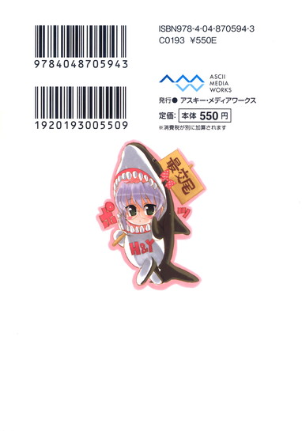
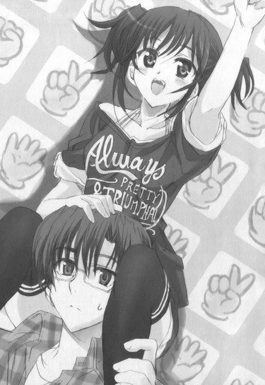

| [五十嵐雄策] 乃木坂春香の秘密14 | |
| 五十嵐雄策 | |
| (2015) | |
|
乃木坂春香の秘密 14
五十嵐雄策
|
底本データ
一頁17行 一行42文字 段組１段
乃木坂春香の秘密⑭
容姿端麗で才色兼備、『白銀の星屑』という二つ名まで持つ超お嬢様、乃木坂春香。彼女に対するもやもやした気持ちのまま、二人きりで過ごしたスウィートルームでのアニバーサリーな一夜。ベッドの上で見つめ合う中、確信していく自分の心の内側。そう、俺は春香のことが好きなのだ──。
そして三年生になって新学期が始まった。春香ともより親密になれた気がするし、彼女も少しずつ前向きになろうとしていた。そんな折に春香から飛び出したのは〝二人のこども〟発言。様々な想いや過去を解放するため、二人で共同作業に挑むことにした矢先、事件は起き──。
クライマックス直前、二人の結末は!?

五十嵐雄策
五十嵐雄策の秘密⑭。10月３日生まれのＯ型。第４回電撃ｈｐ短編小説賞最優秀賞を受賞し、文庫デビュー。最近の趣味は、『ＧＯＰＡＮ』で自家製のパンを作ること。あいかわらずのお嬢様的な趣味ですが、ブログを始めても５日で飽きたりするので、どうなることやら......？
イラスト：しゃあ
しゃあの秘密⑭。『キョウハクＤＯＧ'ｓ』もコミック連載再開！今回の口絵は、ラスト間際ということで気合いを入れロックに攻めて......ちょっとやりすぎて、リテイクが入りました。
乃木坂春香の秘密 14
第五十話
０
色々とイベント満載でハプニングフルだった春休みが終わった。
春香と二人きりの〝初めてのお泊まり〟で胸の奥が煮えたぎったキムチクッパ鍋のごとくグツグツボゴボゴォ！と噴火直前のキラウエア火山状態だったり、美夏との突発的逃避行的な一日旅行で脳下垂体が作りたての汲み出し豆腐のごとくとろっとろのみっかみかだったりの、波瀾万丈な春期休暇期間。
どこまでもサプライズで矢のような展開の連続だったが、それは本当に中身の濃い二週間だった。
僅か十四日間の出来事なのにほとんど半年くらいに感じられたというか......
そして今日はそんな春休みが明けての初日。
新学年としての新たな一日が始まる日であって──
「──おはようございます、裕人さん♪」
「ああ、おはよう、春香」
ちょこんと小首をかたむけながらにっこりと微笑みかけてくる隣の春香にそう返す。
「今日もとってもいいお天気ですね。春らしくぽかぽかとしていて......」
「ん、そうだな」
「暖かで空気も澄んでいて、それに新しい始まりの日にふさわしく桜のお花も満開で......。......そ、それで、その、同じクラスになれると、いいですね？」
「お......」
ちらりと恥ずかしそうにこっちを見てそう言ってくる。
そう、今日は二年生から三年生に上がっての一日目。
始業式や新一年生の入学式とともに、新しいクラスのクラス分け発表がある日なのである。
「ど、どうなのでしょう......？ わ、私......その、やっぱり裕人さんと同じクラスに、なりたい、です......」
少しだけ心配げな顔でそう言ってくる春香に。
「ん──大丈夫だと思うぞ」
「え......？」
「確実とは言えんが......だっておまじないをやってくれただろ？だからきっと同じクラスになれるはずだ」
「あ......」
その言葉に春香が口元に手を当ててこっちを見上げる。
お花見の時にやってくれた大切な人と同じクラスになれるというおまじない。
いやあのおまじない自体はツインテール娘たちによるインチキ都市伝説だってのは分かってるが、それとは別に何となくそうなりそうな予感がするんだよ。春の陽気に誘われて心がスプリングポジティブになっているというか。
「そ、そうですね......♪ おまじない......やりましたです......っ。信じる者は救われる......ごっどぶれすゆ～、です......！」
「ああ、その通りだ」
「はい......っ♪」
そんなことを話しながら桜の花びらが舞い散る通学路を二人で歩いていって。
学園に着いてみると、もうすでにクラス分けの発表は行われているようだった。
クラスごとに名前が書かれた掲示板の前には、ダイバーが撒くエサに集まってくるよく訓練された熱帯魚のごとく生徒たちが群がっている。
その中には見慣れた白城版のツインテール娘たちの姿もあって......
「あ、おっはよー、春香ちゃん、綾瀬っちー♪」
「あ、おはようございます」
「ん、よう」
挨拶を返すと澤村さんはにまにまとした顔で。
「もうー、今日も朝から二人っきりでメイクラブ登校かー。ほんっと、らぶらぶだなー♪」
「あー、いや」
「え、えと......」
「ちっ、少しは否定しろよー。これだからバカップルはー♪」
ちょっとだけ唇をとがらせながら肩をすくませて。
「まあそれはいいやー。ところで二人とも、もうクラス分け表は見たー？」
「ん、いやこれからだ」
「あ、今からちょうど見に行こうとしていたところで......」
「そっかそっかー。......んー、でもだとしたら、二人をちょーっとがっかりさせちゃうかもしれないなー」
「え？」
「それはどういう......？」
怪訝な表情になる俺たちに。
「んー、これ以上は私の口からは言えないかもー。案ずるよりも産むが易し。まずは見てからかなー」
「あ、ああ」
「は、はいです......」
意味深な澤村さんの言葉。
むう、まさか春香と違うクラスになったとかか......？
「ゆ、裕人さん......」
「ん、大丈夫だ......」
そうは言うもののそこはかとなく曇り空な心地になりながら掲示板の下へと向かう。
「じゃあ──見るぞ」
「は、はい......」
そう声をかけ合って同時にクラス分けが書かれた張り紙に目を遣る。
そこにあったのは──
「あ......」
「お......」
おどろおどうしい文字で書かれた恐怖新聞......ではなく。
同じ三年三組の一覧表の下に書かれた、乃木坂春香と綾瀬裕人の文字だった。
「おお、あったぞ、春香！」
「は、はい。同じクラスです......っ♪」
二人してそう顔を見合わせる。
もう一度見返してみてもやはり同じin三年三組なクラス分け表。
他には椎菜や澤村さん、朝比奈さんに三馬鹿もいっしょで、さらに今回は信長までもが同じクラスのようだった。ぬう、いったい澤村さんは何を懸念してたんだろうね？
白城版ツインテール娘の意味ありげだったアクションに首をかしげていると。
「へっへー、今年もおんなじクラスだね、春香ちゃん、綾瀬っちー♪」
「あ、は、はい」
「ん、そうみたいだな」
その白城版ツインテール娘がピースサインを向けながら笑いかけてきた。
その笑みは本当に楽しそうであり......いやホントにあの思わせぶりな前振りは何だったんだ？
その疑問に澤村さんはふっと暗い顔になって。
「えー、だって今年は担任が田鍋先生じゃないんだよー？マッチョで野性的な田鍋先生（♂三十八歳独身）。マウンテンゴリラみたいな顔で見てるだけですっごく動物園気分だったじゃーん。いなくなっちゃって残念だよー」
「......」
それは残念か......？
というか担任の名前って田鍋だっけか？ どこぞの悪目立ちなセクハラ副担任の印象が強すぎたためすっかり忘れてた......
目をパチパチとさせる俺たちに。
「──まあそれ（田鍋先生）はともかくー。とにかくこうしてまたおんなじ時間を過ごせるのはすんごく嬉しいことだよー♪今年もよろしくね、春香ちゃん、綾瀬っちー♪」
「お......」
「あ......」
にかっと笑いながらピースサインをしてくる。
さらには周りにいた椎菜や朝比奈さんも。
「ん、楽しくやろうね、裕人、乃木坂さん♪」
「また同じクラスになれて嬉しいです」
三馬鹿や信長たちも。
「そうだな、裕人はともかくまた乃木坂さんの黒タイツが見られるかと思うともうそれだけでドキがムネムネというか......」
「桃源郷な心地ですよね！」
「ゴートゥーヘブン!!」
「あははー、気持ちは分かるけど少しだけ甘いかなー。黒タイツはそれ単体でもすばらしいけどそれにやっぱりシチュエーションが加わることによってより未知の領域にまで進化するんだよー。具体的には図書室の曲がり角でぶつかってその拍子にスカートがまくれて禁断の三角領域が見えたり見えなかったりするのがまた乙でさー......」
口々にそんなことを言ってくる。
まあ......三馬鹿はいつも通りの世迷い言だし信長のよく分からん演説はどこかで聞いたことがあるような内容なのはともかくとして。
「ああ──こっちこそよろしくな」
「た、楽しい一年になるといいです......♪」
春香と二人でそう挨拶を返して。
新しい学年での一年が始まったのだった。
１
「は～い、みんな、おっはよ～ぐると～♪ 今日もあそこは元気びんびんかしら～？健全な青少年の心のオカズ......由香里おねいさんが参上よ～ん♪」
新しい顔ぶれが並んだ教室を見回しながらセクハラ音楽教師がそう呼びかける。
「あら～ん、みんな、元気ないわね～。若いんだから朝からあそこがポークビッツじゃなくてシャウエッセンになるくらいじゃなきゃだめよ～。あ、遅くなっちゃったけど、今年みんなの担任になるせくし～でこけてぃっしゅな由香里せんせいよ～ん♪よろしくね～ん♪」
「......」
いやまた朝っぱらからムダに公然わいせつだな、この人......
発する言葉がもう全てあますことなく教師として不適切の極みというか人間として終わってるというか......。
それ以前になぜか不祥事にまみれた去年の副担任の立場から今年は担任に昇格してるんだが、こんなのを担任にして大丈夫なのかね......？
教卓に腰掛けて得意げにちらちらと脚を組み替える変態痴女を前にして頭の痛い気分になる俺の隣で。
「わあ、今年も由香里先生がごいっしょなんですね......♪」
「あー、春香さん......？」
「由香里先生が担任の先生でよかったです。優しくて博識でおとなで、とっても素敵な女性ですし......♪」
「......」
まあ春香はルコとこの由香里さんのことを理想の大人の女性像みたいに思ってるからなあ......
実態は七歳くらいから中身の成長のないまま大きくエロくなっただけのただの二十五歳児なんだが。
「で、今日のホームルームの議題なんだけど～。今月の終わりに合唱コンクールがあるのはみんな知ってるわよね～？合唱コンクール......略して合コン。とっても素敵な響きだけど色々めんどくさい取り決めとかがあって、クラスごとの代表を決めないといけないのよね～ん。──というわけで、だれかやってくれないかしら～？」
くねくねと身体をくねらせながら二十五歳児が皆の顔を見渡す。
「ほらほら～、みんな早い者勝ちよ～ん♪ 今なら引き受けてくれた子におねいさんから魅惑でドリームな合コンのぷれぜんとがあるかもしれないわ～。先着一名様よ～？」
「......」
シーン......
無反応。
「み、みんな～......？ そんな風に売れ残って大きくなりすぎたペットショップのノーマルブルドッグ（定価十三万円から三万円に値崩れ）でも見たみたいに目を逸らさないで～......。ほ、ほら、だれか一人くらいいないの～？代表会議に出たり放課後の練習を主導したり由香里おねいさんからの連絡事項をボディランゲージで受け取ってみんなに伝達するだけの、とっても楽しくて簡単なお仕事よ～？」
「............」
シーン......
「お、お願いよ～......。おねいさん、今日は早く帰って新しく出来たイケメンメガネスーツバーに行かないといけないの～......。だからだれでもいいからだれか立候補して～......」
「............」
シーン......
やはりノーリアクション。
まあ本人はこれ以上ないくらいのご褒美だと思ってる余分な特典が明らかに二の足を踏ませる要因になってるのはともかくとして。
うーむ、これはあれみたいだな。いつかの白鳳祭で文化祭実行委員を決めようとした時のような雰囲気。あの時は椎菜が率先して実行委員を引き受けてくれたが、今回もそれに期待するってわけにもいかん。どうしたもんか......。
すっかり沈黙状態になった教室を見回しながらそんなことを考えていると。
「......」
「春香？」
と、隣の席で何やら春香がもにょもにょとしていた。ん、どうしたんだ？
「............う、うんっ」
「......？」
だがやがて何かを決意したかのように両手をぎゅっと握りしめたかと思うと。
勢いよくバッ！ と手をあげて。
「あ、あの、由香里先生......よろしければ、私にやらせていただけませんか......！」
「え？」
「春香......？」
「え、えと、が、合唱こんく～るのクラス代表です。その、できれば、立候補したいと思うのですが......」
その言葉に。
「え、ほ、ほんと、春香ちゃん......!?」
「は、はい......。だ、大丈夫でしょうか......？」
「も、もちろんよっ！」
イケメン年下好き女教師（病気）は教卓の上から転げ落ちんばかりに身を乗り出して。
「だ、だめだなんてそんなことあるわけないわ！も、もちろん、おっけ～よ～！無条件で担任権限で即時決定よ～ん！」
「あ......」
それを聞いた春香が口元に手を当てる。
「は～い、そういうわけで合コンのクラス代表は春香ちゃんでけっていしました～♪みんな春香ちゃんを助けてクラス一体になってがんばるように～。特に裕くんは身も心も調教され尽くしてご主人様に呼ばれる三秒前に気配を感じ取ってシッポを振るようになった従順なオス犬のように絶対服従で春香ちゃんに尽くさなきゃだめよ～ん。それじゃあ今日のホームルームはこれでおしま～い。──さ、朝から楽しいイケメンタイムよ～♪」
そう早口で宣言すると、頭の中がお花畑なセクハラ音楽教師は居残り勉強から解放された小学生のごとく教室を飛び出していった。やれやれ、どこまでいっても残念なダメ大人の見本だな......
まあもうそれはいつものことなので空を流れるスカイフィッシュのごとく気にしないとして。
それよりも今気になるのは。
「春香、お疲れ」
「あ、はい」
「クラス代表、なることにしたんだな。でもまた何だって......」
基本的には消極的な春香らしくない行動というか......いや立候補した行動それ自体は褒められるべきことなんだがさ。
すると春香は小さくこっちを見上げてきて。
「あ、あの、今年からは積極的に色々なことにちゃれんじしていこうと決めたんです......」
きゅっと小さく手をグーにしながらそう言ってきた。
「積極的に？」
「は、はいです。その、今までは何か新しいことに踏み出すのが怖くて、色々と後ろ向きでしたけれど......今年はもう少し自分から前を向くことができたらなと思って......。だからその、それの第一歩として合唱コンクールのクラス代表をやってみようかと......」
「春香......」
その言葉に軽く感動を覚えた。
確かに春香はどちらかといえば物事のあらゆる面において遠慮がちだ。それには生来の控え目な性格やら聖樹館女学院時代に色々とあったことが一因にもなってるんだろうが......それでもそれはどこか歯がゆいというか、もう少しくらい自己主張みたいなものをしてもいいんじゃないかと感じる部分はあった。
──それが少しでもいい方向に向いてるってのなら、これほど喜ばしいことはない。ほとんど我が事のようにめでたく思えるというか。
隣のおっとりお嬢様の前向きな心境の変化を嬉しく思っていると。
「で、でも、その勇気をくれたのは裕人さんです......」
「え？」
「ゆ、裕人さんが、いつだって傍で見守ってくれていることを知っているから......支えていてくれることを分かっているから......こうやって、少しだけ踏み出してみようと、自分を変えてみようと思うことができたんです。その、だ、大好きな、裕人さんが......」
頬を少し赤くしながらそう見上げてくる。
「春香......」
う、うーむ、そうやって言われると照れるな。
そもそも俺はそんな大したことをしてないというか、ただ好きで春香の傍にいるだけだ。そういう風に改まって感謝をされるとどうリアクションを返していいか分からんというか......
真っ直ぐに向けられた春香の視線にそこはかとなく困惑していると。
「こーら、またなに二人でらぶらぶしてるんだよー♪」
「お......」
「あ......」
にやにや顔の澤村さんが俺たちの肩を抱くように後ろから飛びついてきた。
「なーんか二人だけの桃色吐息な世界を作っちゃってるけど、私たちだっているの忘れてないかー？」
「え？ い、いや......」
「え、えと、そ、その......」
何と返していいか戸惑う俺たちに。
さらにやって来た椎菜たちも。
「そうだよ、あたしたちだって同じクラスメイトで友達なんだから」
「微力ですけど、お手伝いさせてもらいます」
「乃木坂さんが率先してクラスの代表を務められるというのなら粉骨砕身しないわけにはいかないだろう！」
「そうです、それは黒ニーソが象る絶対領域よりも分かりやすい宇宙の真理というものです」
「ワンフォーオール！ オールフォー乃木坂さん！」
「あははー、僕にできることなら何でもやるよー」
声を合わせてそんなことを言ってくる。
「あ......」
「みんな......」
春香と二人顔を見合わせて息を吐く。
まさか......こんな予想外の嬉しい反応が返ってくるとは。
みんな、いいやつだな......
「......」
こうして春香が来るべき合唱コンクールのクラス代表に選ばれるとともに。
周りの仲間たちの温かさを再確認することになったのだった。
「へ～、そっかそっか、お姉ちゃんとおに～さん、おんなじクラスになれたんだ～♪」
放課後の乃木坂邸。
春香の部屋の大きめのゆったりとしたソファ......には座らず、なぜか俺のヒザの上にちんまりと腰かけながら、元祖ツインテール娘が満足そうに笑った。
「うんうん、やっぱり運命は愛し合う二人をほっとかなかったか～。あ、それともこれはおまじないのおかげかな～♪美夏ちゃんおりじなるの恋のすぺしゃるまじっく～♪」
「はい、美夏のおまじないの効果だと思います♪」
「あー、まあ......」
自分では引き合いに出したものの、明らかにあのおまじない自体はガセもいいところだと思うんだが。
てかよく考えてみたら今美夏ちゃんオリジナルって言ったよな......？
何とも微妙な顔になる俺に。
「まあまあ、おに～さん、いわしさんの頭も信心からってゆうじゃん。信じることが大事なんだよ、大事♪」
「......びりーぶいずらぶあんどぴーすです」
「細かいことに疑念を抱く男の子はエチゼンクラゲかフナムシですよ～♪」
「──（こくこく）」
ぴっと人差し指を立てて（俺のヒザの上で）そんなことを言ってくる美夏に、無口メイド長さん、にっこりメイドさん、ちびっこメイドが援護射撃してくる。
うーむ、このデルタコンビネーションも相変わらずだな......
楽しげに笑うツインテール娘ズに何とも言えない気分になっていると。
「でもお姉ちゃん、合唱コンクールのクラス代表だなんてよくやる気になったよね～。びっくりだよ～」
「え？」
ツインテールをふりふりさせて春香の顔を見上げながら美夏がそう言った。
「ん～、分かんないけど、なんかお姉ちゃんってそうゆうのやる感じじゃなかったじゃん。前からもったいないな～とは思ってたんだけど～」
「そうですね～、春香様がこういったことをなさるのは初めてかもしません～」
「......ご立派になられて......」
「──（こくこくこく）」
「......」
やっぱり美夏たちからしてもこれは驚くような出来事なのか。
まあ基本は引っ込み思案なもじもじお嬢様だからなあ......
「あ、え、えと、それはですね......」
それを受けて春香が学校で俺にしたものと同じ説明をする。
ただし前向きになったその根本的な理由のところはぼやかした感じにして、その代わりに俺の方を伏し目がちにちらっと見てきて......む、むう、かわいいな......
その説明に。
「なるほどね～、そゆことか～。うん、い～と思うよ♪お姉ちゃんはほんとならもっと前に前に出ていいスペックなんだから～♪」
「はい～、とっても喜ばしいことだと思います～♪」
「......そのように前向きになられて......うっ......（むせび泣いている）」
「──（こくこくっ♪）」
それぞれの反応をするツインテール娘たち。
と、その横で春香が。
「あ、あの、そのことに関してなのですが......」
「？」
「あ、あの......実は合唱コンクールのクラス代表もそうなのですが、その他にもう一つ、プライベートでもやってみたいと思うことがあって......」
「お、まだあるのか」
「は、はい......」
ふむ......何だろうね？
プライベートと言われると詳細はよく分からんが、ウーパールーパーの飼育とかか？
そこで春香は何やらものすごく真剣な顔になって。
じっと正面から俺の目を覗きこむと。
「あ、あの、裕人さん......っ」
「ん、お、おう」
「──あ、あの、裕人さん、その、私といっしょに......こ、〝こども〟を作っていただけませんか......っ！」
「!?」
一瞬部屋の中が真空状態になって酸欠状態になった。
い、いや春香、な、何を言ってるんだ!?
こ、子供？ 俺の耳が最近飛散しすぎなスギ花粉のせいで詰まりでもしたんじゃなきゃ子供って聞こえたような？いっしょに子供を作るっていうのは、その、コウノトリがどうのこうのってわけじゃなく、当然そういう──な行為を伴うことを普通は言うわけであって......い、色んな意味で積極的になりすぎだろ!?
混乱状態になる俺の横で美夏たちも。
「お、おおおおおおお姉ちゃん!? い、いいいいまなんてゆったか、自分で分かってるの!?」
「あ、あらあらまあまあまあ～♪」
「......は、春香様......とうとうそこまで情熱的に......お、おうっおうっ......（感傷的になったオットセイのように号泣）」
「──（ぽ、ぽっ♪）」
同じようにコンフュージョン状態に陥っている。
その横で春香は一人ぽかんとした顔をして。
「あ、あの......私、何かおかしなことを言ってしまったでしょうか......？」
「い、いや、おかしいというかだな......」
あまりに発想が超飛躍しすぎで反応に困るというか......
何と言っていいか分からず大好物のキュウリかと思って口にしたらそれがピクルスだった時の河童みたいな顔になる俺に。
「そ、その、私、裕人さんといっしょに......〝さ～くるさん〟立ち上げを、することができたらと思ったのですが......」
「......は？」
そこで思考が一瞬止まった。「......サ、サークル？」
「は、はい」
その言葉にこくんと春香はうなずいて。
「さ、さ～くるさんです。同じ目標に向かってがんばる、同じ志を持った人たちの集まり......。そのさ～くるさんを、自分でやってみたいなあって......」
「......」
......サークルって......あれだよな？ 確か前に信長に（有無を言わせず）頼まれて手伝いをした、なんか秘密結社（偏見）みたいな......
じゃあ春香が作りたいっていうのは、その、ゴホン、子供じゃなくてそのサークル......？
考えをまとめるべく一度頭をブルンブルンと振る。
まあ確かにそれなら春香がチャレンジしたいと言い出すのは分かる。
その発想自体は春香の趣味にこの上なく合致してるし、手伝いをした時にいつか自分たちでやってみたいとも言っていた。
でもそれなら何だって......
「あー、春香......何で子供、とか......？」
言い出したりしたんだ......？
ワケが分からない気分になる俺に春香は。
「え？ あの、さ～くるさんと、そこで作る創作物は作り手にとっては子供のようなものだと聞いています。なのでそう表現したのですが......ま、まずかったでしょうか......？」
「......」「......」「......」「......」「......」
その場の全員（アリス含む）が脱力とともにため息を吐くのが聞こえたような気がした。
まあ......この上なく春香らしいっちゃあ春香らしいんだが......
「も、も～、ほんとにこの天然お姉ちゃんは......」
「ま、まあ春香様も真剣なんですし......」
「......がっくり......」
「──（こくっ......）」
「......」
その心地はまったくもって俺も同じなんだが、まあそれはこの際もう置いておくとして。
「それで春香、サークルって......」
「え？」
「サークル、やりたいんだよな？ 自分たちで立ち上げるって言ってたが、何か具体的な考えとかはあるのか？」
ポイントはそこだ。
子供うんぬんがインパクトがありすぎて見過ごされかけてたが、実のところそれが最も重要である。そもそも一回参加したことがあるだけでサークルがどんなもんだかもよく分かってないわけだし......
「あ、は、はいです。六月に『コミックキャッスル』──『コミキャ』というものがあるのですが、それにできれば、『Ｈ＆Ｙ』として参加したいと思っていて......」
「ふむ......」
「どういう形で参加するかは、具体的にはまだ決まっていないんです。同人誌、イラスト集、小説集、ゲーム......表現媒体はいっぱいありますです。どれが一番いいのか......。でもそこから裕人さんといっしょに、二人で決めていけたらいいなあと思って......。だ、だめでしょうか......？」
「......」
その言葉に驚いたのは事実だ。
唐突に提案されたサークル立ち上げ。
普通なら尻込みするのが当然だし、無茶もいいところだと思うだろう。
だけどそれが春香の変わりたい前を向きたいという決心の一環なら......大賛成なんだよ。
だから。
「分かった、やろう」
「え......？」
「サークル立ち上げだ。どこまで力になれるか分からんが、いっしょにがんばっていこうな」
「あ......」
その言葉に春香はぱあっと表情を明るくして。
「は、はいっ......♪ が、がんばって裕人さんと私の〝こども〟をつくっていければと思います......っ......♪」
両手をグーにしながら満面の笑みでそう言ったのだった。
ちなみにそのやり取りに隣のツインテール娘たちが。
「ふ～ん、二人でこどもをね～♪ へ～♪ ほ～♪ふ～ん♪」
「これはこれはおめでたですね～♪ さっそくお赤飯をお炊きしませんと～♪」
「......きっとお二人に似た立派な赤ん坊が生まれることでしょう......」
「──（こくこくっ♪）」
この上なく楽しそうな顔でにやにやとしていたことについては......まあこの際気にしないでおこう。
だけどその時の言葉。
それが根本的な起因となって後にあんなことになるなんて......この時の俺には欠片たりとも想像できなかったんだよな。
２
そんなこんなで新学年が始まって。
早くも一週間ほどが経った。
新しいクラスは前と同じように賑やかで、楽しげだった。
椎菜がいて澤村さんがいて朝比奈さんがいて三馬鹿、信長たちもいる。
クラス移動の時間や休み時間は他愛もないことを話して笑い合って、昼休みにはいっしょに昼飯を食べたりする。放課後は合唱コンクールの準備や練習をしたり、さらにその後や登下校時には春香といっしょに『サークル立ち上げ』についての具体的方策を考えたりして。
まるで二年生の時からの延長のような毎日。
そんな中、少しだけ変化したことがあった。
それは何かというと......
「──よっ、何やってるの～、はるはる、あやあや～♪」
「お......」
と、教室の後ろからかけられた声。
一見（一聴？）すると白城版ツインテール娘のようにノリがよくて底抜けに明るい声だが、振り返るとそこにいたのは──
「よっ、二人ともまた今日も一段と仲良しさんだね～♪も～、ほんっとにむらむらに聞いてた通りいつでもどこでもいちゃらぶ状態なんだから～、このこのっ♪」
澤村さんとはまた違った、さらに活発な感じのツインテールだった。
「あ、澤北さん。え、えと、そ、そういうわけでは......」
「そ、そうだぞ、何を言って......」
「へっへっへ～、隠すなって～。全身から溢れるらぶらぶオーラは隠せないっていうか、ほんと二人ともうぶうぶでかわいいんだから～♪」
親しげにそう後ろから肩を組んできたこの女子は澤北幸子。
この新学期から新しくクラスメイトになった一人で、この極めて野次馬的（？）なノリからも分かるように澤村さんの友達である。
どんな時でも明るくて社交的。澤村さんと同じやたらと学園の事情に詳しい情報通で、何でも一部では白城のダブル『澤』と呼ばれて恐れられているとかいないとか。いやツインテールを持つ者の宿命として常に情報を受信しなきゃ息が出来なくて生きていけない生態とかがあるのかね。
まあそれはともかくとして。
──そう、ちょっとした変化というのはこれ。
新学年になってから変わったこと。
新しいクラスになるのに付随して、新しい友達が増えたことだった（三馬鹿たちは「ば、馬鹿な......ここに来て新キャラ......だと......!?」などと言っていたが）。
「それでさ、はるはる～。今日の合コンの練習ってどうなってるんだっけ～？」
「え？ あ、は、はい。今日は十七時から音楽室が使えますので、そこで一時間ほど全体練習ができたらと思っていますです」
「そっかそっか～。もう本番まで二週間くらいしかないもんねっ、がんばらないと～♪」
楽しげに腕をぐるぐると振り回す。
と、そこで。
「おーい、サッチー、何やってんのー♪」
「あ、むらむら～♪」
「げ」
ムダに元気で明るい声とともにダブル『澤』の二人目が現れた。
椎菜と朝比奈さんといっしょに『むらむら』こと澤村さんは楽しげにこっちに近づいてくると。
「よー、なにやってるのさー？ 春香ちゃんと綾瀬っちに何か用だったのー？」
「うん、はるはるとあやあやが相変わらずいちゃいちゃしてたからさ～♪ちょっとちょっかい出したくなって～♪」
「え、あ、あの、で、ですからそういうわけでは......」
「い、いちゃいちゃってな......」
だが俺たちの声をまったく聞かず。
「むー、またかー、もうこの一年中春真っ盛りなばかっぷるはー♪」
「そだよ～、このどこでも万年桜色でピンクエアーまみれなばかっぷるめ～♪」
二人してにまにまと声と笑顔をユニゾンさせながらそんなことを言ってくる。
む、むう、何だか澤村さんが二人に増えた気分だ......
「ほらほらー、私たちに遠慮なんてしないでもっと盛大にきゃっきゃうふふしてていいんだよー♪新婚さんみたいな感じでさー♪」
「そうだそうだ～♪ むしろここでがば～っとおっぱじめちゃっても全然おっけ～っていうか～♪」
「あ、あの、その......（真っ赤）」
「だ、だからだな......」
左右からの息も吐かせぬ波状攻撃。
反論というか言い訳の言葉を発する一分の隙すら与えてくれない。も、もうどうしろってんだよ......
さすがにその状況を見かねたのか。
「ほ、ほら、良子に幸子、二人ともそれくらいにしとこうよ......」
「そ、そうだよ......は、春香ちゃんたち、すごく困ってるし......」
椎菜と朝比奈さんがフォローをしてきてくれた。
それを見て。
「ん、そだね～、最近は毎日恒例で見慣れてきたし、そろそろ音楽室に移動しよっか～♪」
「うんうん、もう三組の名物行事だし、練習中もきっとまた安定のばかっぷるっぷりを見せてくれるよー♪」
そう一方的に言いたいことだけを言って、二人の『澤』はこの上なく満足そうな顔で教室を出て行った。
後には俺たち四人と静寂が残される。
「え、えーと、良子たち、あれでも悪気はないと思うんだ、いちおう......」
「う、うん、春香ちゃんたちが仲いいから、からかいたくなるだけで......」
「あ、い、いえ......」
「あ、あー、まあ......」
悪気がないことは百も承知なんだがさ。
ただあまりに一＋一がダメな意味で十にも二十にもなりすぎる組み合わせというか......
ダブル『澤』の想像以上の攻撃力に少しばかり疲れた気分になっていると。
「ほ、ほら、もう時間だし、あたしたちも音楽室に行こう？」
「お、遅れちゃうとまずいですし......」
「は、はい、そうですね」
「ああ、そうだな」
椎菜たちの言葉に春香とうなずき合って。
俺たちも音楽室へと向かったのだった。
さて合唱コンクールの練習はほとんど毎日行われてるわけだが......ここでひとまず白城学園の合唱コンクールについて簡単な説明しておこう。
毎年四月の終わりに行われるクラス対抗の合唱大会。
練習期間はおよそ二週間で、課題曲が一曲と自由曲が二曲の、計三曲を競うことになっている。
今年の課題曲は『翼をください』であり、自由曲はそれぞれのクラスで選ばれることになっているわけだが。
その選ばれた曲というのが......
「は、はいです、課題曲は今日はここまでにしようと思います。次は自由曲①である『あの素晴らしい愛をもう一度』を練習したいと思うのですが、えと、みなさん、受け取った楽譜の方を開いていただけると......」
「「「はーい！」」」
一曲目はこれ。
『あの素晴らしい愛をもう一度』
合唱の曲としてはこの上なくスタンダードであり、特に何か言及する必要はないものだといえる。
ただ問題なのはもう一つの方であって......
「自由曲②の『ミラクルTRIAL』の方は、今日は通しで全体を流してみて、明日からバスの部分を重点的に練習しようと思います。なのでパートの方は個別練習をしておいていただけると助かりますです」
「「「りょうかーい！」」」
「......」
『ミラクル TRIAL』
それは言わずと知れた『ノクターン女学院ラクロス部』の曲である。
まあいちおうは複数人で歌う合唱曲（？）ではあるが、何だってこの曲が自由曲に選ばれているのかというとそれにはちゃんと理由があって。
曲を選んだその時のやり取り。
『あ、それではこれから自由曲を選びたいと思います。みなさん、何かやりたい曲はありますか......？』
『自由曲かー？』
『特にこだわりはないかなー』
『何か適当なの選べばよくない？』
『うんうん、どれでもいいと思う』
『え、えと......』
困り顔になった春香。
と、その時。
『んー、〝ミラクル TRIAL〟はどうかなー？』
『え......？（きらん）」
『Ｎ'ｓ ってグループの曲なんだけどさー。ハーモニーがきれいだから合唱には適してると思うんだー。それにガチガチの合唱曲じゃなくてこれくらい適度に外した方が目立って有利だと思うしー』
その言葉に。
『どう思う？』
『うーん、ちょっと面白そうかも......』
『いいんじゃね？ 自由曲だし自由なのにすれば』
『特に異議なーし』
『あ......で、では自由曲の一つ〝ミラクルTRIAL〟ということで決定いたします（嬉しそう）。続いてもう一つの方を──』
「......」
というわけで、自由曲②はこれに決まったのだった。
まあ周りのクラスメイトたちは特に疑念も抱いてないみたいだったし、春香は嬉しそうだったからいいっちゃいいとは思うんだがさ。
そんなこんなで現状に至り、今は春香のピアノ伴奏のもとに皆で『ミラクル TRIAL』を歌っているのである。
ちなみに何で春香が伴奏をしているのかというと、春香はクラス代表の他に自由曲のピアノの伴奏もやることになっていたからなんだよ。
最初はクラス代表をやってるんだからってことで伴奏候補から除外されてたんだが、春香がピアノが得意なことは周知の事実だし春香自身も今やる気モードということで、椎菜が課題曲、春香が自由曲を担当することになったのだった。
その八面六臂な姿を見ながら思う。
「......」
ホントに今回の春香は積極的によくがんばってるよな。
直向きで一生懸命。
ひいき目を入れてもその姿は賞賛に値すると思う。
そんな春香の熱意は他のクラスメイトたちにもしっかり伝わっているようで。
「乃木坂さん、今のソプラノのところなんだけど、もう少しブレスを後ろにずらした方がいいんじゃないかな？」
「あ、そうですね。ではそう修正しておきますです」
「春香ちゃん、ここの譜面台の高さって変えちゃってもいい？」
「はい、だいじょうぶです。──あ、それとこの前アレンジしたメゾソプラノのパートなのですが......」
「ん、そこは大丈夫！ みんなで自主練することになってるから。任せておいて！」
「あ、そうしていただけると助かりますです」
「乃木坂さん、こっちのテノールの部分は──」
「あ、はい──」
椎菜や朝比奈さん、澤村さんに澤北さんや、三馬鹿に信長たちはもとより、新しく同じクラスになった他のクラスメイトたちもこの上なく協力的だった。
和気あいあいとした雰囲気。
春香を中心にクラスが一つになっている感じで......
何だか全てがいい方向に向かっていってるような気がして、見てると嬉しい心地になってくるんだよな。
「......」
そしてそんな中、この合唱コンクールにおいて俺にも一つ割り振られた役目があった（調教された従順なオス犬役以外に）。
それは何かというと。
「それでは今のところをもう一回おさらいしてみたいと思いますね。──裕人さん、合図をお願いします」
「あ、お、おう」
春香の言葉に、手に持った指揮棒を頭の上に掲げて。
そしてそのままぎこちない手付きでそれを振り始める。
まあその、役目ってのはこれ、つまり指揮者をやることになったわけで......
「こ、こんな感じか......」
「はいです、だいじょうぶです。テンポは合っていますので、落ち着いてそのまま続けてください」
「あ、ああ......」
もちろん指揮者の経験なんて俺には皆無なわけだが、何とか春香の指示に合わせて指揮棒を動かしていく。
と、そこで。
「こ、ここをこうして......」
「きゃ、きゃあっ、ちょ、ちょっと裕人、し、指揮棒がスカートに引っかかってるよ！」
「!! し、椎菜!? ス、スマン!!」
指揮棒の先っぽがすぐ隣で歌っていた椎菜のスカートに引っかかっていた。
慌てて指揮棒を引っ込めるものの、だが勢いよく腕を引いた反動で、今度は朝比奈さんのスカートの下に俺の指揮棒（卑猥な意味ではなく！）がもぐり込んで。
「い、いや......綾瀬くん、やめてください......」
「!? こ、これは違うんだ！」
たまたま俺の指揮棒（猥褻な意味ではなく！）が粗相をしてしまっただけで......
その一連のやり取りを見て澤村さんが少し不満げな顔で。
「何で椎菜とか麻衣とかばっかりー。私のならいくらでもめくらせてあげるのにー。ほらほら綾瀬っち、こっちのスカートは甘いぞー♪」
「好きだね～、あやあや～♪」
「だ、だから、ワザとやってるんじゃないってのに......」
冤罪もいいところである。
いやそりゃあ悪いのは俺の指揮棒（くどいようだがエロい意味ではなく！）なんだが......
「......」
う、うーむ、しかし指揮ってのは難しいもんだな......（色んな意味で）
だけど春香のためになるなら、これくらいは調教された従順なオス犬のごとくやってみせる。何事もなせばなるに違いない。
気を取り直して指揮をやり直そうとして。
今度は。
「あ、ゆ、裕人さん、それは四分の四拍子です」
「え？」
「え、えと、普通はあまり使われず、主に葬送行進曲などに使われる拍子で......」
「......」
......先はまだ、それなりに長そうだが。
こんな感じに合唱コンクールの練習で放課後は埋まっている一方。
それと同時並行するカタチで、その後に『サークル立ち上げ』についての相談も行われていたりもした。
夕方過ぎの春香の部屋。
そこで二人でサークルについての資料などを広げて、色々と話したりする。
「え、えと......こちらが今回の『コミキャ』のカタログになります」
「ふむ......」
目の前にあるのは様々な同人誌やら『コミキャ』のカタログやらＣＤロムやら『齧歯類でも分かるサークル創設講座』やら。
それらをいっしょに眺めながらこれからの方向性について話し合っていく。
「春香としてはどういうことがやりたいんだ？やっぱりその、ようかい......ゴホン、イラストが......？」
「あ、いえ。特にはこだわってはいないです。〝こども〟はどんな子でもいとおしいですし......。それはもちろん、イラストを使うことができるこんてんつでしたら理想的ではありますけれど......」
「だと、極端な話では文章とかでもいいのか？」
「あ、はいです。てきすとを書くのも好きですので、それも嬉しいです」
「うーむ......」
とするとそれこそ選択肢は山ほどある気がする。
俺の頼りない知識でパッと調べた感じでも同人誌作成やらイラスト集作成やら......表現方法はとにかくたくさんあるみたいである。
知らない領域まで考慮に入れるとそれこそ候補は数えきれない。
果たしてその中から何をやるかを絞りきれるのか......
「......」
信長辺りに訊けば海洋深層水を得たラブカ（深海魚）のごとく喜んで食い付いて教えてくれるんだろうがそれはまあ後々色々面倒くさいし、それにせっかく春香が、その、二人の〝こども〟を作りたいとまで言ってくれたんだ。その後の展開はともかく、最初のコンセプトというか大元となる部分くらいは二人だけで決めておきたいっていう気持ちがあるんだよ。
「小説集みたいなのとかもありだよな......途中にイラストいれたりとかで......」
「そうですね。興味ありますです」
「むう......」
「う～ん......」
テーブルの上に並べられた同人誌をめくりながらああでもないこうでもないと頭を捻り合う。
と、その時だった。
「お、これとかも参考になるんじゃないか？」
「どれですか？ ──あ、はい、そうですね、うまくアレンジすれば面白いものに......──っ!?」
「ん、どうした春香──」
春香の視線の先に目をやる。
そこで目に留まったモノ。
それはノクターン女学院の春琉菜様となんかよく分からんメガネの男とが生まれたままの姿で、発情期のアルパカカップルのように絡み合っている姿だった。
「こ、これは......っ！」
「ゆ、ゆゆゆゆゆ裕人さん!? は、春琉奈様が、春琉奈様が、着衣を脱ぎ捨てて組み体操をして......あ、あうあうあうあう......」
「お、落ち着け春香！ だ、大丈夫だから！い、いったいどこからこんなもんが......」
『ノクターン女学院セクロス部～放課後の秘蜜特訓♪～』と表紙に書かれた同人誌。
い、いや、こういったアダルティな属性に免疫のない春香はこの手のブツには本能的に手を出さないはずなんだが......
すると茹で上がったオマールエビのごとく顔を真っ赤にした春香が。
「あ、あの、あの、今回はりさ～ちのために普段は見ないコーナーにも足を伸ばしまして......。そ、それで表紙がとってもかわいかったのでひとまず購入してみたんですが......」
「な、中身は？」
「か、確認しませんでした。あ、後の楽しみにしておこうと思って......」
「そ、それが原因か......」
そういえば同人誌には表紙トラップとかいうものが存在するとかしないとか......
信長が前にそんなことを言っていたような気もするが......ともあれ今はそんな悠長に構えてる場合じゃない。
早いところこの状況を何とかしないと春香が沸騰しすぎて蒸発しちまう！
俺は開かれたパンドラの函のごときエロ同人誌を鍋に浮かんだ僅かなアクも見逃さないラーメン職人のように回収しようとして。
焦りすぎて足下がもつれた。
「──ぬおっ!?」
「あ、ゆ、裕人さん!?」
支えてくれようとした春香と二人してバランスを崩して。
ドサリ！
そのまま春香に覆い被さるようなカタチで床に倒れ込んだ。
「つ、つつ......」
「う、う～ん......」
二人して折り重なって床に倒れた状態。
「わ、悪い、ちょっと滑って......。今どくから......」
「あ、い、いえ......」
ズレたメガネの位置を直しつつ頭を振りながら身体を起こそうとして。
「──ん？」
と、そこで気付いた。
倒れた拍子に布団と毛布の位置関係になった俺たちの今の体勢。
春香の着衣がそこはかとなく乱れスカートの端からちらりと白いものが見えたりしていて......それは真横で開かれたエロい感じの同人誌のページと、ほぼ同じ状況になっていた。
「あ、ス、スマン！」
「え、い、いえ！」
思わず互いに明後日の方向を見る。
だが逸らした視線の先にはさっき開かれた『合体セクロス奥義・白鯨』とか書かれた、春琉菜様たちがＭ字開脚をしつつ×××（自主規制）してるシーンがこちらに向けられていて......
「あ、あー、い、いやこれはわざとじゃなくてだな......！」
「は、はい。あ、い、いえ、わ、分かってますです......！」
「......」
「......」
そのまま二人して顔を赤くしたまま石像のように動きを停止する。
「............」
今すぐにも離れるべきなのに......潤んだ目の春香の顔から、なぜか目が離せない。
浮かんでくるのはこの前初めて〝二人だけのお泊まり〟をした時の春香の姿。
真っ白に整えられたベッドの上にお姫様のごとく横たわったあの時の春香の瞳と、今の全幅の信頼を置いて親犬を見つめる仔犬のようにこっちを見上げてくる真っ直ぐな瞳とが重なるようで......
「......」
あの時は言えなかった言葉。
い、今がもしかして、その時か......？
「は、春香......」
「ゆ、裕人......さん......？」
「は、春香、俺は──」
ゴクリとツバを飲み込んで声を発しかけて──
「やっほ～、お姉ちゃん♪ おに～さん来てるんだって～♪」
「!!」「!?」
ガチャ！
勢いよく扉が開かれて、ミニスカートとカーディガンを着たちんまいツインテール娘が姿を現した。
「なになに～、今日も二人でらぶらぶな放課後てぃ～たいむ～？も～♪それはらぶらぶで二人っきりの時間を過ごしたいのは分かるけどさ～、来てるんならわたしにも教えてくれたって──え、えっ!?」
そこで言葉が止まる。
目の前にあるのは俺たちのアブノーマルな体勢。
それを見るとそのツインテールをぶるりと震わせて。
「な、ななななな何やってるの二人とも！ そ、そそそそんなえろい格好をして......！」
「え、い、いやこれはだな......」
「あ、あの、え、えと......」
ど、どう説明したらいいんだ？
突然の危機的状況にしどろもどろになる俺たちに。
「──はっ、ま、まさか、こ、子作り!?」
「ち、違う！」
「あ、は、はい......〝こども〟の作り方についてのご相談を......」
「は、春香!?」
い、いや作品作りっていう意味でなら違わないんだがさ。
それを聞いた美夏がうるうると涙目になって。
「ふ、二人とも、ひ、ひどいよ......。ま、まだわたしにも望みがあると思ったのに、いきなりそこまで一気にいっちゃうなんて......」
「だ、だからだな......」
これは事故というか偶然の産物というか......
だが美夏はまったく耳に入れずに。
「こ、こうなったらわたしも負けてらんないんだから～！わ、わたしだってやる時はやるおんなだよ！み、みっかみかにして〝既成事実〟を作っちゃえばお姉ちゃんと同列なんだもん！うにゃ～！」
「お、おい！」
がばっ！
そのままツインテールを揺らして突撃してきて。
春香と美夏と三人で、もつれ合うカタチで床に倒れ込んだ。
その状態は『合体セクロス奥義・白鯨』の上位バージョン、『合体セクロス秘奥義・白鯨たちの憂鬱』に極めて酷似しているものであって......
「こ、こら、美夏......く、苦しいです......」
「う、うにゃ～！ み、みっかみかあたっくなんだから～！」
「ふ、二人とも、動くと余計にもつれて......」
三人の手やら足やら太ももやらが複雑に絡み合って身動きがとれない状態。
もはや何が何だか分からんというかお嬢様姉妹の胸元がはだけたりスカートがめくれたりして色々と何かが溢れ出しそうなシチュエーションで......ぬ、ぬう、色んな意味で危険水域だ......
「あ、だ、だめです......そ、そんなに動いたら......あっ......」
「し、しらないもん......っ！ こ～なったらもう、し、死なばもろともだよ～！うにゃうにゃうにゃ～！」
「み、美夏......や、やん......っ......」
「............」
結局そのままもつれ合い続けて。
騒ぎに気付いた葉月さんや那波さん、アリスが救出してくれるまで、『合体セクロス秘奥義・白鯨たちの憂鬱』状態は続いたのだった。
──しかし合唱コンクールやら『サークル立ち上げ』やら新しいことが盛りだくさんで。
うーむ、本当に新学期というか、春の到来って心地がするね。
そんな風に毎日は過ぎていき。
全てがうまくいっているかのように思えた。
順調で充実した日々。
合唱コンクールのクラス代表をがんばってこなしサークルの打ち合わせも好調。
春香も毎日が楽しそうだし、新しいクラスメイトたちともさらに打ち解けて仲良くやっているようだった。
「おはよう乃木坂さん♪」
「あ、おはようございます」
「今日もいい匂い～♪ 朝に乃木坂さんに会うと今日一日いいことがあるーって気がする♪」
「あ、い、いえ、そんな......」
「あ、乃木坂さん、よかったら今日いっしょにお昼ご飯食べない？」
「ソプラノパートでちょっと相談したいことがあって......」
「話しながらオカズ交換とかもしようよ♪」
「あ、はい。ぜひ♪」
そういった楽しげなやり取り。
だがそんなある日。
その出来事が......起こっちまったんだよ。
３
それはいつもと同じ放課後だった。
掃除が終わった後の賑やかな音楽室。
今日も今日とて合唱コンクールに向けての練習をするために、三年三組はクラス全員でわいわいと集まっていた。
「今日もがんばろうね、乃木坂さん」
「あ、はい。ふぁいとです」
「春香ちゃん、よければ楽譜コピーするの手伝うよ？」
「あ、すみません。ありがとうございます」
「乃木坂さん、こっちのパートのアレンジのところなんだけど......」
「あ、は、はいです」
相変わらず春香はみんなの中心となって忙しそうに動いている。うーむ、そんな姿も見慣れてきたね。
そんな中。
「あ──裕人さん」
「おう、今日も気合い入れていこうな」
「あ、はいです。裕人さんの指揮、とってもいい感じになってきていますし♪──あ、そうです」
「ん？」
と、そこで春香が少しだけ声をひそめて耳元に顔を近づけてきた。
「あの、今日練習が終わった後に少しだけ時間を取ったりできますでしょうか......？」
「ん、大丈夫だけどどうしたんだ？」
「はいです。実はさ～くるさんの件で『イノセント・スマイル』最新号に参考になる記事が載っていたんです。なのでお話をしたいと思うのですけれど、今日は夕方からお琴のレッスンがありましてそちらに行かなければならないので、申し訳ないのですが練習が終わった後にちょっとだけご相談に乗っていただきたくて......」
「ああ、そういうことか。ん、オッケーだ」
「あ──ありがとうございますっ。では練習が終わったら......♪」
「ああ、また後でな」
「はいっ♪」
そう楽しそうにうなずいて。
春香はそのまま練習に戻るべく、カバンを胸にピアノの方へと向かおうとする。
その先にある、床に落ちていた楽譜をコピーしたプリントにこれっぽっちも視線をやることなく。
──そう、ここ最近は忘れがちだった春香の特性。
俺と春香の出会いのきっかけともなった根本的なパーソナリティー。
春香は致命的なところでうっかりしていて......至高の神（ドジっ娘神）に愛されるレベルのドジっ娘だったってことを。
「春香、足下に気を付け──」
気が付いて声をかけようとするも文字通り一歩遅く。
「え？ ──あっ」
「春香っ！」
「きゃ、きゃあっ！」
プリントの上に見事にダイレクトスタンプするとともに慌てた声を上げて。
春香の身体が宙を舞った。
目を瞠るような五回転。
それはおそらく今までの春香の空中旋回歴の中でも一、二を争うと思われる回転数であり......くっ、間に合うか......！
全力で床を蹴ってイネ科の植物を見つけたコメツキバッタのごとくダッシュする。
そして春香が床に落下する寸前で。
──バッ！
お池にハマる寸前のドングリのごとく転がって何とかギリギリで春香の柔らかい身体をキャッチすることに成功した。転がった勢いでメガネはすっ飛んでいったがまあそれはいいとして......やれやれ、いいかげんこういったエマージェンシーシチュエーションにも慣れてきたな......などと思いつつ春香の顔を見る。
「大丈夫か、春香？」
「あ、は、はい、おかげさまで......」
「ケガとかは......平気そうだな」
「は、はいです。裕人さんのおかげでどこも痛くなくて──っ!?」
と、そこで春香の表情が凍り付いた。
何か見つけてはいけない妖精さんでも見つけてしまったように、その視線がある一点に釘付けにされている。ん、何だ、どうしたんだ？
首を傾けながら春香の視線の先に目をやって。
「あ......」
そこで全てを理解した。
──そこには......今の一連のアクションの弾みで床に落とされて、中身が全てぶちまけられた春香のカバンがあった。
さっきまで春香の胸に抱えられていたカバン。
その中身が露出しているということは当然のごとく『イノセント・スマイル』やら『コミキャ』のカタログやら『齧歯類でも分かるサークル創設講座』やらも床に露わになっているということで......周りにいたクラスメイトたちもそれを見てざわざわと困惑したように声を上げている。
「な、なあ、あれって......」
「乃木坂さんの、なのか......？」
「あれってマンガだよね？ それになんか分厚い......カタログ？」
「なんかああいうの、朝倉とかが読んでたような......」
「アニメ絵が載ってるやつだよね......？」
「......」
それは俺たちが出会って間もなかったいつかと同じエピソードを彷彿とさせる状況。
忘れることができないカタログ露出事件。
──あの時は春香は過去のトラウマにも関連するその出来事に直面して、半ばパニック状態になってその場から逃げ出した。
逃げ出して心を閉ざした。
そしてそのまま部屋に閉じこもり......三日間学校にも来なかった。
あれはまさに去年一年間の最大の事件と言えるものであって......
「............っ」
また春香にあんな顔を......させるわけにはいかない。
瞬間的に頭に浮かんだのはそれだった。
人形のように感情をなくした春香の表情。もうあんなのを見るのはたくさんだ。前と同じ手で芸がないと言われるかもしれんが、ここはやはり俺がムリヤリに春香に貸しでもしたか、あるいは俺の私物を春香が拾っておいてくれたことにでもして乗り切るしかないだろう。
その策を実行せんと、俺はちらりと春香の方に目を向けた。
あの時と同じように今も世界の終わりのような悲痛な表情になっているかと思いきや。
そうじゃなかった。
「......」
「え......？」
──にこり。
春香は俺の顔を見返して、穏やかに笑った、
そして皆の方に向き直ると。
「──す、すみませんです。転んでしまいました」
「......」
「お、お騒がせしてしまって申し訳ありません。だ、大丈夫ですので気にせずにいてもらえると......。えと、それではそろそろ練習を始めたいと思います。みなさんも、所定の位置についてくださいね」
それだけ言うといそいそと散らばったカバンの中身を拾い集め、そのままピアノへと戻る。
その振る舞いはあまりにも自然すぎて......
「は、春香......？」
逆に違和感を覚えた。
何かちぐはぐな感じというか......
「乃木坂さん......」
「春香ちゃん......」
「はるはる......」
椎菜たちもそのリアクションにどうしていいのか分からないようだった。
明らかに目の前で露出されたもの（『イノセント・スマイル』等）に気付いているはずなのに、一様に戸惑ったような表情で春香を見るだけで、それ以上の言葉が続いてこない。
「......」
「......」
「......」
「......」
そんな沈黙の時間。
それがいつまで続くのかと思われた、その時。
ガラリ！
「うえええ～ん......行きつけのイケメンメガネスーツバーが警察に摘発されて閉店しちゃったわよ～......」
音楽室の扉が勢いよく開かれて、泣き顔のセクハラ音楽教師が転がるように乱入してきた。
「何でもおねいさんのお気に入りだったポールダンスイベントがまずかったらしくて～......。イケメンのはだけるワイシャツに飛び散るメガネ汁......お～いおいおいおい......これから何を楽しみに生きていけばいいの～......世の中もう真っ暗よ～......って、あらん？な、な～んか微妙な雰囲気ね～ん......？ど、どうしたのかしら～、おねいさんの悲しい気持ちをくみ取ってくれて慰めパーティーの相談でもしてくれてたとか......？」
「............」
......少しは空気を読んでくれ、この変態音楽教師......
ホントにどこまでもどうしようもないというか人として最底辺というか......
「......」
ともあれその変態アタックで何となくこれ以上練習は続けられないような空気になって。
その場はうやむやなまま解散となったのだった。
練習後の音楽室。
みんなが帰ってシンと静かになった音楽室で、俺は春香に話しかけた。
「あ、あー、春香......」
「......」
「さっきの、その、何て言うかだな......」
う、うーむ、うまく言葉が出て来ない。
何と声をかけたらいいものか......
そんな俺に。
「......あの、だいじょうぶですよ？」
「え？」
「えと、私ならだいじょうぶです。さっきは突然のことでちょっとびっくりしてしまいましたけれど、気にしてませんから......」
「春香......」
こっちを向きながらにっこりと笑いかけてくる。
だけどその笑顔はどこか作ったもののように見えて......
「......本当、か？」
「え......？」
「本当に平気なのか？ 強がりとかじゃなくて......」
「......それ、は......」
そこで春香は黙り込んでしまった。
何かを考えこむような沈黙。
「......」
......そうだよな。
本当は平気なわけがない。あれだけ発覚することを恐れていた趣味がみんなの前で露見しちまったんだから......
だけどやがて春香は何かをこらえるようにきゅっと目をつむると。
「......ほ、ほんとうは、とっても怖いです......」
身体の前で両手を握りながら、ぽつりとそう言った。
「『イノセント・スマイル』を見られて......『コミキャ』のカタログを見られて、みなさんにどう受け取られたのか......みなさんに私の趣味を、ありのままの私を受け入れてもらえるのか......い、今でも手と足が震えてとまらない、です......心臓が激しく動いて破裂してしまいそうです......。で、でも......」
「......」
「ゆ、裕人さんが隣にいてくれたから......傍にいてくれるということが分かっていたから......ああいう風に振る舞うことができたんです......。逃げ出さずに、がんばることができたんです......」
「春香......」
「......裕人さんが......いて、くれたから......」
そう声を詰まらせて小さく肩を震わせる春香。
その姿はどこまでも小さくか弱く見えて、ありのままの姿を見せてくれているように思え......
だから俺は。
「......大丈夫だ」
「え......」
「前にも言ったけど、俺はいつだって春香の傍にいる。春香の傍で春香を見てる。春香がイヤだって言うまで、春香の傍を離れるつもりはない」
それは俺の心からの気持ちでもある。
何があっても春香の味方でいて春香の傍にいようという気持ち。
何といっても......俺は春香のことが、好きだからな。
「ゆ、裕人さん......」
その言葉に春香は瞳をにじませながら顔を上げる。
「あ、ありがとうございます......ゆ、裕人さんに、そう言っていただけると、そ、それだけで、私、私......」
「それにきっと大丈夫だ。みんなだって分かってくれてる。信じよう」
「裕人さん......は、はい、そうですよね......」
小さくうなずく春香。
その返事に迷いはなかったけれど、やはりどこかには不安の色は隠しきれずにいて......
「......」
それはそうだろう。
いくら口では何ともないとは言ってもあれだけの出来事だ。聖樹館時代の苦い思い出もある。内心ではどうやったって不安に違いない。
「............」
だったら。
俺にできることは──
そして翌日になった。
この日は朝から練習がある日。
春香と二人で音楽室に入ると──
「あ......」
「ぬ......」
──そこには......だれの姿もなかった。
昨日までの賑やかな様子がウソのように静まり返った音楽室。
ただ整然と並べられたイスだけが、今の状況を表すかのようにひっそりと朝の空気に紛れてたたずんでいる。
「............」
「春香......」
その様子を目にして春香はうつむきながら声を出さずにいた。
角度的に陰になっていて俺のところからはその表情は見えない。
だけどすぐに顔を上げるとピアノの前に座って、
「だいじょうぶ、です......」
「え？」
「きっと、みなさん......来てくれます。私はそう信じています。だから私たちだけでも先に練習をしておきましょう」
「春香......」
はっきりと言い放った言葉。
それは心からの言葉であれたとえ強がりであれキチンと前を見据えようとしている言葉であり......
本当に......強くなったんだな。
前までの春香だったら、きっとこの光景を見ただけで心が折れてしまってただろう。
この場に留まって、こうして能動的な言葉など発することなどできなかったに違いない。
「......」
前を向いて、新しいことに積極的にチャレンジしていけるようになりたいと言っていた春香。
変わりたいと言っていた春香。
そんな春香だったからこそ、この一年で強い心を身に付けた春香だからこそ──この結果を引き寄せることができたんだろうな。
だから俺は指揮台の上に立って。
そっと手にした指揮棒を頭の上に掲げた。
「裕人、さん......？」
怪訝な顔になる春香。
それを安心させるかのように俺は右手を振り──
～～～♪
「え......？」
同時に響いてきた歌声。
合唱用にアレンジされた『ミラクルTRIAL』。
それは音楽準備室の中から聞こえてきているもので......
「みな、さん......？」
「......」
それは完璧にまとめられたコーラスだった。
昨日までいまいち不揃いだったり音程が合わなかったりしたパートも、すっかり修正されている。
「あ、あの、これは......？」
「......」
目をぱちぱちとさせる春香。
その驚きを横目に音楽準備室からは椎菜や朝比奈さんや澤村さん、三馬鹿に信長たちをはじめとしたクラスメイトたちが出てくると。
「ね、ね、どうだった春香っち、うまくできてたー？」
「昨日の今日だからちょっと自信がないんですけど......」
「乃木坂さんが教えてくれた通りにできたかな？」
「少しでも喜んでもらえたなら朝の五時から音楽準備室で待機していた甲斐があったというもの！」
「コケティッシュなお天気お姉さんの低気圧の谷間ならぬ胸の谷間を見逃した悔しさも浮かばれます」
「ナイスハーモニー！ ナイスハーモニー！」
口々にそう話しかけてきた。
さらにはそれに引き続いて、他のクラスメイトたちも「驚かせちゃったかな？」「乃木坂さんに隠れてみんなでこっそり練習して驚かせようって話になって......」「でも春香ちゃんの教え方がよかったから、みんなこんなに上手になったよ♪」「俺はあなたの犬です！」と笑顔で迎えてくれる。
「あ......」
その態度は昨日までの春香に対するそれと何ら変わらないものであって......
「──ほらな、春香。やっぱり大丈夫だったろ？」
「ゆ、裕人さん......」
「春香は春香だ。今さら趣味がバレたくらいで、何も変わることなんてない」
春香の目を見ながら語りかける。
「は......はい......はい......」
感極まったのか、その瞳に涙を浮かべて何度もこくこくとうなずく。
まさに最高の結果だが、これは本当にどこまでも春香自身が導き出したものだ。
──昨日の夜に、やはりいてもたってもいられなくなって......クラスメイトたちに電話をかけたんだよ。
もちろん皆のことは信じてはいるが、万が一何か誤解が生じているということもある。できるだけのことはしようと思い立ち行動したわけだが。
そこで返ってきた言葉は。
『え、いいんじゃないか？ 俺だってプロレスとか好きだし、趣味は趣味っていうか......』
『んー、アニメとかマンガとかはよく分からないけど、でもそういうのって別に乃木坂さん自身には関係ないと思う』
『春香ちゃんがんばってるし、いちいちそんなことを気にするのって野暮だと思うんだ』
『え、今日のあれって何か大事だったのか？確かに派手に転びそうにはなってたけど......』
『そんなことより乃木坂さんって彼氏いるのか？......綾瀬、まさかお前がそうなんじゃないだろうな！』
そんな、予想以上に肯定的な言葉だった。
皆だれもが春香に対して好意的であり、その趣味についてなどは特にマイナスに言うこともなくて......
みんな表面的な要素だけではなく、春香の中身についてちゃんと見てくれているってことがよく分かる。
俺なんかがどうこうするまでもなく、春香の人柄は皆に伝わってたってことだよな......
そのやり取りを思い出して改めて嬉しく思っていると。
「──でも綾瀬っち、やるねー♪」
「え？」
と、澤村さんがそんなことを言ってきた。
「なに謙遜してるのさー。このサプライズを提案したのは綾瀬っちじゃないー♪にくい演出なんだからー♪」
「え、いやそれは......」
「それに今に始まったことじゃなくて、どんな時でも春香っちのことをサポートしてるのも知ってるんだからー。昨日の電話だって一生懸命だったじゃーん。ずっと春香っちのことをフォローしててー。うんうん、ほんとに寝ても覚めても春香っちのことが大好きで頭から離れないんだよねー♪もー、ほんっとにらぶらぶすぎてあてられちゃうなー♪」
「む、むう......」
そうは言われても俺は本当に大したことはしていない。
クラスの皆に電話をした際に、みんなで少し早く集まって練習をしてその成果を春香に見せてみないかと提案してみただけだ。
それに全員が集まってくれたのは春香の人望だし、まあ直前になって澤村さんから「それなら最初はみんなで音楽準備室に隠れてた方がおもしろくないー？うんうんそうだよ、そうしようぜー♪」と言われた時は少しばかりどうしようと思ったが。
「......」
──ともあれこれで一件落着だ。
第二次『イノセント・スマイル』露出事件は無事に解決したし、春香はその趣味が公になっても周囲に受け入れられた。
その結果として今もたくさんのクラスメイトたちに囲まれて楽しそうに微笑んでいる。
「......」
よかったな、春香......
みんなに囲まれて泣き笑いのような笑顔を浮かべる春香。
それを見て心からそう思ったのだった。
ちなみにこれは限りなく余談だが。
音楽準備室にはお気に入りのイケメンメガネスーツバーが潰れてご傷心なセクハラ音楽教師＠酒浸りが昨日の放課後からずっとゴミのように転がっていたことについては......まあスルー推奨なポイントだろう。
こうして色々とあったものの最後は全てが丸く収まったように思えたわけだが。
だけどこれで終わりじゃなかったんだよな。
現在と未来の試練は乗り越えられたけれど。
春香にはそれ以外に乗り越えなければならない過去のしがらみがまだあったということを......もう少し後に再認識させられることになるのだった。
和やかに笑い合っていた春香や俺たちを少し遠巻きから見ていた一人の女子。
俺たちには聞こえていなかったが......その女子は、こうつぶやいていたんだよ。
「──そっか、どっかで聞いたことがあるような気がしてたんだけど、はるはるって、あの聖樹館女学院の......」
４
そして合唱コンクールの当日を迎えて。
三年三組は......見事に最優秀賞を獲得することができた。
「やったね、春香っちー♪」
「おめでとう、乃木坂さん！」
「や、やりましたね」
「は、はい、やりました......！」
椎菜たちと喜びを分かち合って。
「でもホントに春香っちがクラス代表をがんばってくれたおかげだよー。──ほらみんなで春香っちを胴上げだー♪」
「ん、そうだね！」
「ど、胴上げってどうすればいいのかな......？」
「いいからいいから、そんなのノリだー♪ それー♪わっしょいわっしょいー♪」
「わ、わあ......！」
澤村さんに促されてクラスメイトの女子たちから胴上げもされていた。
さらに合唱コンクールが終わってからも春香フィーバーは健在で。
「乃木坂さん乃木坂さん！ 今日って時間ある？」
「え？」
「よかったらこれからみんなでいっしょにカラオケにでも行こうよ。乃木坂さんがどんな歌を歌うのか、聞いてみたいな～」
「あ、それいいね～♪」
「行こう行こう！」
「わあ、からおけですか......♪」
そんなやり取りが毎日のように交わされていた。
中には女子でアキバ系の趣味の人もいたりして。
「あ、あの、乃木坂さん、もし都合が合えば今度、いっしょにイベントに行きませんか？お気に入りの声優さんのラジオの公録があるんです......」
「あ、は、はい。私でよければ......」
「わ、わあ、やった！ や、約束ですよ......！」
「......」
うーむ、ホントに大人気だな。
いつにも増して周囲に人の波が絶えない状況だが、春香のポテンシャルを考えればこれくらい当然の結果だろう。今までが春香の遠慮がちな性格のためにあれでもまだ静かすぎただけで。少しだけ寂しいような心地がするのは......まあ俺のちょっとしたワガママってやつだろうな、うん。
記者会見を受けるどこぞのロイヤルカップルのごとくクラスメイトたちに囲まれる春香の姿を視界の片隅に、俺はそっと一人パパラッチのごとく教室から出ようとして。
「──あ、裕人さん！」
「え？」
「ま、待ってくださいです」
そんな声とともに春香がぱたぱたと駆け寄ってきた。
隣まで追いついてくるとちょこんと俺の制服の裾を握って。
「あ、あの、よろしければいっしょに帰りたいです......♪」
「え......？」
俺と......？
「はいです。もちろん裕人さんの都合がよろしければなのですが......」
「それは構わんのだが......でも、いいのか？」
「え？」
「ん、チラッと聞こえたんだが、みんなにカラオケに誘われてたんじゃないのか？」
春香も割と乗り気だったような気もするし。
その言葉に春香は小さく首を横に振って。
「あ、はい。ですけどさ～くるさんの件がまだ決まっていないので、今日はお断りさせていただいて......。そ、それに......私は、裕人さんといっしょに帰りたいです。だめですか......？」
「え、い、いや......」
むしろそれは大歓迎というかフライング土下座をしてでもこっちからお願いしたいくらい嬉しいことなんだが......
「そっか、だったらいいんだが......」
「？」
「ん、でも春香はホントに変わったな。すっかり友達が増えたっていうか、クラスの中心になった感じだ」
「クラスの、中心......」
そうつぶやくと春香は少しの間口をつぐんでいた。
だけどやがて小さく首を振って俺の方を見上げると。
「......もしも私が変わることができたのだとしたら、それは全部裕人さんのおかげです......」
「え？」
「みなさんによくしていただいているのも、こうして趣味がみなさんに知られてからも変わらず接していただけているのも、全て......。一年前の私だったら、こんな風になることはできなかったと思います。裕人さんがこの一年間ずっと近くで、温かく優しく見守ってくれていたからこそこうなることができて......」
「春香......」
「え、えへへ......♪」
嬉しいことを言ってくれるな......
春香が変われたのは春香自身のがんばりだ。
だけどそれに俺の存在が少しでも役に立ったと言ってくれるなら、こんな喜ばしいことはない。有り体に言ってしまえば天にも昇る気分ってやつだ（エロい意味ではなく）。
笑顔の春香を見て心から幸せな心地になっていると。
「裕人さん......私、決めたことがあるんです」
「え？」
決めたこと？
春香の顔を見ると。
「はいです。さ～くるさんの活動内容なんですが......」
「ん、ああ」
「......私は、ゲームを作りたい、と思うんです」
「ゲーム......」
「は、はい......」
「......」
ふむ、少し意外な選択だな。
何だかんだいって春香のようかい......イラスト好きから考えると、オーソドックスに同人誌かイラスト集辺りが選ばれるかとも思ったんだが。
でも何だってゲームなんだろうね？
その疑問に。
「今回のことで......色々と考えたんです。この一年間のことや自分の趣味のこと、裕人さんとのことなど、本当にたくさん......」
「......」
「人には言えない大事な秘密を持っていて、そしてそれを表に出すことができない苦しい気持ち......自分の好きなことをたくさんの人たちと共有できないもどかしさ......それらは他のみなさんも少なからず持っているものだと思うんです。だから、そういったものを解放するきっかけとなるものを表現できたらと思って......」
「......」
......なるほどな。
今回の一連の出来事から得た結論がそれってことか。
物事を真っ正面から受け止めた、春香らしいっちゃあ春香らしい着想だ。
「それで色々と考えてみたところ、そのような気持ちを表現するためには、ゲームという媒体が一番適しているのではないかと思ったんです。びじゅあるとてきすととで二重の表現ができますし、音楽も付けることでまるちめでぃあな展開ができますし......」
「そっか......」
俺には詳しいことはよく分からんが、それが一番いい選択なんだろう。
春香がそう決めたのなら、俺はその選択がうまくいくように全力で協力するまでだ。
「分かった。それで、どんなゲームにするんだ？」
一口にゲームといっても色々あるんだろう。
俺が知ってるだけでもアクションとかシューティングとかロールプレイングとかが挙げられるくらいだ。
「あ、はい、いくつか候補は考えてはいたのですが......」
「ふむふむ」
「基本はノベルタイプかアドベンチャータイプので、できればシナリオ重視でいきたいです。そしてジャンルは──」
そこで一度言葉を止めると。
春香は満面の笑みとともに、こう答えたのだった。
「──魔法少女ものにしようと思います♪」
第五十一話
０
春香の鶴の一声により、サークル『Ｈ＆Ｙ』の〝こども〟......創作物はゲームということに決まってから二週間ほどが経った。
黄色い生物兵器の異名を誇るスギ花粉が落ち着きかけたかと思ったら間髪入れずにイネ科の花粉がパンデミックなウイルス兵器のごとく本格的な猛威をふるい始める五月の連休明け。
俺は......この上ないくらいの混沌の真っ直中にいた。
『は～い、みんな～、準備はいい～？それじゃ、せ～の～......ドジっ娘～♪』
「「「ドジっ娘ー!!」」」
『ときめきフォルテッシモ～♪』
「「「ときめきフォルテッシモー!!!」」」
『土地の権利証をもってこ～い♪』
「「「土地の権利証をもってこーい!! !!」」」
「......」
目の前のステージと客席との間ではそんな少しばかりアレなかけ声の応酬が繰り広げられている。
それはどこまでも賑やかで楽しげで熱狂的といってもいいもので......
「ん、んー、なんかすごいね、圧倒されるっていうか......」
隣の椎菜が周りを見渡しながらそう声を上げる。
「何ていうか、思ったより激しい感じだよね。こういうイベントってみんなこうなのかなー？」
「うーむ、どうなんだろうな......？」
「でもこんなのお祭りとかライブとかに比べたらお茶の子さいさいっていうかー。のりのりで楽しそうじゃーん♪いえーい、ドジっ娘ー♪」
「りょ、良子ちゃん、スカートでそんなに飛び跳ねたりしたら見えちゃうよ......」
そんな椎菜（困惑）と澤村さん（いつも通り楽しそう）に、朝比奈さん（澤村さんのスカートの行方が気になる）がおずおずとそうたしなめている。
「ほ、ほら良子、麻衣が困ってるよ......。んー、でもそっか。ライブとかだと思えば普通なのかな。姫宮みらんのライブでもだいたいこんな感じだし......」
「ん、そうかもしれんな」
「そだよー♪ ほらほら、椎菜も綾瀬っちも麻衣も小さくまとまってないでドジっ娘ジャンプだー♪」
「だ、だから良子ちゃん、そうやって無軌道にぴょんぴょんしたらスカートの中が......」
朝比奈さんがさらに困ったように声を上げる。
俺たちが何をやっているのか......澤村さんのぴょんぴょんアクションでいまいち不明になっているが、これは秋葉原で開催されている『ドジっ娘アキちゃん』のイベントである。
参加人数限定の選ばれたシークレットイベント。
その限られたレアな集まりに、俺たちは参加しているのである。
『宗教法人は税金免除で坊主丸儲け～♪』
「「「宗教法人は税金免除で坊主丸儲けー!!」」」
「......」
周りにはたくさんのおそろいのＴシャツ（『怒慈っ娘夜露死苦』って書いてある......）を着た他のお客たち。
ステージからのかけ声に合わせて、皆どんどんヒートアップしていっている。
「す、すごいね、段々激しい動きになってきてる......」
「いいねいいねー、こういうのりのりな雰囲気ー♪見てると気分がハイになってくるっていうかさー。いいぞー、ドジっ娘トリプルアクセルだー♪」
「だ、だめだよ、良子ちゃん！ み、見えてるって......！」
「え、いいじゃんこれくらいー。ちゃんと綾瀬っち以外には見えない角度で調整してるからー、それー♪」
「そ、そういう問題じゃないと思うよ......！」
「......」
周りも周りでカオスだがこっちもこっちで別の意味でカオスな白城版ツインテール娘の一人フィーバー状態。
まあそれはもういつものことだからいいとして。
何が何なんだかいまいちよく分からんこの現状。
どうしてこんなことになっているのかというと──
「──え、週末にある『ドジっ娘アキちゃん』のイベントに代わりに行ってほしい？」
「......は、はいです......」
今にも消え入りそうな声とそれに負けないくらい燃え尽きる寸前のロウソクみたいな顔の春香からそんな申し出を受けたのは、三日前の放課後のことだった。
「......先日発売されたでぃ～ぶいでぃ～初回限定版の購入特典なんです......。ここに参加チケットがありますので、よろしければ私の代わりに行っていただけないでしょうか......？」
「それは別に構わんのだが......」
だけど何だって春香の代わりなんだ？
せっかくそんな貴重なチケットをゲットしたなら春香自身が行けばいいというか、行きたいと思うのが普通だと思うんだが......
その疑問に。
「......そうしたいのは山々なのですが......しなりおが......進んでいなくて......」
もっとしょんぼりとした声でそう言ってくる。
「......」
......あー。
......そういうことか。
春香が言っているシナリオとは『Ｈ＆Ｙ』でのゲーム作成におけるシナリオのことである。
つい先日決定したサークル活動の目標。
ひとまず作成するものはゲームに決まったわけなんだが、具体的制作過程に移る前に色々と準備しなければならないことはあるみたいで、その根幹となるものとしてまずはシナリオが必要となるようだった。その担当はやはりゲーム作成に一番詳しい（といってもそこまで精通しているわけでもないんだが）春香が担うこととなったわけだが、どうもその進捗が芳しくないようであり......
「......大まかな流れは決まっているんですが、いくつかのイベントやキャラクターの心情がまだまだふぃっくすできないんです。ここ三日ほど、のるまを達成できていなくて......」
「むう、そうなのか......」
その声音はほとんどウスバカゲロウのはばたきみたいで......うーむ、だいぶ苦戦してるみたいだな。
「大丈夫か......？ もし大変なようなら俺も何か手伝いを......」
そう申し出てみるものの。
「ありがとうございます......。でも、もう少しだけ一人でやらせてくださいです。あとちょっとで何かが掴めそうで......」
「むう......」
シナリオを創り上げる難しさとかは分からない俺には、春香がそう言うからにはそれ以上ムリは言えない。
「......分かった。そういうことなら春香の分まで見てくるな」
「......ありがとうございます......。......あ、このチケット一枚で五人まで入場可能ですので、よろしければだれかを誘っていっしょに行ってください......。ピアニストのポリーニ先生による生演奏もありますのですごく見応えがあると思いますよ......。......それでは私は、しなりおの続きがありますので、お先に......」
それだけ言うと春香は毎日のトレーニングに疲れ切った警察犬志望の仔犬（エアデールテリア）のように肩を落としてふらふらと教室を出て行ってしまった。
うーむ、何かをゼロから創り上げるってのはホントに大変なんだな。俺にも少しくらい何か手助けができればよかったんだが......
「......」
ともあれ今はそれはひとまず脇に置いておこう。
こうやって託されたからには春香の分もしっかりと『ドジっ娘アキちゃん』のイベントを見てこなければなるまい。それに『ドジっ娘アキちゃん』は確か魔法少女の話だったはずだから、ゲーム作成の役にも立つはずだし。
──とはいえだれを誘ったもんか。
問題はそれだった。
こういったジャンルでまず浮かぶのはアキバ系に脳天の先までどっぷりと浸かってもはや帰還不能になってる幼なじみ（♂）だが、信長はおそらくこんなものがなくても顔パスか何かで入場できるだろう。秋葉原界隈では『皇帝』とかいう通り名で呼ばれてるくらいだし。
となると残るは......
「よー、綾瀬っち、珍しく一人で何してるのー？」
「え？」
と、そこで声をかけられた。
振り向くとそこにいたのは澤村さんと朝比奈さん、椎菜に澤北さんの新四人組。
「春香っちが帰ったみたいなのにまだ残ってたんだー。なんか飼い主に置いてけぼりにされたしょんぼり犬みたいっていうかー。......ん、そこにあるのってなんかのライブのチケットとかー？」
「ん？」
「ほら、そこのやたらカラフルなチケットみたいのだよー。ライブ？それとも映画？」
「あ、いやこれはそうじゃなくてだな......」
「？」
手元にあるイラスト入りのチケットを見せてその内容を説明する。
すると。
「へー、そなんだー？ アニメのイベントなんだよね？なんかよく分からないけどおもしろそうだなー♪」
「わ、魔法少女のイベントなんだ......」
「え、特別ゲストでピアニストのポリーニがピアノを弾いたりするんだ！すごいねー！」
意外に食い付きのいい反応。
思っていた以上にみんなこの『ドジっ娘アキちゃん』イベントに関心があるみたいである。
これはもしかして......
「──興味あったりするのか？」
「え？」
「このイベント、澤村さんたちも興味があったりとか......？」
そう訊いてみると。
「あ、うんうんー♪ 楽しそうだと思うよー♪」
「魔法少女って、懐かしいですね......」
「ポリーニの生演奏、聴けるんだったら聴いてみたいなー」
口々にそんな声を返してくる。
おお、これはいけるかもしれんな。
俺は少しだけ身を乗り出して。
「ならもしよければいっしょに行かないか？ このチケット、一枚で五人までが参加できるみたいなんだ」
「え、ホントー？ うん、そういうことならいくいくー♪もちのろんだぜー♪」
「あ、うん。お邪魔でないなら......」
「うーん、それなら裕人の言葉に甘えちゃおっかなー♪」
「......」
そんな返事が戻ってきて。
と、さっきからずっとやけに静かだった澤北さんを見て澤村さんが。
「──おろ、サッチーはどうするのー？ 行かないー？」
「......え？ あ、う～ん、ごめん、むらむら、あやあや、その日はちょっと用事があるんだよ～」
「あ、そなんだー？」
「うん、ちょっと友達とお茶する約束しててさ、前からの約束だから外せないんだ～。せっかく誘ってくれたのにめんごめんご～」
「ん、いや、気にしないでくれ」
そういうことなら仕方ナイアガラの滝だろう。
わざわざ決まっている用事をキャンセルしてまでどうにかしてくれようとするのは悪い気もするし。
「んじゃけってーい♪ 今週の日曜は秋葉原でイベントで、みんなでフィーバーだー♪」
澤村さんがツインテールをぶるんぶるん震わせながらいつも通り楽しそうにそう声を上げて。
うーむ、思いも寄らぬところで同行人が見つかった感じだな。
１
まあそういうわけで、このメンバーでイベントに参加することになったのだった。
日曜日の昼下がりの秋葉原。
その駅前にあるＵＤＸビルとやらのイベントスペースで、『ドジっ娘アキちゃんスーパーマジカル祭り☆そのオレオレ詐欺をぶちこわす!!☆』が行われているのである。
『は～い、それじゃあもう一回、ドジっ娘～♪』
「「「ドジっ娘ー!!」」」
『よわむしピアニッシモ～♪』
「「「よわむしピアニッシモー!!」」」
「......」
ステージ上ではドジっ娘アキちゃん役の声優さんの司会のもとに（白熱の）イベントが進められている。
ＰＶの紹介やらプロデューサーらしき人の談話やら主題歌披露やら。
それらの流れの一環で、今はラジオの公開録音をやっているようだった。
「あれ、あの人ってあれだよね？ 修学旅行で舞葉たちの手伝いをした時にもイベントに出演してた......」
「あ、ほんとだー、由香里せんせーの声にちょっと似てる人ー♪」
「わあ......やっぱりすっごく似てるね。まるで由香里先生がいるみたい......」
椎菜たちが言う通り、さっきからステージ上でイベントを回しているのは前に北海道で見た人だった。
背が小さくてかわいらしい感じの声優さん。俺のイワサキクサゼミ（日本一小さいセミ）ほどの記憶を辿ってみると確か名前は松来未祐さんだったか。
どうも声優さん個人としてもかなりの人気があるようで、周りから「かわいい！」コールやら「回ってー！」コールやら「三十路ばんざーい!!」やらのコールで大賑わいである。うーむ、すごいな......
「......」
そんなことを思いつつステージのあちこちに備え付けられた『ドジっ娘アキちゃん』のポップやらポスターやらを注視する。
今日ここに来たのは春香の代わりにイベントを目に納めておくためってのもあるが、同時に魔法少女モノについて造詣を深めようという目的もある。
何せ魔法少女がどういったものなのかさっぱり分からん。
俺の乏しい知識からすれば魔法少女といえば昔ながらのいわゆるコンパクトやらステッキやらを使って変身をして日常の小さな悩みを解決していくってイメージなんだが......
『いい、みんな～？ 債権回収はまず利息からやって元本を減らさないことが大事なんだぞ～♪』
『土地の権利証はともかくとして～、建物の権利証を差し押さえる時はきちんと定期借地権がついてるかどうかが査定のわ・か・れ・め、なんだからね～♪』
『とにかく物件はまず占拠しちゃうことが大切よ～。理屈はともかくとりあえずモノを占有すれば占有権が発生するから、それだけで有利なんだも～ん♪』
「............」
......いや。
......これは本当に魔法少女なのか？
さっきからやってることが債権回収屋とか占有屋とか闇金とかその辺と変わらん気がするんだが......
現代の社会情勢を映し出したかのような世知辛いマジカルロジックにそこはかとなくメランコリックな気分になりながら周りを見てみるも。
「アキちゃーん！ おれのところにもマジカル債権回収に来てくれー！」
「うちの土地の権利証あげるから！ついでに俺の署名がされた婚姻届けも!!」
「僕の部屋ならいくらでも占拠していいー！むしろリリカル占拠をしてくれー!!」
「みゆみゆ、好きだー!!!」
「......」
まったくもって何の疑問もなく受け入れている様子である。
うーむ、昨今の魔法少女っていうのはこういうものなのかね。なんかどこぞの金融道みたいだな......と何とも言えない心地になっていると。
「うーん、それはねー。最近の魔法少女モノの変遷に関わってくるんだよー」
「え？」
と、隣からそんな声がした。
「確かに今までは比較的スタンダードな『人間型魔法少女モノ』が多かったんだよー。いくつか『魔法界型魔法少女モノ』で挑戦的なものもあったけどそれもそんなには多くなくてさー。だけど最近──特に二〇〇〇年代くらいからそれまでとは一風変わったオリジナルな流れがメインストリームになり始めてきてる感じでー。『ドジっ娘アキちゃん』もそっちに分類されるかなー」
「へえ、そういうものなのか......」
ナルホドな......
よく分からんがそういった事情があるなら納得がいくな。うーむ、魔法少女のヒストリーも色々と奥深いな......
............
......
......って、今のやたらと耳慣れたというか慣れすぎて耳にミズダコができそうになった声は!?
バッと横を見てみるとそこにいたのは。
「の、信長っ!?」
「やっほー、裕人。奇遇だねー。ようこそ『ドジっ娘アキちゃん』のスペシャルイベントへー！」
顔だけ見ると美少年な幼なじみ（♂）だった。
そこにいるのが空気のごとく当たり前だって顔で普段通りの人畜無害そうな笑顔で手を振っている。......い、いや何だってこいつがここにいるんだ？さっきまでは確かにメガネをかけた人のよさそうなおっさんがステージのかけ声に合わせて酔っ払った少林寺拳法家みたいな動きをしてたはずなのに......
「えー、途中からずっといたよー？澤村さんがドジっ娘ジャンプを跳び始めた辺りからかなー」
「......」
そういえばおっさんと俺たちとの間には僅かに隙間があったな。
何だって俺の周りにはこう無音移動術をムダに極めてる達人が多いんだろうね。本当にとことん才能のムダ遣いというか......
微妙に頭の痛い気分になる俺に。
「それより裕人、魔法少女に興味があるんだー？」
「え？」
「だってさっきからずっとステージを見ながら魔法少女がうんぬん～ってぶつぶつつぶやいてたよねー？うんうん、いいところに目を付けたっていうか裕人もこっちの世界にいよいよ積極的になってくれて嬉しいよー！──でねでね、さっきも少し言ったけど最近の魔法少女モノの特筆すべき流れを押さえるにはやっぱり最近のフォーマットについて少し語る必要があるかなー」
「......」
「まあ一概に、言えるわけじゃないんだけど、さっきも言ったみたいに近頃はスタンダードな魔法少女モノ以外にも『魔法少女格闘物』をはじめとする新しいジャンルとかが台頭してきてる感じかなー。基本は普通の魔法少女モノなんだけど、ノリとしては王道の少年漫画の要素も内包してるみたいなー。さっきも言ったけど『ドジっ娘アキちゃん』は確実にこっちに分類される感じだと思うー。またそれとは違うんだけど、直近だと序盤は普通のほのぼのとして明るいストーリーだったのに、第三話以降に凄惨で重苦しい描写が多くなったダーク魔法少女モノとかも有名で......」
「......」
「その他には言及しておくべき事項として、どちらかと言えば大人向けの魔法少女モノとして毒のある内容を盛り込んだので有名な邪道魔法少女三部作ってのもあるよねー。ナースウイッチとか撲殺天使とか肉体言語とかー。僕は個人的に大好きで、ＤＶＤもボックスも全部初回版で揃えてて......うんたらかんたら......（長いので以下略）」
「............」
まあなんかよく分からんが、やっぱり最近の魔法少女モノは一昔前とは一風変わったモノになってると思っていいのか？
格闘モノとかやたらと凄惨なモノとか。
流行なんてもんは時代とともに移り変わっていくもんだからそれも当然といえば当然なのかもしれんが......
傍らでまだ一人喋り続けている信長を尻目にそんなことを何となく考えていると。
『は～い。それでは今からリスナーさん参加のイベントをはじめま～す♪だれでも参加できるジャンケン大会で～、優勝者にはアキちゃんから特製サイン入り色紙の素敵なぷれぜんとがあるから、みんなもどんどん参加してね～♪』
「お」
と、ステージ上からそんな声が聞こえてきた。
信長の魔法少女談義（まだ一人で喋ってる）にかまけていてあまりステージに集中してなかったが、どうやらイベントが始まるみたいだった。
「おー、ジャンケンだってー♪ 楽しそー♪ ふっふっふー、ここは『八王子のジャン拳クイーン』と呼ばれた私の出番かなー♪」
澤村さんが嬉しそうにぐるぐると腕を回す。
いやそれはただのケンカ女王だろって突っ込みはともかくとして。
「......」
──うーむ、ジャンケンか。
特に自信があるわけじゃないが、景品のサイン入り色紙をゲットしてくれば春香が喜ぶかもしれんな。よし、ここは気合いを入れてやってみるか。
そう思い前に出ようとして。
「んー、なんか周りが背が高くて前がよく見えないぞー。これじゃあせっかくの相手の目と動作から次の手を判断する澤村式ジャンケン勝利方程式が使えないっていうかー。──お、そうだー。綾瀬っちー、ちょっと肩貸してー♪」
「え？」
ぴょん♪
そんな軽やかな音と共に。
澤村さんが肩車の要領で俺の上に跳び乗ってきた。
「お、おい、これは......」
「んー？ 肩車だよー？ 知らないー？」
「い、いや、知ってるがな......」
言いたいことはそういうことじゃない。
公衆の面前でこの体勢は何もかも間違っているというか......しかも肩車ってことは、その、俺の顔面は澤村さんのむちむちとした白い太股に挟まれているわけであり、かつ後頭部にはスカートの中身が触れているわけであり......
「ゆ、裕人、大丈夫？なんかよく熟したハバネロみたいな顔になってるよ......？」
「りょ、良子ちゃん！ そんな格好をしたらスカートの中身が色々......！」
椎菜と朝比奈さん（澤村さんのスカートの中身がどうしても気になるらしい）もそう言ってくるものの。
「あ、それならだいじょぶだいじょぶー♪ ちゃんと落ちないようにしっかりと綾瀬っちの頭は挟んであるからー♪」
「だ、だからそういうことじゃなくてだな......」
澤村さんはどこ吹くシベリア偏西風である。ホ、ホントにどこまでもツインテール娘だな......
『じゃあジャンケン大会を始めるよ～♪ は～い、ドジっ娘じゃ～んけ～ん♪』
「「「ドジっ娘ジャンケーン！」」」
「ドジっ娘じゃんけーん♪」
「......」
結局そのままオンザ肩車でジャンケン大会に突入して。

澤村式ジャンケン勝利方程式とやらが功を奏したのか、澤村さんの優勝をもってジャンケン大会は幕を下ろしたのだった。
そんなこんなでイベントは終わった。
あっという間の二時間。
「あー、楽しかったー♪ ジャンケンクイーンの矜持も守れたし、有意義な二時間だったぜー♪」
「うん、ポリーニ先生の演奏もよかったけど、他も色々盛りだくさんですっごく見応えがあったよ！こういうステージも楽しいものなんだねー♪」
「最近の魔法少女も、面白いです......♪」
まあでも椎菜たちも楽しそうだったし、これはこれでよかったのかもしれん。
それに。
「ねーねー綾瀬っちー、よければこのサイン色紙、綾瀬っちにあげるよー♪」
「え、いいのか......？」
「うん、のーぷろぶれーむ♪ 春香っちにでもプレゼントして株を上げてやればいいと思うぜー♪」
「そ、そうか、だったら悪いが遠慮なく......」
「おー、持ってけー♪ ......だけど、綾瀬っちだからあげるんだからね」
「え？」
「ん、何でもないさー。ほらほら、持ってけどうぼー♪」
「ん、ああ......」
そう言って、澤村さんがサイン色紙をくれたこともラッキーだった。
なんか少しだけ澤村さんの様子がヘンだったような気もしたが、おかげで春香にイベントの土産話以外にもいいお土産ができた。澤村さん様々だな......
まあそういった感じに話もまとまって。
「じゃあせっかくみんなで集まったんだしこのまま帰るのももったいないから、ちょっと茶でもしばいていこうぜー♪」
「うん、それもいいかもね」
「ちょっと喉が渇いたかもですし......」
澤村さんの提案でどこかでちょっとお茶でもしてから解散しようって流れになったんだが。
その途中で。
「あれー？ あそこにいるのってサッチーじゃない？」
「え？」
と、澤村さんが道の向かいにある喫茶店に目をやりながら言った。
「ほらほらー、やっぱりそうだー♪」
指さした先にいたのは私服姿の澤北さん。
少しオシャレな雰囲気のウインドウの向こうで、普段の教室では見られないようなやたらと真面目な顔で、何人かの女子たちと何やら会話をしている。
あの女子たちの制服は、確か......
「あれって、聖樹館女学院の方たちですよね......？」
と、朝比奈さんがそう小さく口にする。
確かにあの目立つ感じの制服は聖樹館女学院のものだった。
見た目はほとんどどこぞのプリンセスドレスみたいで、この辺りでは有名なんだよな。三馬鹿たちもこの間井戸端ディベートで話題にしてたし。
「ん、そうみたいだねー。でも聖樹館かー。この辺だと姫乃宮女学院、双葉女学院と並ぶエレガントでブリリアントな麗しきお嬢様たちの花園だよねー♪あれが言ってた今日の約束だって相手かなー？サッチーあんなセレブな知り合いがいたんだー♪」
ツインテールをふるふると震わせて。
「それでどうするどうする、声かけてみるー？」
「ん、やめといた方がいいんじゃないかな？ あたしたちは知らない子たちだし、何か真剣に話してるみたいだし......」
「うん、お邪魔しちゃ悪いと思う......」
「そっかー。椎菜と麻衣がそう言うならそっかもねー。じゃあ後でメール送っとくよー♪私たちはメイド喫茶にでも行ってご主人様体験でもしてこようぜー♪」
おー！ と腕を上げて歩き出す。
椎菜と朝比奈さんもその後に続いて。
「......」
......うーむ、しかし聖樹館か。
目立つ制服と春香が中学まで在籍してた超お嬢様学校だってこと以外は正直よく知らんのだが、春香の一件があるからかどうにもあまりいい印象がないんだよな。先入観といえば先入観なんだが、
「ほらー、綾瀬っちー。なに一人で黄昏れてんのー？置いてっちゃうぞー」
「あ、悪い。今行く」
......まあ、うだうだ考えても仕方がないか。
ここでどう思っても答えが出ることじゃないし、別にこれから先の人生で俺が聖樹館の超お嬢様たちとクロスすることもあるまい。
そう心の中で納得して。
澤村さんたちの後を追ったのだった。
２
色々と魔法少女で肩車パニックだった『ドジっ娘アキちゃん』のイベントから一週間が経った。
五月も中旬に入った辺りのうら温かい放課後。
この日俺は、春香のシナリオの大まかな流れが完成したというので、授業が終わった後の春香の部屋で二人で向かい合っていた。
「それで、シナリオができたって話だが......」
「は、はい。えと、こちらになります......」
「......。......え？」
「ん、んしょ......」
ドサッ！
そう言って春香が出してきたのはタウンページほどの厚さの紙の束。
左上に開けられた穴にヒモで綴じられていて、表に『魔法少女デッドリー☆チカリス』と書かれている。
「......あー、これは......？」
答えは一つしかないのは分かってはいたもののいちおう尋ねてみる。
すると予想通り返ってきたのは。
「あ、はい。お話ししていたゲームのしなりおですよ？（にっこり）」
「......」
......だよな？
一見すると何かの防弾アイテムか鈍器かと見紛うばかりの代物だが、今の話の流れでそれ以外のものが出てくるわけがない。
何と言っていいか分からない気分になる俺に。
「あ、でもこれをそのまま使用するというわけではなくて......」
「......このまま使うわけじゃない？」
「はいです」
ということはこの中のいくつかを選りすぐってシナリオにするとかそういうことか？
そうだよな。よかったよかった、まさかこれを全て使用するってわけじゃ──
「こちらは設定資料といいますか主にキャラクターや世界観の紹介になります。サブ的といいますか補足的な役割のもので......。物語の本筋を書いたものはこちらになりまして......」
ドスン！ メキッ！
そう言ってさらに分厚い紙束をテーブルの上に置いた。いや今のって紙がテーブルに置かれる音じゃなかったぞ......
「......」
う、うーむ、春香は基本的に真面目だしこうと決めたら良くも悪くも若干（婉曲表現）周りが見えなくなることがあるからな。
なのでこの際それは脇に置いておいて。
ひとまず今は話を進めよう。
「......あー、それでそのシナリオはどんな内容なんだ？」
「あ、はいです」
その質問に春香は少しだけ嬉しそうに頬をほころばせて。
「ストーリーは以前にお話ししたように魔法少女ものなんです。秘密を持った魔法少女の女の子のひと夏の成長のお話で......」
「ふむふむ」
「ある日普通の高校生である女の子のもとに魔法界から来た妖精さんが現れるんです。妖精さんは女の子に魔法少女にならないかと契約を持ちかけてきて......」
「なるほど......」
春香の話をまとめてみると次のようになるみたいだった。
主人公である普通の高校生の『チカ』。
ある夏の日、異世界からやって来たツブ貝型の妖精に見込まれて、世界の支配を狙う邪悪な巨人族や龍族、虎族たちと戦う魔法少女になる（注：武器は木製バット。振り回して主に肉弾戦で戦う）。
チカは子供の頃のある一件（両親とケンカをして泣いていたところを魔法ステッキをもらってなぐさめてもらった）をきっかけに魔法少女に憧れていた。
だけど中学生の時にそのことを周りからバカにされて以来、秘密にしている。
自分が魔法少女になった後もそれは同じ。
そのことを知っているのは、とある事件で変身しているところを見られてしまった同じクラスの『行人』だけで、二人はその『秘密』を守るために色々と奮闘していくことになる。
『秘密』を共有する二人。
魔法少女としての責務や秘密の保持などの数々の困難を乗り越えながら、最後にチカは自分が魔法少女であることを周りに告白し世界の命運をかけた戦いに突入していく。
そして全てが終わった七夕の夜に、二人は互いの気持ちを伝え合い──
「......」
基本的にはいわゆるスタンダードな魔法少女モノを踏襲しつつも、随所に最近流行だという『魔法少女格闘物』の要素を取り入れて、さらには春香の表現したい『秘密を解放する』というコンセプトを盛り込んだストーリー。
......意識的にか無意識的にかは分からんが、春香がこの話に自分の存在を重ねてるのは間違いないだろうな。主人公の魔法少女に憧れているという秘密は、春香のアキバ系の趣味を象徴したものだと思われる。......ただまあ、今の話でどうしてここまで設定資料集が分厚くなるのかはいまいち不明だが。
「これをゲームにするんだよな？ そのための具体的なやり方とかは......？」
「あ、はいです。色々調べてみて、それにつきましてはいい本がありましたので、こちらを参考にしようと思っていまして......」
「お......」
トサッ。
今度は比較的ソフトな音とともにテーブルの上に置かれた小冊子のようなもの。
そこには『イソギンチャクでも分かる同人ゲームの作り方』と書かれていた。
「えと......『イノセント・スマイル』を出しているのとを同じ編集部が出版している本なんです。この本をもとにして、知っていたことや調べたことを私なりにまとめてみたのですが......」
「ほう......」
開かれたガイドブック。
それをいっしょに見てみるに、大まかなこれからの流れは以下のようになるみたいだった。
↓
・資料集めやイベントの取材
↓
・背景やキャラクターのイラストやらイベントＣＧの作成。音楽の作成
↓
・プログラミング
↓
・デバッグ。テストプレイ。最終確認
↓
・ＣＤロムへの焼き付けまた便宜上チャート式に表したが、これらの作業は基本的にできる限り同時並行で進めていかなければならないらしい。
「......」
むう、意外にあるもんなんだな......
分からんがこれは二人だけでやろうとして何とかなるもんなのか？しかも途中にあるイラストやらＣＧってのは、まさかとは思うが春香自身が......
その疑問に。
「あ、え、えと、いらすとはどうにかなると思うんです。いらすとを描くのは、その、ちょっとだけ得意ですし（もじもじ）」
「え？」
今......何て言った？
「あ、あのですね、いらすとは描きためていたおりじなるのものもたくさんありますから、それを使っても......（もじもじもじもじ）」
「............」
......世に言う見解の相違とはこういうことか......
個人的にはイラストが一番の問題というか鬼門になってると思うんだが......。い、いや春香のイラストはようかい......ゴフッ、あくま......ゴ、ゴホン......は独特というか、その、人を選ぶからな？
「その他ですが、基本のシステムにつきましてはフリーのすくりぷとえんじんをだうんろーどして使わせていただけば何とかなるみたいです。また背景は写真を加工してイラスト風味にすることもできるみたいですし、水彩画のような感じで仕上げてもだいじょうぶなようです。びーじーえむや効果音などはフリー素材がたくさんありますし、足りないものは自分たちで作曲をして......」
「......」
イラストについては若干不安が残る部分もあるが、ビジョン自体はこの上なくハッキリしている......と思う。
やるべきことは明確だしそこへ至る道筋も分かりやすい。
さすがにこういった資料を読み込んで物事をまとめる能力は春香は秀逸なんだよな。
「......」
とにかく、こうなったら何であれやれるだけやってみるしかないか。
春香と俺の初めてのサークル。
その......二人の〝こども〟。
色々と未知数な部分もあるが、それは春香と二人で協力してがんばればきっと何とかなるはずだ。
こ、子育ては......二人でやるもんだからな！
そういうわけで春香と二人での『Ｈ＆Ｙ』のゲーム作成が始まったわけだが。
「......」
思った以上に大変だった。
とにかくやらなければならないことがたくさんある。
シナリオの読み込みやら資料集めやもろもろの取材やらプログラミングやら。
一つを終わらせてもまたすぐに次がやってきて、てんてこまいである。
「春香、ここの背景にする写真なんだが......」
「あ、はい、どうしましたか？」
「......いや、なんか霊みたいなものが写っててだな......」
「え？ あ、これは葉月さんです。小学生の頃に修学旅行で撮った写真なんですが、こっそり付いてきてくれていて......」
「......言われてみれば確かに......」
日が暮れて薄暗くなった神社の縁の下に亡霊のように写る無口メイド長さん（メガネがキランと光っている）に戦慄しつつ背景に使う写真を選定したり。
「裕人さん、ここの部分のシナリオなのですが、きちんと意味は伝わってますでしょうか？」
「ん、どれどれ......チカちゃんがすっかり飼われて......？ペ、ペット......？」
「あ、ち、違います......っ！ そ、それは変われての打ち間違いで......」
「そ、そうか......」
「は、はい......（真っ赤）」
シナリオチェックで危うくチカちゃんがペットな彼女になりかかっていたり。
「え、えと......こ、ここのすくりぷとがチカちゃんの次のアクションで......」
「ん、違うぞ、春香。それは同じシーンに出て来るチンピラのアクションだ」
「え......？ あ、ほ、ほんとです！ チカちゃんがマジカル木製バットでロールスロイスを狂ったように殴打していて......」
「世紀末だ......」
スクリプトエンジンのプログラム方法を勉強していてチカちゃんが暴走していたりと。
そんな感じの毎日だった。
それらはそれこそ息をつく間もないほどの日々で、特に春香は毎日の稽古や習い事と並行しての作業であり傍から見ても分かるほどのハードワークだったが。
だけど春香曰く。
「え、えと、子育ては大変なものですから......。そ、それに、裕人さんとのこども......大事に育てていきたいです（ぽっと頬を赤くして）」
う、うーむ、確かに大変な毎日なんだが、その一言を聞くとなんだか全ての疲れも吹っ飛ぶような気がするんだよな。
こうやって新しいことをやること自体新鮮で楽しいし、何といっても春香といっしょに同じ目標（〝こども〟）に向けてがんばっていくことにやりがいを感じないはずがない。馬にしてみれば目の前に高級オタネニンジン（別名朝鮮ニンジン。ものによっては時価一千万円）をぶら下げられてるようなもんだ。
それにこうやって毎日作業をしているということは必然的に春香といっしょにいられる時間も増えるということで。
「な、なんだかいいですね......。こうして裕人さんといっしょに共同作業ができるというのは......」
「ああ、そうだな」
「裕人さんと二人でいるとすごくあったかいです。まるでいっしょにお仕事をしている夫婦みたいで......」
「え......？」
「あ、い、いえ！ その、ふ、深い意味はないのですが......！」
「あ、ああ、分かってる」
「え、えと......な、何か変ですね......」
「そ、そうだな、ヘンだ......」
「......」
「......」
そんな風に二人顔を赤くしつつ黙り込むこととかもあったりとか。
まあそんな嬉し恥ずかしイベントもありつつ。
基本的には仕事一直線で作業を進めていき。
「春香、チカちゃんのマジカルバットの参考資料はここにあるのでいいのか？」
「あ、えと、そちらは撲殺天使ちゃんのエスカリボルグです。マジカルバットはこちらで......」
「......この二つは何か違うのか？」
「え、全然違いますです。エスカリボルグは乱杭歯付きのニッケル合金製バットですが、マジカルバットは木製に釘バットなんです。海獣類にしてみればアザラシさんとおっとせいさんほどに別物で......」
「そ、そうか......」
「あ、裕人さん、それでここのテキストなんですが......」
「ふむふむ......」
そういった感じの毎日。
そして本格的に春香とゲーム作成作業に入って──あっという間に一ヶ月ほどが経過したのだった。
「で、できました......」
「おお......」
放課後の学園内の視聴覚室のディスプレイ前で二人して声を上げる。
そこに映っていたのはノベル風味なゲーム画面。
一ヶ月かけて...ようやく『魔法少女デッドリー☆チカリス』のオープニングまでのプログラムが出来上がったのだった。
「わ、わあ......チ、チカちゃんがお話をしています......。マジカルバットを使う時の効果音や演出もちゃんとできていて......」
「ああ、そうだな......」
目の前のディスプレイでツブ貝型の妖精から受け取った変身用のマジカルバットを振り回すチカちゃん。
それはちょっとした感動だった。
もちろんまだまだ修正すべき箇所はたくさんあり、登場人物のイラストについてはひとまず保留中なので今は影絵と春香のイラストの併用状態になっているのだが、それでも十分にゲームとしての体裁をなしていた。
「......」
産みの喜びってのはこういうことを言うんだろうな......
ディスプレイの中で電車を乗り間違えるチカちゃんを見ながら少しの間しんみりとした気分に浸る。うーむ、何かをやり遂げた気分だ......
「......」
とはいえ若干気になることがあった。
それはここまでにかかった時間。
シナリオのプロローグ部分からオープニングの演出までを完成させるのに、およそ一ヶ月がかかっているということである。
春香の書き上げた『魔法少女デッドリー☆チカリス』のシナリオは全四章構成。それぞれの章がオープニングまでと同等以上のシナリオ量で、最後にはエピローグまでも付く仕様になっているわけであり......
「......」
......このペースでいくと時間が足りないんじゃないのか？
そこが問題だった。
もちろんこの一ヶ月はゲーム作成の基本的な知識を覚えたり初めての慣れない作業で戸惑うことも多かったりで普通よりも時間を要する部分もあったので、この先はもう少しスムーズに進むだろう。だけどあとおよそ一ヶ月半で残り四章分とエピローグのプログラムを完了できるかというとそれはかなり難しく感じるわけで......
「......」
......うーむ。
俺だけが感じている懸念だといいんだが。
だがそのことを春香に話してみると。
「そ、それは......確かにそうかもです。ここまでやってくるのに精一杯で周りを見る余裕がなかったですけれど、改めてスケジュールを見てみても時間的にはかなりいっぱいいっぱいで......」
「むう......」
やっぱりそうか。
どう考えてもこのままじゃマズい感じのペース配分だよな......？
「......何か手はないのか？ 制作期間を短くするための......」
「......イベントをいくつか削るかシナリオを短くすることで対応は可能だと思います。ですけど......」
「......」
それはまあ......やりたくないよな。
せっかくここまで先が見えてきたんだからちゃんとしたカタチで完成させてやりたいし、その、何と言っても二人の〝こども〟だ。しかし実際問題としてどうしたもんか......
「だれかにヘルプを頼むべきか......？だけどさすがにそこまでは......」
「は、はいです......ご迷惑になってしまうかもしれませんし......」
「うーむ......」
本当にどうするべきか......
春香と二人で顔を見合わせて頭を悩ませていると。
「──んー、だったらさ、私たちにも手伝わせてもらっていいかなー？」
「え？」
そんな声が視聴覚室の入り口の方から響き渡った。
振り返ってみるとそこにいたのは──
「へへー、呼ばれて飛び出てじゃじゃんじゃーん♪ラブリー良子ちゃんだよー♪」
「乃木坂さんたち、困ってるんだよね？あたしたちじゃ助けにならないかな？」
「大したことはできないけど......春香ちゃんたちのためにできることはやりたいです」
「はるはるにあやあや、楽しそ～なことやってるね～♪私たちも混ぜてよ～♪」
澤村さんに椎菜、朝比奈さんに澤北さん。
さらにはそれに三馬鹿と信長の四アホを加えた八人だった。
「みんな、どうして......？」
「えー、どうしてって、綾瀬っちたち困ってるんでしょー？だったら助けてあげたいって思うのは友達として当然じゃーん♪」
「それはそうだが......」
何だって俺たちが困ってることを知ってるのかって話である。
基本的には周りには言わずにやっていたはずなんだが......
すると澤村さんはぴっと人差し指を立てて。
「んー、別にあえて黙ってたわけじゃないんだけどさー、ちょっと前から二人で何かやってるのは知ってたんだよー。だけど二人で一生懸命な雰囲気だったからひとまず様子を見てた感じでー。でもここんところなんか大変そうだったから、そろそろ私たちの出番かなーって声かけてみちゃったー♪」
「俺たちに何か手伝えることはないのか？ 今すぐこの場で脱げと言われれば即座に全ての着衣を脱ぎ捨てるぞ！」
「乃木坂さんのためならこの肌を晒すことも厭わないというものです！」
「キャストオフ！ キャストオフ！」
「ふっふっふー、僕は裕人がこっちの道にやって来るっていうなら何でもやるよー」
口々にそう言ってくる。
「あ......」
「みんな......」
その声に春香と二人で言葉を失った。
──そうだよな。
春香には──俺たちにはこんなに頼りになる仲間たちがいたじゃないか。
春香の趣味のことを知ってもそれまでとまったく変わらずに接してくれる......希有な仲間たち。
それなのに助けを求めることが迷惑だなんて思ってしまったのが......少しだけ恥ずかしい。
春香と俺は二人で顔を見合わせてうなずき合って。
「あ、あの、お願いしてもよろしいでしょうか......？」
「その、俺たち『魔法少女』のゲームを作ってるんだが......」
その言葉に。
「ゲーム？ 魔法少女？ へー、おもしろそうおもしろそうー♪」
「うん、この前誘ってくれたイベントも楽しかったし、あたしもやってみたいな！」
「私にも何かできれば......」
「プログラミングとかなら少しできるから協力できるよ～♪」
何のためらいもなくそう言ってきてくれる。
ホントにみんないいやつらだよな......
「──分かった。じゃあスマンが頼む」
「よ、よろしくお願いいたします......」
「おー、私たちに任せとけー♪」
楽しそうにそう声を上げて。
こうして澤村さんたちが手助けをしてくれることに決まったわけだが。
「うんうん、それじゃあ話がまとまったところでー、一つ僕の方から提案があるんだけどいいかなー？」
「提案？」
と、信長そんなことを言ってきた。
「うんー。あのさー、どうせなら『夏コミ』で出してみないー？」
「え？」
「『コミキャ』に参加する予定だって聞いたけど、メインを『夏コミ』の方にしてみないかって話だよー。『コミキャ』の方は宣伝で体験版を配るとかにしてさー。その方が期間にも余裕ができるし、パイが大きいから裕人たちのサークルデビューを華々しく飾れると思うんだー」
「それは......」
確かに言う通りだろう。
『夏コミ』は『冬コミ』と並ぶ国内最大の祭典だとの話だし、春香も『夏コミ』には思い入れがあったはずだ。
だが。
「──だけどそういう申請は前々からやっておかないとマズイんじゃないのか？」
分からんが半年以上前には申し込んでおかないといけないって話も聞いたことがあるような気がする。今からじゃもう間に合わないだろう。
すると信長はあっさりと首を振って。
「あ、それなら大丈夫だよー。今回はきっと裕人たちも参加するんじゃないかなーって思って、ちゃんとその分も申請しといたからー」
「え？」
「だからもう申請済みだよー。この前の冬コミの時点でこうなることは僕には全て分かってたからさー、その時に申し込んどいたんだー、あははー！」
「......」
どんだけ用意周到なんだよ......
まあこの幼なじみの行動力というか恐るべき情報力については今さら語ることはないのでもうそういうもんなんだと納得するとして。
──ともあれこれで土台は全部揃った。
サークルをやりたいという春香の気持ち。
その気持ちを助けてくれる仲間。
それらを発表する場。
だったらもう──あとは目標に向かってひた走るだけだろう。
「それじゃあみんなでゲームを作るぞー！ がんばろうぜー♪えいえいおー♪」
「「「「おー！」」」」
澤村さんのかけ声にみんなの声が合わさって。
こうして頼もしい助力を得て、ゲーム作成を続行することになったのだった。
３
澤村さんや椎菜たちが手伝ってくれるようになって、ゲーム作成のスケジュールはだいぶスムーズになった。
もともと完成までの道筋ややり方は『イソギンチャクでも分かる同人ゲームの作り方』のおかげである程度明確になっていて、足りなかったものは圧倒的に物量というか人的資源である。それがみんなのおかげで解決済みになっていて。
「えっと、ここに使われるＢＧＭってラヴェルの『亡き王女のためのパヴァーヌ』でいいのかな？」
「あ、はいです。ふり～素材で使えるものがありましたのでそちらを使っていただければ......」
「そっか、了解♪ ──あ、でももしよければあたしがピアノで弾くよ？この前やったからまだ暗譜してるし」
「ほ、ほんとうですか？ ぜひお願いできればと......」
「ん、任せといて♪」
「おーい、裕人、チカちゃんが新宿駅で迷子になるシーンで背景にする写真はどこにあるんだ？」
「ん、その写真ならそこの机の上にあったと思うぞ」
「そうですか、ごくろうさまです」
「ハイパーカメラマン！ ハイパーカメラマーン！」
「麻衣ー、サッチー、このポーズってどう思うー？チカちゃんが間違っていけふくろう像に胴回し回転蹴りをするシーンに使えないー？」
「あ、りょ、良子ちゃん、そんなに足を上げたら見えちゃうって......」
「お～、いい感じいい感じ～♪ 写真に撮っとくね～♪」
そんな感じに進んでいった。
さすがにもともと一年以上の付き合いの仲の良い顔ぶれだけあって、チームワークはバッチリである。
そして特にこれはある程度予想できたことではあるが信長の加入による恩恵は絶大で。
「あ、そこのスクリプトはねー、こっちを使った方が簡単だよー」
「その動作を滑らかにするにはちょっとコツがあってさー。まずは音楽ファイルの形式を変換するところから始めてー」
「こっちの背景はフォトショップで加工すれば問題なく使えると思うよー」
まさに一騎当千の活躍っぷりだった。
たった一人でプログラマー、音響監督、ディレクターの三役以上をこなしてくれる。
さらに最大の懸案事項だったイラストについても。
「あ、うんー、イラストは任せといてよー。やっぱりこのままのシルエットよりも画像があった方がいいと思うからさー。あ、大丈夫大丈夫、ちゃんと基本の乃木坂さんのタッチを保ったまま、いい感じにアレンジするからさー」
「アレンジって......」
あれを一体どういう風に浄化しようと......と思ったんだが。
「よし、できたー。こんな感じでどうかなー？」
「お......」
出来上がりを見て思わずそんな声が出た。
信長の手によりリメイクされたニューイラスト。
元の春香のイラストのタッチをどこかに残しつつ、それでいて懸念事項だった妖怪性や悪魔感を確実に除去した見事なアレンジ。信長恐るべし......
春香もその出来にはこれ以上ないくらいに満足していたようで。
「す、すばらしいです......粗々しくもありそれでいて洗練されていて......」
と、感動していた。うーむ、いいのか悪いのか......
ともあれそんな具合に、ゲーム制作はこの上なく順調に進んでいた。
順調で円滑。
澤村さんたちの手助けの効果はてきめんであり、この分なら多少の余裕を残して少し早めに完成できるだろう勢いである。むう、人の力ってのは本当に偉大だな......
さらにはそれだけでなかった。
春香の部屋で作業をやっていた時に聞きつけたのか美夏たちも。
「む～、おに～さんお姉ちゃん、ゲーム作りなんて面白そうなことやってるのにど～してわたしたちにも声かけてくれないの～？もう美夏ちゃんのからだには飽きちゃったの......？」
「裕人様、最低のゲス野郎ですね～♪」
「......そんな子に育てた覚えはありません......」
「──（こくこくっ）」
「......」
そんなことを言いながら俺たちのところに押しかけてきた。
相変わらず色んな意味で耳年増なこと極まりないというか......まあ色々突っ込みたいところは多々あったが、そういう次第でツインテール娘以下メイドさん三人も手伝ってくれることになり。
ゲーム制作の速度はさらに勢いを増すことになった。
「お姉ちゃん、わたしも何かできることない～？何でもやるよ～♪」
「あ、はい。でしたらゲーム内で『チカ』ちゃんに着ていただく普段着のせれくしょんをお願いできれば......」
「は～い、美夏ちゃんに任せとけ～♪」
「......みなさま、紅茶とお菓子をお持ちいたしました」
「焼きたてのスコーンもありますよ～♪」
「──（こくこく）」
「わ、おいしそー♪」
「メイドさんと紅茶とスコーン......その古典的にして黄金的な組み合わせだけで全ての疲れは取れるというものだ......」
「まさに地上に舞い降りた白衣の天使ならぬ黒衣の天使というものですね！」
「メイドエンジェル！ メイドエンジェル！」
そんな感じの毎日。
学園での休み時間や昼休みは教室や視聴覚室で、放課後には乃木坂邸やウチで集まって作業を進めていく。
そういった中。
澤村さんが次のような提案をしてきたのは、ゲームの本編部分が八割方完成した七月のある日のことだった。
「あのさあのさ、オマケ要素を私たちで作らないー？」
「......オマケ要素？」
「うん、そうそうー♪」
土曜の放課後の視聴覚室。
その片隅に椎菜、澤村さん、朝比奈さん、俺、信長を集めて、ノリノリな様子でそう言ってきた。
「オマケ要素って、どういうことなんだ？」
「え、あれだよあれー。ほらよくあるじゃん、本編を全部クリアすると解禁になる追加要素みたいなやつー。ああいうのをこのゲームでもやれたらなーって思ったんだよー♪ね、朝倉っち、それってできるよねー？」
「うんー、まったくのーぷろぶれむだよー！ 朝飯前の萌プリンって感じー？後でちょこちょこっと立ち絵画像を追加してプログラムをいじってサウンドを修正してボイスを追加するだけだからー」
「......」
それはものすごく大変なことなんじゃないのか？
まあでもこの幼なじみ（♂）のこういった方面での超絶スキルは今さら語るまでもないし、本人がそう言ってるからには本当に大丈夫なんだろう。
だからそれはもういいとして。
「あー、でもそういうことなら春香にも一言伝えておいた方がいいんじゃないか？」
オマケ要素とはいってもゲームの一内容には変わりないんだし、メイン制作者である春香は知っておくべきだろう。
だけどその言葉に。
「んーん、これは春香っちには秘密にしとこうと思うんだー」
「秘密？」
「うん、秘密ー♪ 私たちからのゲーム完成のお祝いみたいな感じかなー？春香っちにはゲームの完成まで黙っておいて、最後にみんなからのお祝いのメッセージを贈るんだよー♪オマケ要素限定のサブキャラを登場させてそのキャラの口で言わせるって感じでー。あんまりやりすぎると内輪ネタになっちゃうけど、ゲーム内の『チカ』ちゃんに贈るってカタチにしておけば大丈夫だと思うんだー♪」
「お祝いメッセージ......」
なるほど、そういうことか......
確かにオマケとして面白い試みだし、春香へのサプライズにもなる粋なはからいだと思う。それなら俺としても春香に言わないまま協力することに何の異論もない。いわば俺たちからの春香への『秘密』ってとこだろう。
だけど一つだけ気になることがあった。
それは......
「『チカ』ちゃんに対して贈るってどういうことなんだ？あー、その、お祝いをする相手は春香だろ？」
その疑問に。
「え、だってさー、この『チカ』ちゃんって、春香っちのことでしょー？」
「え？」
澤村さんのその言葉に一瞬声が止まった。
「あ、あー、今何て......？」
「だからー、『チカ』ちゃんは春香っちなんじゃないって言ったのさー。これって、春香っちが自分のスタンスを映し込んだやつだよねー？」
「それ、は......」
まあ......端的に言ってしまえばズバリその通りだと思うんだが。
だけどどうして。
「それが分かったんだ......？ 春香も俺もそんなことは一言も言ってなかったと思うんだが......」
それを聞いた澤村さんは心底不思議そうな顔になって。
「え？ 綾瀬っちそれ本気で言ってるー？そんなの聞くまでもないってー。こう見えても春香っちとは一年くらい付き合ってるんだよー？見れば分かるっていうかー」
「そ、そうなのか......？」
すると椎菜たちも。
「えっと、ごめん。あたしも気付いてた......」
「あ、その、私も......」
「あははー」
次々にそんなことを言ってきた（信長だけは何だかいまいちよく分からんかったが）。
「......」
む、むう、みんな鋭いというかそれだけちゃんと春香のことを見てくれてたってことか。俺もまだまだ甘いな......
自らの見込みの甘さを反省する気分になる俺に。
「まあそういうわけだからさー。そんな感じにいきたいと思うんだけど、おっけーかなー？」
「ん、ああ。いいアイデアだと思う」
「よーし、綾瀬っちの了承ゲットー♪......ふっふっふー、それでさー、ちょっと相談があるんだけどいいよねー？」
「相談？」
「うん、そー。ほらー、ただお祝いメッセージを並べるだけじゃ芸がないじゃーん。だからちょーっとだけお遊び要素も付け加えようと思ってさー♪それに綾瀬っちにも協力してもらいたいんだよー♪」
「......」
......何だろうね。
......その含み笑いに、なーんかイヤな予感しかしないんだが。
その俺のインスピレーションを一二〇パーセント裏切ることなく。
澤村さんは実に楽しげな声音でこんなことを言いやがったのだった。
「じゃじゃじゃーん♪ これから綾瀬っちには私たちのカレシとして、切磋琢磨して彼氏力を磨いてもらいまーす♪」
......澤村さんの言いたいことはこうだった。
「んー、何ていうかな、ほら、ちょっと前に流行ったゲームがあるじゃーん♪いっしょにデートしたり熱海まで行ったり結婚式を挙げたりするやつー。『国民的ＧＦデビュー!!』だったかなー？あれみたいなことをオマケ要素でやってみたら面白いと思ってー♪」
「......」
いや何だそれは......？
流行だと言われても俺にはさっぱり分からんのだが......
信長だけが。
「うんうん、澤村さん分かってるねー！ そこから着想を持ってくるなんてもしかしたらこっちの素質があるのかなー！澤村さんはどの子が嫁ー？世間では年上のお姉さん人気が高いみたいだけど、僕はやっぱりツンデレなあの娘派かなー！あの最初は素っ気ないんだけど段々と打ち解けて素の表情を見せてくれるところがたまんないっていうかー！イベントとしては夢イベントの捨て猫が秀逸で......うんたらかんたら......（以下略）」
「......」
いやだからその説明を聞いてもまったく分からんのだが......
椎菜たちもいまいち目の前の白城版ツインテール娘が何を言っているのか分かっていない様子である。
一様に首をひねる俺たちの横で。
澤村さんはそれをまったく気にせずに元気に腕を上げて（信長の話をまったく聞いてない。こっちもこっちでマイペースだ......）。
「──というわけで、今日はこれから現地ロケに行くぞー♪」
いきなりそんなことを言い出した。
「は、現地ロケ？」
「そだよー♪ いい作品を創り上げるためにはやっぱりリアルなシチュエーションは絶対に必要だし、思い立ったら吉日っていうじゃーん♪だから今から行くのー♪春香っちにも今日は取材で出かけてくるってちゃんと伝えといたからばっちりだぜー♪さ、でっぱーつ♪」
「......」
ホントにこういうムダな計画性だけは周到だな......
そのトンデモ行動力をもう少し社会に役立つ方向に使えないかね......とは思うものの澤村さんの押しの強さに勝てる者などこの場にいるはずもなく。
そのまま学園を出発して電車に乗って。
「............」
──現在こうして、熱海で現地ロケとやらをすることになっているのだった。
「さ、それじゃあ本番を始めるぞー！ 名付けて『ラブ・プライスレス』だー♪」
「ま、まさか熱海まで来ることになるなんて......」
「ほ、ほんとにやるの、良子ちゃん......？」
「何もここまでせんでも......」
半ば呆れた顔になる椎菜と朝比奈さん、俺に。
「あったりまえじゃーん♪ せっかく東京から四十分もかけて熱海まで来たんだからー♪ただ時間はあんまないから三人同時にやっちゃうよー。ほら、世にはＤＳ三つ持ちとかもあるしー。ボイスはレコーダーで録ってるし状況は朝倉っちがサンプリングしてるから、細かいことは気にしないでフリーダムにやってくれてだいじょぶだぜー♪綾瀬っちは彼氏力を上げるために粉骨砕身してがんばるようにー♪はい、スタートー！」
楽しげにそう宣言して。
どうにも気が進まんのだが......『ラブ・プライスレス』とやらが始まったのだった。
「さ、綾瀬っちー、だれから攻略するするー？だれからでもよりどりみどりだぜー♪」
「あ、ああ......」
「ほらほらー、早く決めるー。そんなんだからスケコマシだとか優柔不断だとかむっつりだとか変態メガネだとか言われるんだぞー♪」
「......」
二つ目以外はこの上なく余計なお世話なんだが。
そもそも熱海に来ること自体初めてだってのに、まったくもってノンビリするヒマもなくこんなワケの分からん事態に巻き込まれてどうしろってんだよ......
ところどころに防風林が立ち並ぶ砂浜を歩きながら心の中でため息を吐いていると。
「あ......」
「お......」
ふと、横の朝比奈さんと目が合った。
二つのメガネ越しの間接的な交錯。
それはまあ本当に偶然の交わりだったんだが。
「──お、最初の攻略は麻衣かー？」
「え？」
「そっかそっかー、綾瀬っちのファーストセレクションはちょっと気になるクラスメイトのメガネっ娘かー♪ふっふっふー、お客さん、いい物件に目を付けましたねー♪」
そう言って澤村さんがぐいぐいと朝比奈さんの方に押し付けてくる。
結果朝比奈さんと真っ直ぐに向き合うカタチになって......
「......」
「......」
「......」
む、むう、そういえば朝比奈さんの顔をこうやって改めて見るのは初めてなんだよな。
普段はどちらかといえば遠慮がちだし、澤村さんの陰に隠れてる感じだし......
緊張するというか何を話すべきなのか迷うというか......
「あ、あー、なんかヘンな感じだな......」
「あ、う、うん、そうですね......」
「......」
「......」
「......その、朝比奈さんは薙刀部だったよな？薙刀部はどんな感じなんだ？新入部員とかは入ったりとか......？」
「あ、は、はい。おかげさまで五人ほど入ってもらって......」
「そ、そうか......」
「は、はい......」
「......」
「......」
う、うーむ、会話が続かんな......
キャッチボールがどちらも微妙に的から外れた感じというか......
そんな中。
グラッ。
「あっ......」
「お......」
どこまでも続く砂に足を取られたのか、朝比奈さんが小さくつまずいた。
グラリと前のめりにバランスを崩す。
そのまま転倒しかけたところで。
「ん、大丈夫か？」
腕を取って、助け起こすことに成功した。
「あ......は、はい。ありがとうございます......」
恐縮したようにお礼の言葉を言ってくる。
と、そこで朝比奈さんの様子がいつもと違うことに気付いた。
今の拍子にメガネが外れてその下の素顔（？）が露わになっていて......
「あっ、ご、ごめんなさい......っ......」
「え？ い、いや......」
別に謝るようなことじゃないと思うんだが。
てか朝比奈さんのメガネを取った姿ってのもなんか初出だな......
どこか新鮮な気分になる俺に。
「............は、はじめて、なんです......」
「え？」
「......あ、あの、兄弟以外の男の子にメガネを外したところを見られたの、綾瀬くんが初めてなんです......だ、だからつい慌てちゃって......」
そう言って恥ずかしそうにしてあたふたとメガネをかけ直す。
む、むう、そんなことを言われるとなんかこっちも恥ずかしくなってくるな......
何となくお互い意識をしたまま黙った状態でいると。
「お、なかなかいい感じじゃーん♪ これだよこれ、こういう思春期の初めてお互いを意識し始めた小学生カップルみたいな甘酸っぱい感じのイベントがほしかったんだよー♪」
「しょ、小学生ってな......」
「りょ、良子ちゃん......」
「うんうん、出だしは好調かなー♪ それじゃあ次は私私ー。ほらほら、胸とかつんつんしちゃったっていいんだぞー♪」
「は......？」
......いきなり何を言い出すんだ、この白城版ツインテール娘は。
「だからタッチイベントだよー♪ 本来はタッチペンなんだけど、この場合はリアルプレイだから指で攻略キャラの胸とか唇とかあんなところとかこーんなところとかに触れるのー♪遠慮なくどーんとこーい！これはそういうものなんだからー♪」
「......」
......『ラブ・プライスレス』はなんかいかがわしいゲームなのか......？
そんな俺の心中とは裏腹に、しかし澤村さんは期待に満ちあふれた顔で目をきらきらと輝かせながら胸をツンと突き出してくる。これはとりあえず何らかタッチアクションを実行せんと納得しないか......
俺は心の中で盛大にため息を吐いて。
「......分かった、いくぞ」
「うんうん、かもーん♪」
「......」
一拍置くと......おもむろに澤村さんの柔らかくて普段は触れない部分を指でタッチした。
ぷにぷに、ぷにぷに......♪
弾力のある心地よい感触が指先を通して伝わってくる。む、むう、意外と柔らかいもんなんだな......
「......こ、これでいいか？」
「......」
「......ま、まだ足りないのか？ だったら──」
「......」
「......こ、これでもまだダメか？ なら──」
「......ぶー、何でほっぺたなのさー。胸とか唇とかだって言ったのにー」
「いやそういうわけにはいかんだろ......」
公衆バッファローは（いくら本人がいいと言っているとはいっても）いくら何でもヘタすれば一発逮捕のレベルというか......
その言葉に。
「......ちぇっー......綾瀬っちになら、ほんとによかったのになー」
「？」
「......何でもなーい。そっかそっかー、こうやって天然スケコマシはさらに進化して成長していくのかー」
「??」
よく聞こえずに首を捻る俺に。
「んー、でもでもー、やっぱりここで引いたら『八王子のらぶ☆はんたー』の名がすたるよねー。だからー......」
「？」
「へへー♪」
にんまりと笑って。
「──えいやっー♪」
「ぬおっ!?」
ぷにっ♪
俺の手を掴むと、そのままそれを自分の胸に押し当てた。
な、何をしやがるんだ!?
「へっへー、綾瀬っちのタッチげっとー♪どうだったどうだった？興奮したー♪」
「......」
こ、興奮したじゃないだろ......
相変わらずやることが突拍子もないな、この白城版ツインテール娘は......
「ほらほら、素直になっていいんだぜー？興奮したんでしょー？血圧とか色んなモノが上昇でむっつりエロメガネがむらむらしちゃったー？へへー♪」
「............」
む、むう、相変わらず言いたい放題だな......
それがこのツインテール娘の芸風だってのは分かってはいるが、何かどこか釈然としないというか、たまにはせめて一矢くらいは報いてやりたい気分だ......
なので俺はゴホンと咳払いをして。
「──あ、あー、そうだな、興奮したかもしれん」
「え？」
「意外に良かった。ドキドキだったというか、できるならもう一度触ってみたいくらいだ。いいか？」
半ば捨て鉢でそう言ってみた。
まあ焼け石に水というか白城版ツインテール娘相手では焼けただれて超高温になった隕石にミストサウナかもしれんが、これでも何もやらんよりは少しは反撃になったか......と澤村さんの顔を見てみると。
「............（ぽっ）」
「え？」
意外にも効果は絶大だった。
澤村さんは茹で上がったタカアシガニ（静岡名産）みたいに顔を赤くして、言葉を失ったままうつむき加減に顔を横に逸らしている。
う、うーむ、この反応は予想外すぎるというか......
「あ、あー、澤村さん......？」
「............え？ あ、な、何かな、綾瀬っち？」
「い、いや、何かというかだな......」
「あ、ま、また興奮しちゃったとかー？だ、だめだよー！それはその、私が綾瀬っちの眠れる猛々しい獣性を刺激しちゃったせいでこうなってるかもだけど、こ、こんな公共の場所だしー......」
「......」
む、むう、これはこれでどうしたらいいんだろうね......
ヒョウタンに手を突っ込んだら中からケンタウロスが出て来た感じというか......
金色夜叉のローリングソバット風味の銅像が見下ろす熱海の海岸で困り顔になる。
朝比奈さんと椎菜も。
「だ、大丈夫、良子ちゃん......？」
「め、珍しいね、良子がこんなに動揺した感じになるなんて......」
「......」
どうしていいのか分からない感じだし。
もうこうなったら最後の頼みの綱と、この状況をサンプリングしているはずの唯一こういう状況に動揺しそうにない信長の方を振り向いてみるも。
「ふふー、せっかくの聖地巡礼なんだからやっぱり記念撮影をしとかないとねー。まあこれで十八回目なんだけど何度来てもその度に違うタッチのインスピレーションを与えてくれるっていうかー。さすが神ゲーだねー♪」
一人タッチペン付きの携帯ゲーム機片手にはしゃいでいた。
や、役に立たんな......
ともあれそんなやり取りをしつつ、オマケ要素の現地ロケは進んでいった。
熱海の観光スポットを駆け足で巡りつつ、途中から澤村さんもいつものノリノリな調子を取り戻し。
そして最後には、みんなで春香へのお祝いのメッセージを収録した。
「へへー、春香っち......じゃなかった、『チカ』ちゃん、ゲーム完成おめでとうー♪そういえば春香っちといっしょにこういう風に何かをやったのって初めてだったけど、色々エキサイティングで楽しかったぜー♪」
「あ、え、ええと、おめでとうございます。魔法少女、すごく面白いものができたと思います......」
「二ヶ月くらいの短い間だったけど、楽しかったよ♪またこういうのやりたいね！今度は乃木坂さんといっしょにピアノを弾いたりとかしてみたいな！」
それぞれの春香へのメッセージ。
データ量の関係で一人三十秒ほどしか収録できなかったけれど、それらはどれもこの場でしか表現できない春香に対する温かな気持ちで満ちていて......
「......」
いいもんだな、こういうの......
ビデオカメラに向けて楽しそうに語りかける光景を見ながら思う。
本当にどこまでも優しくて思いに溢れた空気に包まれているというか......
「......」
......そうだな。
だったら俺も......俺だけにしかできない方法で、春香に伝えたいことがある。
俺だけが胸に秘めている......俺だけの、春香への『秘密』。
それを......伝えたいと思うんだよ。
俺は一歩前に出て。
「あー、信長、ちょっといいか？」
「ん、なにー？」
「──一つ頼みがあるんだ。聞いてもらえないか？」
４
それからもゲーム制作は続いた。
最終目的である『夏コミ』へ向けて皆で最後の追い込みをかける毎日。
「ここの効果音ってこの『バットを力一杯振り回す』ファイルで合ってたっけ？」
「あ、うん、大丈夫だと思うよ、椎菜ちゃん」
「ねーねー、第二章の前半をテストプレイしてみたんだけどー、ここってチカちゃんが街のチンピラの顔面に裏拳を食らわせるシーンでいいのー？」
「え、違うよ～。そこはシャイニングウイザードじゃなかった～？」
「あ、はいです。そのシーンはそちらで......」
日々は飛ぶように過ぎていき学園はもう夏期休業期間に入っていたが、みんなで一致団結してゲーム制作は最後の佳境を乗り越えていき。
そして『夏コミ』が開催される前日である八月の中旬。
「お、終わりました......！」
そんな春香の声が乃木坂邸の客間に響き渡り。
続いて。
「やったぜー！」「終わったねー！」「や、やりました......」「はるはるばんざ～い♪」
澤村さんたちの弾んだ声が追随する。
およそ三ヶ月の制作期間を経て。
とうとう......『魔法少女デッドリー☆チカリス』の全作業が終了したのだった。
「ついに完成だねー♪ でも長かったような短かったような不思議な感じだよー♪すっごい中身の濃かった二ヶ月っていうかさー」
「うん、でも乃木坂さんといっしょにやれてよかったと思う♪」
「楽しかったです......」
「またやりたいね～、はるはる～♪」
楽しそうにそう歓声を上げる澤村さんたち。
そんなみんなの姿を見て。
「あ、あの......みなさん、本当にありがとうございました。みなさんのお力がなければ、到底ここまでくることなどできずに......」
「いいっていいってそんなのー♪ 友達じゃーん♪」
「そうだよ、困った時はお互い様だって」
「私たちも、楽しめましたし......」
「そうそう、気にしない気にしない～♪」
「乃木坂さんのためなら夏休みなど犬に噛まれたと思って投げ売りするってもんだ！」
「むしろ僕たちは乃木坂さんの犬です！」
「ハイル乃木坂さん！」
「楽しかったよー、あははー」
口々にそんな言葉が返ってくる。
それを聞いた春香は少しだけ目を潤ませて。
「あ、ありがとうございます......そう言っていただけるととても嬉しくて......。あ、搬入作業等につきましては明日手持ちで会場入りしようと思っています。なのでよろしければみなさん、今日はうちに泊まっていってください」
「お、いいのー？」
「はいです♪ ビッグサイトはここからの方が近いですし、明日はうちからみなさんでいっしょに行った方が楽だと思うので......」
「やったー♪ 春香っちのお家でお泊まりお泊まりー♪」
「春香ちゃんのお家、初めてだな......」
「どうせならみんなでご飯とか作らない？ ──あ、お父さんに電話だけしとかないと......」
「せっかくだからみんなでガールズトークしようよ～、ガールズトーク～♪」
そんな次第で今日はみんなで乃木坂邸に泊まっていくことになった。
どこか合宿の最終日のような楽しげなノリ。
その流れで、夕食はちょっとしたお疲れ会のような雰囲気になった。
みんなで客間に集まって、これまでの苦労やら明日への意気込みなどを話しながら思い思いに騒ぐ。
「あの時は大変だったよねー。椎菜が使う効果音を間違っちゃってー♪」
「あ、あれは良子も画像を勘違いしてて......」
「チカちゃんが『がちょーん』をしてるシーンになってたよね......」
「ぶぶ～、二人ともダウト～♪」
「うふふ♪」
親しげで笑いの絶えない時間。
さらにはツインテール娘（元祖）たちもノリノリで。
「ほらほらおに～さん、何ぼ～っとしてるの～？ヒマならぷりてぃ～美夏ちゃんといっしょに二人だけの反省会しよ～♪」
「こ、こら、飛びついてくるなって！」
「え～、い～じゃん、これくらい♪ 何もお姉ちゃんとみたいに、こ・づ・く・り♪をしようってゆってるんじゃないんだから～♪すりすり～♪」
「だ、だから......」
「うふふ、相変わらず仲良しさんですね～♪」
「......淫行条例（ぼそっ）」
「──（こくこく♪）」
「そ、そんな風にニヤニヤしてないでとめてください！」
ホ、ホントにこのツインテールズたちは......
ちなみにそんなドタバタの傍らで。
「あっはっは！ 相変わらず乃木坂さんの家は酒の揃いがいいな！この花薫香などは絶品だ！」
「いや～ん、おねいさん、目移りして困っちゃう～♪久保田もいいし越乃寒梅もいいし沢の鶴の大吟醸も好きだし～♪」
「......」
なぜかうちのアホ姉とその親友のセクハラ音楽教師（呼んでない）が当たり前の顔をして酒を飲みまくっていたことについては......もう深く考えることはやめておくことにしよう。......ホントに、酒のあるところならどこにでも湧いてくるな、この二人は。
「──ふう」
腰に手を当てながらひと息吐く。
明かりが消されて暗くなった客間。
どこぞのアホ二人のせいで途中から宴会に変わっていた夕食が終わって、今は乃木坂邸の客間は静寂に包まれていた。
辺りには中身の空いた酒瓶やらハッピーターンの粉だけがなくなった袋やらスルメ丸ごと一匹やらが散乱していて。
見回すとあちこちで雑魚寝をしている澤村さんたちみんなの姿が目に入ってくる。
「う、うーん、綾瀬っち......そ、そこをタッチするのはＮＧだって......あ、ん......っ......」
「ゆ、裕人、そ、それはだめだよ......ほ、ほら、あたしたち、と、友達なんだし......」
「あ、や、やんっ......綾瀬くん......み、見たらだめ、です......」
「ゆ、裕人......それはダメだ......俺たち、男同士だろう......？」
「ぼ、僕にそういった趣味は......」
「フ、フランクフルト......フランクフルト......」
「............」
澤村さんたちと三馬鹿は揃って一体何の夢を見てやがるんだって話はともかくとして。
......春香はどこに行ったんだろうね？
ぽわぽわな天然お嬢様の姿を目で探す。
夕食（宴会）の終盤では椎菜たちといっしょに笑いながらチョコレートフォンデュを食べていたはずなんだが......
足下の酒の空き瓶を拾い集めながら春香の姿を探していて。
「......裕人さん、起きていますか？」
「お」
と、入り口のドアの方から声がした。
振り返ってみるとそこには手にタオルケットを持ってゆったりとした部屋着のカーディガンとスカートを着た春香の姿。
「どこに行ってたんだ？ 見当たらないから探してたんだが......」
「あ、はいです。みなさんのタオルケットと枕を取りに行っていました。このままでは風邪を引いてしまうかもしれませんし......」
「ああ、そうなのか......」
どんな時でも気遣いを忘れない春香らしいというか。
「ん、だったら俺にも手伝わせてくれ。手は多い方が早く済むだろうし」
「あ、はい。お願いします」
二人して寝ている澤村さんたちにタオルケットをかけていく。
ちなみに酒瓶片手に動き回るアホ姉たちは何度かけてやってもすぐに蹴り飛ばしていたが......まあこの二人に関しては風邪とかそういうものとは無縁だろうから、構わんだろう。
やがてそれも終わり。
「──ふう、これで全員分終わったな」
「はいです。これで風邪さんも近づいてこられません」
「どうする、俺たちもそろそろ寝るか？」
「あ......」
「？」
そう訊いてみると春香は少しだけ瞬きをして。
「あ──あの、まだ眠くないようでしたらちょっとだけお時間はありますでしょうか......？もしよろしければいっしょに来ていただきたいところがあるんです......」
「来てほしいところ？」
「はいです。ど、どうでしょうか......？」
ちょこんとこっちを見上げながらそう言ってくる。
どこに行きたいのかは分からんが、まあまだ時間も早いし問題ないだろう。それにその、春香といっしょにいられる時間が増えるなら俺にとっても願ったりなことだしな。
なので。
「ん、大丈夫だ。どこに行けばいいんだ？」
「あ、ほ、ほんとですか......？」
「ああ」
「あ、ありがとうございます。えと、ではこちらへ──」
春香に促されて二人して客間から外へ出る。
そのまま間接照明のみに照らされて少し薄暗くなった廊下を歩いて行き。
向かった先は、春香の部屋だった。
「？ 来てほしいところって、春香の部屋なのか？」
「あ、いえ。ここはまだ通り道で......。こちらになります」
「？」
そう言うと、春香は部屋を出てバルコニーへと進んでいった。
そしてそのままバルコニーの端まで行くと、手すりに手をかけて、「んしょ......んしょ......」と屋根へと登り始め──。
「は、春香？」
な、何をするつもりなんだ？
思わず尋ねると春香はにっこりと笑って。
「あ、目的地はこちらになります。バルコニーの屋根の上で......」
「そ、そうなのか？ ......大丈夫か？」
「あ、はい、全然平気です。小さい頃から何度もこうしてましたから♪」
まあ、確かに春香の運動神経は悪くないんだよな。
むしろ悪くないどころかその運動能力自体はかなり高い。ただドジスキルが発動するとそれらが全て完膚無きまでに帳消しになるだけの話で。
軽やかな身のこなしで登っていく春香の姿を見上げながらそんなことを思っていて。
「......ん？」
と、そこであるものが目に入った。
屋根は当然バルコニーよりも上部にあるわけであり、その俺がいるバルコニーの上を春香はスカート姿で登っているということは、当然角度によってはその中が見えたり見えなかったりするわけであり......
「!?」
「？ どうされましたか？」
「い、いや何でもない！ ちょっと月の白さが目に染みてだな......」
「??」
「あ、あー、き、気にしないでくれ。こっちのことだから」
慌てて手を振って誤魔化す。
「え、えと......？ ──あ、こちらです」
「ん、ああ」
ちょこんと首をかたむける春香に手を引かれて同じように屋根の上へと登って。
その先にあったものは──
「お──」
一瞬言葉が止まる。
そこには──思わず息を呑むような星の世界があった。
降り注ぐいくつもの銀色の光。
人工の明かりから逃れた夜の闇の中には、きらめくような銀河の渦がどこまでも広がっていて......
「......すごいな......」
知らずとそんな声が漏れた。
頭上に展開する壮大で広大な天球。
まるで星の世界と地上とが一つになってしまった感じというか......
眼前に広がる幻想的で神秘的な光景に声を失っていると。
「ここは......『秘密』の場所なんです」
「『秘密』？」
春香がぽつりとそう口にした。
「はいです。お父様もお母様も、美夏も葉月さんも那波さんも水面さんもアリスちゃんも知らない、私だけの『秘密』の場所......。昔から、何かあった時はいつもここに来て星を眺めていたんです。悲しい時、嬉しい時、特別なことがあった時......。葉月さんにいただいたテディベアのヴィクトリカたちや、あの日あの方にいただいた『イノセント・スマイル』といっしょに......」
「......」
そんな特別な場所なのか......
玄冬さんや秋穂さんどころか葉月さんや美夏も知らないなんて。
「そんなところに......俺なんかを連れてきてよかったのか？その、『秘密』なのに......」
その言葉に春香は小さく首を振って。
「......裕人さんは......特別、だから......」
「え......」
「ゆ、裕人さんは......特別です......。特別で大切で、かけがえのない存在......。だ、だから、裕人さんには見ていただきたかったんです......。私の、かけがえのない『秘密』の場所を......」
「春香......」
「......っ......」
採れたての紅ほっぺ（静岡産いちご）みたいに顔を真っ赤にする。
それはこれ以上ないくらいにいじらしく愛おしくあり......できるものならそのままギュッと抱きしめてしまいたい衝動に駆られるものであり......む、むう、胸の奥底が発情期に入ったタヌキの腹太鼓みたいにドゴドゴドゴン！とフィーバー状態だな......
「......」
「......」
そのまま何となくお互い黙ったまま隣り合っていて。
「......あ、ゆ、裕人さんは、アルタイルとベガのお話をご存じですか？」
「アルタイルとベガ？」
と、春香が場の空気を動かすようにそう言ってきた。
「はいです。彦星と織姫の別名で呼ばれていて......」
「──ああ」
それなら知っている。
というか日本人で織姫と彦星の伝説を知らない者などいないだろう。
夏の夜の風物詩である七夕の少し悲しい恋物語。
だがこうやって星の名前で言われると意外に分からないもんなんだな。
よく聞く話の初めて聞く正式名称に少しばかり驚いていると。
「見てくださいです。あちらに光るあれらがそうなんです。はくちょう座のデネブとともに、それぞれが夏の大三角を形作るわし座のアルタイルとこと座のベガ......その間にあるあの星の川が、天の川です。本来の七夕よりは一ヶ月遅くなってしまいましたけれど、旧暦の八月七日を七夕祭とする地域もあるそうです。そしてまた、『チカ』ちゃんと『行人』さんが、お互いを織姫さんと彦星さんになぞらえていっしょに夜空を見上げる日でもあって......」
「おお......」
春香の指さす方向にあったのは天を二つに分ける星の緩流。
蒼や白や紫に輝く星々の群体で、本当に夜空に川が流れているみたいだ......
「裕人さん、知っていますか？ 彦星さんと織姫さんはご結婚をされていたんですよ？」
「え、そうなのか？」
「はいです。それは仲の良いご夫婦で......。ですが甘い結婚生活に浸り過ぎて自分の仕事を怠ってしまった二人は織姫さんの父である天帝の怒りを買って、引き離されることになってしまったそうです。その結果、一年に一度しか会うことができなくなってしまったということで......」
むう、てっきり恋人だと思ってたんだが......
しかも悲恋かと思っていたら引き離されたのはそんな理由なのか。そこはかとなくションボリだな。
ちょっとだけしょっぱい気分になる俺に。
「──でも私は、少しだけ違ったお話だと思っているんです」
「春香？」
「きっと彦星さんと織姫さんはお互いのことがとっても大切だったんです。大切で大事に思っていて、お互いのこと以外の周りの他のこと全てが見えなくなってしまうくらい......」
「......」
「何を置いても守り通したいかけがえのない存在......。もしかしたら......お二人は、何か『秘密』を持っていたのかもしれませんね。周りに言うことができない、お父様である天帝にも言えない、二人だけの『秘密』を......」
「『秘密』......ああ、そうかもしれないな」
まるで春香と俺が共有しているいくつものそれのように。
「......ふふ♪」
「......ハハ」
顔を見合わせて笑い合う。
春香と俺との間だけの織姫と彦星の伝説。
真相は分からんが──そう思ってた方が夢があるだろ？
「それにしても織姫と彦星か......。──だったら......」
「？」
「織姫様、よろしければもう少しの間だけごいっしょさせていただいてもよろしいですか？」
「あ......」
その言葉に春香は嬉しそうにぱあっと顔を輝かせると。
「はい......彦星様♪」
そう答えてそっと頭を肩に寄せてきた。
そのまましばらくの間、二人言葉を交わさずに並んで屋根の上に座る。
辺りから聞こえてくるのはそこはかとない虫の声と夜の帳が醸し出す空気の音。
空からは無数の星の輝きと、それらをそっと包み込むような月の淡く白い光が降り注いでいて......
静かだった。
静かで不思議なほど穏やかな時間だった。
穏やかすぎてここが春香の部屋の屋根の上であることを忘れてしまうほどというか......
そんな中。
「裕人さん......私......裕人さんと出会うことができて、とっても幸せです......」
「春香......」
「裕人さんに出会ってからのこの一年間......数え切れないほどの嬉しさと楽しさと温かさとをもらいました......。こんなに幸せで、本当にいいのかと思うくらい......」
「......」
そう心から満ち足りた表情で言いながら、甘えた仔犬のようにそっと身を寄せてくる。
触れた部分から伝わってくる春香の慎ましやかな温もりとどこか心が落ち着くような柔らかないい香り。
それらはどこまでも澄み渡って心に直接染みこんでくるかのようであり......
──明日の『夏コミ』が終わったら、春香に告白しよう......
星に向かって息を吐きながら、本当に自然にそう思った。
まるで岩の間から湧き水が満ち溢れるかのように心の奥底から湧き上がってきた想い。
いや本当はずっと前からもうそうすることを決めていたのかもしれない。
胸の深いところでは全ては形を成していたのかもしれない。
ただ......それを認識するのに回り道をしただけで。
「春香......」
「はい、何でしょう？」
「......」
俺は春香の方を向いて。
「明日......がんばろうな」
声に思いを込めてそう言った。
その言葉に春香は少しの間目をぱちぱちとさせていた。
だがすぐに真っ直ぐに俺の目を見返してうなずくと。
「──はいです。裕人さんといっしょなら......何だってできるような気がします♪」
輝くような笑顔でそう微笑みかけてきて。
その後も流れ星が何度か夜の闇を白く染めるまで、二人星を見上げていたのだった。
だがその一方で。
静まり返った客間で、こんな会話が繰り広げられていたことに......俺たちは、まったく気付いていなかった。
「──あ、もしもし、私だよ。ごめんね、遅くに。......うん......うん......そう、明日。明日の昼頃にたぶんイベントがひと段落するはずだと思うから、そこで連絡する。うん......大丈夫、そこでなら......はるはるに、会わせられるはずだから......」
第五十二話
０
東京ビッグサイトは相変わらずの人の行列だった。
どこを見回してみても人、人、人。
ほとんど酒を呑まされ過ぎてとぐろを巻いたヤマタノオロチみたいな行列が、何重にもなって国際展示場前へと続く道へと繋がっている。
「......」
......うーむ、何度見てもすごいな......
思わずそんな心の声が漏れる。
現在の時刻は午前七時半。
夏のこの時期だから夜こそ明けていて辺りは明るいものの、普通の一般人ならばまだまだ夢の中にいるか夏休みでなければ通勤通学をしているような時間である。
「わ、わあ......すごい人です......」
隣の春香も驚いたように声を上げる。
「以前にサークルさんを手伝わせていただいた時もそうでしたが......もうこの時間からこんなにたくさんの方が来られているんですね......。すごいです......」
「そうだな......」
『冬コミ』でこの時間に来た時も、すでにヤマタノオロチが三匹以上のたくってる状態だった。本当にこの熱意はものすごいというか......
しかしあれからもう半年以上が経ったのか。光陰矢のごとしっていうけど、本当だね。
「とりあえず行くか。今日は色々やることがあるし、早めに入場しておかんとな」
「あ、はいです。えと、確か入り口はあちらで......」
手元のカタログを見ながら歩き出す。
ちなみに俺たちが向かったのはヤマタノオロチの最後尾ではない。
前もそうだったが、何でもサークルを主催するメンバーはサークル入場というシステムで一般の参加者とは別の扱いで早く入場できるらしく、それ専用のそっちの入り口へと向かったのだ。何というか通行手形みたいだな......
そんなこんなで入場を済ませて。
ビッグサイト内に入ると、中にはすでにたくさんの人たちが動き回っていた。
皆サークル関係者かスタッフの人たちなんだろう。それぞれダンボール箱の梱包を解いたり設営のような作業をしていて、開場前のどこかざわついたというかお祭り前のような独特の雰囲気が肌に直接伝わってくる。
「な、何だか緊張するな......」
「は、はいです。胸がすごくどきどきとして......。私たちも、今日はこちら側の一員なんですよね......」
感慨深げにため息を吐く春香。
いちおうサークル側としての活動は以前信長に頼まれて手伝いをした時に経験はしていたが、ゼロから自分たちで参加するのは当然ながらまったくの初めてである。やはりその分少し緊張が上乗せされるというか......
「が、がんばりましょう......！ お魚さんで言えば、私たちは新米のめだかさんみたいなものですし......」
「そ、そうだな......」
そんなことを話しながら会場の中を見回していて。
「あ、裕人ー、乃木坂さんー、こっちこっちー」
「お」
と、パイプイスや机の海の間から聞き慣れた声がした。
見れば先に来ていたどこぞの戦国武将のような名前の幼なじみ（♂）がこっちに向かってブンブンと手を振っている。
俺たちは並んで近づいていって。
「ここがそうなのか？」
「うん、そうだねー。ここが今日の乃木坂さんたちのスペースだよー」
にこにこと笑いながら手で指し示す。
三畳ほどの広さの、机に面したスペース。
この場所が今日一日『Ｈ＆Ｙ』の拠点となる場所である。
「わあ、ここが......」
春香が感じ入ったようにほうっと息を吐く。
「この机とイスさんに今日一日お世話になるのですね......よろしくお願いいたします......」
両手をヒザの上に揃えてぺこりと頭を下げる。
やっぱり自分たちだけのスペースだと思うと、ただの長机やパイプイスも特別に見えるもんなんだろうな。
その横で信長は俺が持っていた箱に目を遣って。
「それが今日の分の『魔法少女デッドリー☆チカリス』ー？」
「ああ、ひとまずは。残りは椎菜たちが持って後から来てくれることになってる」
荷物を床に下ろしながらそう答える。
サークル用の入場券──サークルチケットは一つのサークルにつき原則として三枚までが配布されるとのことなので、まずは春香と俺、信長が先遣隊として先行入場することになったのである。
「ん、おっけー。じゃあまずはちゃちゃっとスペースの準備を始めちゃおっかー。やり方とかは分かるよねー？」
「ああ、前に一回やってるし、他も色々調べてきた」
「そっかそっかー。だったらここは裕人たちに任せるねー。僕はちょっと挨拶回りとか色々やらないといけないことがあるからー」
「ん、分かった」
「じゃあまたあとでねー」
そう言うと信長は風のような速さで瞬く間に会場内へと走り去っていった。相変わらず忙しいやつだな......
それを見届けて、春香の方へと向き直る。
「それじゃあ......始めるか？」
「はいです♪」
その満面の笑みにうなずき返して。
春香と二人で、サークルスペースの設営を始める。
「ええと、まずはイスと机を並べまして......」
「大まかに荷物を片付けたらスタッフの人に渡す見本誌を用意しておくんだったよな？」
「はいです。あ、裕人さん、お釣り用の小銭と小銭入れはこちらに置いておきますね」
「分かった、了解」
開場前にやることは大まかに、
二：巡回してくるスタッフの人に見本誌を渡す
三：ブースの設営
四：両隣のサークルさんに挨拶の四つである。
それらを二人で手分けして順番に片付けていく。
「え、えと、この宣伝用のぽっぷは机に置いて......」
「ポップは見本のサンプルの上に置いた方がいいんじゃないか？その方が目立つだろ」
「あ、そうですね、そうしますです」
「ん。あ、それでこっちのポスターなんだが......」
「あ。はい」
少しずつだが作り上げられていくスペース。
その様子は何というか、まるで俺たちだけの家を組み立てているみたいで......
「何だか......まいほーむを作っていくみたいです......」
「え？」
と、隣の春香がぽつりとそう口にするのが聞こえた。
「あ、え、えと、ちょっと思っただけなんですが......。こうやって自分たちの手で一つずつすぺ～すを整えたり、お隣さんにご挨拶をしたりするのは、まるで裕人さんと二人でおうちを作っていくみたいだなあって......」
「そうだな......」
まさにその通りだった。
子供の頃に自分たちで秘密基地を作った時のような感覚にも似ている感じだが、あれも突き詰めてみればマイホームを建てるそれと同じなんだろう。
そして何より春香が同じようなことを思っていてくれたのがなんか嬉しいな、むう......
まあそんな感じに少しばかりの幸せを味わいつつ開場に向けての準備を進めていき。
三十分後。
「──で、できました......」
「ああ、できたな......」
机の上に並べられた手製のポスターやポップを前にそう声を漏らす。
キレイに整えられた、『Ｈ＆Ｙ』の、俺たちのマイホーム。
それがついに......完成した。
「いよいよ......始まるんですね」
「ああ、そうだな......」
思えばここに来るまで長い道のりだった。
新学年になって、サークルを立ち上げたいと春香が宣言した時からの四ヶ月間。
途中では春香の趣味がクラスメイトたちに公になったり、ゲーム制作に椎菜や美夏たちが加わったり、突発的な取材で熱海にまで行ったりなんかもしたが、何とかここまで辿り着くことができた。
そう思うと色々と感じ入るものがあるというか......
それは春香も同じなのか。
「『Ｈ＆Ｙ』はたくさんの方々の思いに助けられて立ち上げることができた......サークルです。みなさんといっしょに......裕人さんといっしょに創り上げた、世界でたった一つのかけがえのないサークル......」
「春香......」
そっと目をつむりながら思いのこもった声でそうつぶやく。
しばし出来上がったサークルスペースを眺めながら感慨に浸っていて。
ピンポンパンポーン♪
「お」
と、そこで会場に備え付けられているスピーカーからそんな音が聞こえてきた。
続いて。
『──お待たせいたしました。それでは、ただ今より〝夏コミ〟を開催いたします──』
そんなアナウンスとともに、周囲から「おー！」という歓声とパチパチパチパチ！との拍手とが鳴り響き。
「裕人さん......」
「ああ......」
二人で顔を見合わせてうなずき合って。
いよいよ俺たちにとって初めてのサークル参加体験となる......『夏コミ』が始まったのだった。
１
『Ｈ＆Ｙ』の販売物は、『魔法少女デッドリー☆チカリス』とその設定資料集だった。
ほとんどタウンページのごとき分厚さの設定資料集。
その鈍器のような性質から一般販売は到底不可能かと思われたが、苦闘の末にどうにか十分の一のサイズにまで圧縮することに成功したので、こうしてゲームといっしょに販売することになったのだ。
「ど、どきどきしますね......」
「あ、ああ、そうだな」
イスに座ってそんなことを話しながらお客さんが来てくれるのを待つ。
会場内には開催の合図とともに雪崩れ込んできた（また地響きがすさまじかった......）たくさんの参加者たち。
──こうして売る側として机のこちら側に立つのは二回目である。
一回目は信長に頼まれて手伝いをした去年の『冬コミ』。
他のサークルのヘルプとして雑用の手伝いなどをした。
しかしあの時と違うのは主宰しているのが俺たち自身で、全てを春香と俺の二人でやらなければならないということである。
それは楽しくもあると同時に大変なことでもあり、うまくいくかもそこはかとなくションボリな結果になるかも全ての責任は自分たちの手腕に左右されるわけであり......
「お、お客さん......来ていただけるでしょうか......？」
「だ、大丈夫だ、きっと来てくれるはず......」
口ではそう言うものの、内心は俺もドキドキだった。
『Ｈ＆Ｙ』で作った『魔法少女デッドリー☆チカリス』。
春香と俺の......二人の、その〝こども〟。
思い入れが強いだけに、やはりその分だけ余計に緊張するというか......
「やっぱりみなさんまずは〝かべ〟のサークルさんに向かわれているようですね......。すごい行列です......」
「そうだな......でも大丈夫だ、と思う」
何も全員が全員大手のサークルばかりが目当てってわけじゃないだろう。
それ以外の一般のサークル狙いの人たちも間違いなくいるはずだ。
そんなことを考えながら行列を眺めていて。
と、その時だった。
「あのー、これ見せてもらってもいいですか？」
「!!」「!?」
頭上からかけられた声。
見れば背中にリュックを背負った男子が一人、サンプルを指さしてこっちにそう尋ねていた。
「ここに置いてあるのって見本ですよね？ 見ても大丈夫っすか？」
「あ、ど、どうぞです！ あ、穴が開くまで見ていただければ......というか、むしろ見てくださいです......っ......！」
「は、はあ......？」
はち切れんばかりの春香の勢いに少しだけ押されながらも男子がサンプルを手に取って。
それらや展示用の解説書がパラパラとめくられていく間、それを机のこっち側から緊張しつつ見つめる。
「............（どきどきどきどき）」
「............ゴクリ......」
何だかやたらと長く感じられる時間。
やがて男子はパタンと静かに解説書を閉じて。
「ども、ありがとうございました」
短くそうお礼を言って、行ってしまった。
「......」
......むう、最初からそううまくはいかんか。
だがひとまずスペースに来てくれただけでも喜ばしいことだ。
興味を持って手に取ってくれただけで、まずは上々のスタートと言えるだろう。
「大丈夫。次はうまくいくさ」
「は、はいです」
こっくりとうなずく春香。
それからしばらくの間期待に胸を高鳴らせながら初のお買い上げを待っていたわけだが。
「......」
「......」
そんなに甘くはなかった。
開場から四十五分が経過して。
『魔法少女デッドリー☆チカリス』はいまだ一つも売れていなかった。
何人かのお客さんがスペースにやって来てサンプルとかを見てはくれるものの......実際にお買い上げにまでは至らない。
「............」
......うーむ、何が悪いってんだろうな。
隣では春香が水浴び後のマルチーズみたいに小さくしょんぼりしているし、気持ち的には俺も同じだ。
確かに『Ｈ＆Ｙ』はサークルとしてはほぼ無名ではあるけれど、『コミキャ』で宣伝もしたし、いつもの春香のイラストのように、その、見た目が悪魔画的であるわけでもない。あえてマイナス面を述べるとすれば題材としたものがオリジナルの魔法少女モノで、この『夏コミ』や『冬コミ』では主流であるいわゆる〝二次創作〟ではないという点が挙げられるが、それでもうまくやっているところはたくさんある。
とすると一体何が問題なのか。他のサークルと俺たちとでは、何が違うのか......
「......」
何か参考にできないかと周りを見回してみる。
周りではたくさんのサークルが俺たちと同じように活動をしている。
通路を行く人に声をかけたり、コスプレをした売り子さんたちが同人誌の説明をしていたり、色紙やスケッチブックにイラストを描いていたり。
その表情は皆一様に笑顔であり......
「......あ」
そこでちょっとしたことに気付いた。
それは本当にちょっとしたアハ体験。
だけどそれはこの状況を打開するためのキーとなりそうなことであり......
「──なあ、春香」
「あ、はい、何でしょう......？」
「ちょっといいか？ やってみようと思うことがあるんだが......」
「やってみたいこと......？」
「ああ、大丈夫か？」
「は、はいです。裕人さんがおっしゃることならぜひ......」
「そっか、だったら──」
「？」
目をぱちぱちとさせる春香にうなずき返して。
試してみたことは──
それは別に難しいことじゃなかった。
一つ一つを見れば些細な変化。
机の上の配置を変えてポップやらサンプルを見やすい位置に置いたり、信長に借りたノートパソコンで『魔法少女デッドリー☆チカリス』を起動して実際のプレイ画面を見せたりオープニングの動画を流したりする。
ただ、それらは二次的なことである。
最も変えたことは......
「あ、い、いらっしゃいませ......！ 『Ｈ＆Ｙ』へようこそです......！」
「よければこちら、見ていってください！ オリジナルのゲームです！」
これだった。
やって来てくれるお客さんと、積極的にコミュニケーションを取ること。
笑顔で楽しく......話しかけること。
──これまでの俺たちは、初めてのサークル参加だということで緊張して硬くなりすぎていたんだよ。
さっきも言ったが、このサークルスペースってのは俺たちの、その、マイホームみたいなものだと思う。そのマイホームで隣のサークルの人たちに挨拶をすることがご近所づきあいだってなら、これはいわば来客してくれたゲストさんたちをもてなすホームパーティーだ。
そのためにはただ見ているだけでなく、こっちから話しかけたりゲームの見所というか面白いところを説明したりすることが必要なんじゃないかと、周りのサークルを見ていて思ったんだよ。
「え、えとですね、こちらの画面はチカちゃんがマジカル木製バットで空中戦闘をするシーンになります。ちょっとしたアクション要素も取り入れていまして......」
「へえ、面白そうだなー」
「は、はいです。それとシナリオの順番に少し工夫をしていまして......」
「ふんふん......」
一生懸命に『魔法少女デッドリー☆チカリス』の内容を説明する春香。
その様子はこの上なく楽しそうというか生き生きとしていて、自分の好きな分野を語る喜びに満ちていて......
──いつだったか、信長が言っていた気がするんだよ。
『やっぱりねー、何だかんだいっても楽しむ心に勝てるものなんてないんだよー。そういうのって何も言わなくても自ずと周りに伝わるっていうかー。好きこそ物の上手なれって言うしねー』
そんな言葉。
まあその後に『だから裕人もせっかくメイドさんとか制服とかが好きなんだから、早くこっち側にうんたらかんたら......（以下は関係なかったので略）』とか言っていたのはともかく。
別にそれはこういったことでもどんなことでも関係ない。
何かをやろうとする場面では、楽しもうって心が一番大事なんだよな。
それぞれのスタンスはあれど、皆ここに楽しみに来ていることには違いはないはずなんだから？
「へー、じゃあここの魔法武器欄ってエンディングを見たり条件をクリアするごとに埋まっていくんだ？」
「そうです。これくたー的要素も加えようと思いまして......」
「うん、そういうのってコンプリートしたくなるっていうか、ハンター心をくすぐるなぁ」
そんな感じに話は進んでいき。
そしてついに──
「──じゃあすみません、これください。こっちの設定資料集もいっしょに」
「あ──」
「お......」
色々と質問をしてくれていた男の人がそう申し出てくれて。
とうとう......『魔法少女デッドリー☆チカリス』はその設定資料集とともに売れたのだった。
「あ、ありがとうございます......！ こ、このご恩は忘れません......！」
「いいっていいって。それより応援してるからがんばってねー！」
「は、はい......っ......！」
手を振って去っていくお客さんの背中が見えなくなるまで見届けて。
「──やったな、春香！」
「は、はい！ や、やりました、やりましたです......！」
手を取り合って思わず抱き合う。
全身で喜びを分かち合う抱擁。
自分たちが一生懸命にがんばって作り上げたものが認められるってのは、こんなに嬉しいもんなんだな......
「この調子でいけばきっと次もすぐに売れるはずだ！いけるいける！」
「は、はい......！ がんばりましょうです......！」
そんなことを言い合っていて。
と、そこで、海外ドラマに出て来る恋人同士のごとくハグし合っている現状に気が付いた。
「あ、ス、スマン！」
「え？ あ、い、いえ......っ！」
春香も同時に気付いたのか、お互い慌ててぶつかり合ったビー玉のごとくバッ！と離れる。
だが距離を取った後でも、腕の中には少しだけ熱くなっていた柔らかい春香の感触とフローラルの香りが夏の蜃気楼のように残っていて......
「......」
「......」
む、むう、なんか胸がドキドキバクバクするな......
会場内の暑さのせいか少しだけ上気したように見える春香の表情のせいかいつもより顔面の火照りを感じて戸惑っていると。
「──あ、で、でも、ありがとうございました。裕人さんがアイデアを出してくださったおかげで、こうして『チカ』ちゃんが日の目を見ることができて......」
と、春香が熱くなった空気をかき混ぜるようにそう言ってきた。
「え？ あ、あー、んなことないって」
アイデアを出したとはいってもそれはほんのとっかかりだ。
実際にそれが功を奏したのは春香ががんばったからであり、その楽しむ心があったからこそ、俺たちの〝こども〟......『魔法少女デッドリー☆チカリス』は見事に初売り（？）に成功したんだからな。
だけど春香はふるふると首を横に振って。
「そ、そんなことないです。私が楽しめていたとしたら、それは裕人さんが隣で見守っていてくださったからで......」
「いやだからそれは春香ががんばったから......」
「違いますです。裕人さんがアイデアを出してくれたのがきっかけで......」
どっちも引かずにそう言い合う。
互いに互いのことを勧め合って譲らない（？）状態。
そのやり取りに二人して顔を見合わせて笑って。
「──じゃあ、二人のおかげだな」
「はいです♪ 裕人さんと私の、二人の共同作業で、〝こども〟が幸せな第一歩を踏み出すことができました♪」
うなずいてにっこりと笑いかけてくる。
その笑顔はさっきまでのチカちゃんについて説明していた時のものとはまた別の、だけどこの上なく愛くるしいもので......う、うーむ、見ているだけでこっちの頬がとろけたミルクアイスのようにドロリと綻んでくる笑顔ってのは、こういうのを言うんだろうね。
そんな感じに少しばかり幸せな気分に浸っていて。
「......ん？」
と、その時だった。
視界の隅に何か妙なモノが見えたような気がした。
人波の中にチラチラと見え隠れする、サメの背びれのような扇形の物体。
ジャージャン......ジャージャン......
それと同時にどこかで聴いたような不気味なジョーズ的な音楽がどこからか流れてくる。
その音楽に合わせるかのように背びれはゆっくりとスペースに近づいてきて。
次の瞬間。
「しゃあ～！」
ガバッ！
「ぬおっ!?」
「きゃっ」
人混みの中からどでかい影が飛び出してきた。
巨大なサメのようなネズミザメ目の軟骨魚類なシルエット。な、何だこれは？何でこんなクリーチャーがここに......!?
一瞬パニック状態になる俺たちに。
「おめでと～、お姉ちゃん、おに～さん♪」
「え......？」
「あ......」
聞き慣れた声が耳に飛び込んできた。
耳心地のいい滑らかなキャンディーボイス。
見ると意外につぶらな瞳をしたジョーズの後ろには......こっちの向かってぱたぱたと手を振るちんまいツインテール娘の姿があった。
「み、美夏、か......？」
「へへ～、そだよ～♪ みんなのアイドル、チャーミング美夏ちゃんただいま参上～♪」
「みんなの心のメイドオブメイド、那波さんもいますよ～♪」
「──（こくこく♪）」（自分を指さしながら）
続いてにっこりメイドさんとちびっこメイドも姿を現す。
「......」
まあ色々と問い質したいことはあったんだが。
真っ先に突っ込みたいことは。
「......。......葉月さん、何でジョーズなんですか......？」
「......ジョーズだけに、上手にできていましたか？」
「......」
「......（ぽっ）」
「いやそこ照れるところじゃないでしょう......」
相変わらずこの人のツボはどこにあるのか分からんな......
少しだけ疲れた気分になる俺に。
「あ、こ、これはもしかして、『チカ』ちゃんと戦う鮫人間の鮫男ですか？」
「え？」
と、春香がそんなことを口にした。
「や、やっぱりそうです......。敵方なのですけれど義理と人情のために仕方なく『チカ』ちゃんと戦うことになるオオメジロザメの化身で、私の一番好きな敵キャラクター......。こ、これをわざわざ......？」
「......（てれてれ）」
頬に手を当てながら照れたような顔になる葉月さん＠サメ風味。どうも大当たりらしいな。しかし鮫男って......
まあそのネーミングセンスやら実はこの無口メイド長さんがやっぱりコスプレ好きなんじゃないかって疑惑が限りなくクロに近づいたのやらはともかくとして。
「何だって美夏たちがここに......？」
それが疑問だった。
確か来るのは椎菜たちと同じく昼過ぎだったはずである。
すると美夏はにぱっと笑って。
「へへ～、実は最初っからずっと見てたんだよ～。二人でお店（？）をどういう風にやるのかな～って興味あって、椎菜おね～さんたちより先に出て来ちゃった♪突然抱き合い出したのには驚いたけど～♪」
「あ、あれはだな......」
「え、えと、そ、そそそその......」
しどろもどろになる俺たちに。
美夏はさらに満面の笑みを浮かべて。
「──とにかくお姉ちゃんにおに～さん♪」
「？」
「無事に最初の売り出しおめでと～♪ やったね～♪」
「ぱふ～ぱふ～♪ どんど～ん♪」
「......目がサメるような売れ方でした」
「──（こくこくこくこく♪）」
那波さんたちとともに拍手をして、そう言ってきてくれた。
「あ......」
「え......」
その言葉に思わず声を失う。
それを言うためにわざわざこうして来てくれたのか......
少しだけ感動しちまった。
現れ方（鮫男）はともかく......いいところあるな。これはツインテール娘たちに対する耳年増評価を少し修正しないとならんか......と思ったのも束の間。
「ふふ～、ちなみにさっきまでの二人のらぶらぶ抱擁シーンはあますとこなく録画しといたからね～♪あとでみんなで上映大会だよ～♪」
「ハイデフ画像のプレミアム動画ですよ～♪」
「......とてもシャークな画質です」
「──（こくこくっ♪）」
「......」
前言撤回。
どこまでも耳年増なこと暴風雨のごとしだ......
そういった若干引っかかるところはあったものの、それからは美夏たちもスペースの手伝いをしてくれた。
スペースの中に那波さんがメイド服のポケットから出したティーテーブル（四次元ポケット健在......）で紅茶を淹れてくれたり、コスプレをして（葉月さんは鮫男のまま）売り子をしてくれたり、なぜかソロバンを使って売り上げの計算をしてくれたり。
「は～い、いらっしゃいませ～♪ こちら『Ｈ＆Ｙ』で、美夏ちゃんの見た目みたいにとってもプリティ～な新作があるよ～♪」
「......とっても素敵な鮫男も出ています」
「お買い上げありがとうございます～。お釣りはこちら、二百万両になりますね～♪」
「──（こ、こくこく）」（ふるふると震える手で紅茶を配っている）
それらの手伝いの様態は本当に四者四様だったがどれもこの上なく助けになるもので、『魔法少女デッドリー☆チカリス』は少しずつだが順調に売り上げを伸ばしていった。
「お姉ちゃん、今ので何個目～？」
「あ、はい、ちょうど二十個になります」
「お、もうそんなにいったのか」
「いい勢いですよ～♪ この一時間での売り上げの上昇率は目を瞠るものがあります～♪」
「......ドラッガーもサメざめです」
「──（こくこく♪）」
またそれ以外にも嬉しいことがあった。
開場から時間が経つにつれ来場者が次第に増え始める中。
時刻がちょうど昼十二時に近づいた頃にやって来た女性の参加者。
その人が言ったことは。
「あの......『Ｈ＆Ｙ』さんですよね？ 前の冬コミで、『ドジっ娘アキちゃん』の本を売っていた......」
「あ、は、はい、そうですが......」
「わ、やっぱり！ 私、あの時『プリンセスナオちゃん犬バージョン』本を買ったんです。それで名前を覚えていて......」
「え......」
感激したようなそんな言葉。
どうもこの人は、『冬コミ』の時に、春香が描いた同人誌を買ってくれた三人の内の一人のようだった。
『Ｈ＆Ｙ』のことを覚えてくれていて、カタログに名前が出ているのを見てこうしてやって来てくれたという。
「あの、『プリンセスナオちゃん犬バージョン』本、とっても素晴らしかったです。私、あれが初めて買った同人誌だったんですけれど、すごく作品のことを愛してるんだなあってことが伝わってきて......。そんな人たちがどんなゲームを作るのかと思って、今日は来てみたんです」
「そ、そうなんですか......？ きょ、恐縮です......」
「そういうわけなので、新作も一つ買わせてください。あ、設定資料集もぜひ♪」
「は──はいっ♪」
そんなやり取りがあったのだった。
むう、こういうことってあるんだな......
春香も驚いていたようで。
「か、感動です......あの『プリンセスナオちゃん犬バージョン』のことを覚えていてくださって、しかもわざわざこうして今回も来てくださったなんて......」
そう声を上げながらものすごく嬉しそうな笑顔を見せていた。
「......」
まあそんなこんなで喜ばしいサプライズもありつつも時間は経過していき。
ひとまず──『夏コミ』前半戦は終わったのだった。
２
開場から二時間が経ち、時計が十二時を回る頃には椎菜たちも応援に来てくれた。
「やっほー♪ 春香っちに綾瀬っち、元気にやってるー？」
「遅くなってごめんね、良子が寝坊しちゃって......」
「良子ちゃん、五度寝までしてたから......」
「うー、だってだってー、春香っちの家のソファの寝心地があまりにもよすぎてー。柔らかいしまろやかないい匂いだしー」
「あはは～、むらむららしいね～♪」
「乃木坂さんの家は本当に素晴らしかった......」
「そこかしこからいい匂いがして......桃源郷とはああいうことを言うのでしょうね。......まあ、僕たちが寝ていたのは廊下なのですが」
「エリシュオン......エリシュオン......！」
三馬鹿たちも含めて七人が増え、一気に賑やかになったスペース。
マイホームは今や一気に大家族状態である。
荷物の置き場所などに少しばかり難儀していると。
「──ね、もしよかったらここはあたしたちに任せて、ちょっと休憩してきたらどうかな？」
「え？」
と、椎菜がそんなことを言ってきてくれた。
「ほら、朝からずっと二人だけで切り盛りしてて疲れてるでしょ？冷たいものでも飲んでリフレッシュしてきなよ♪」
「そうですね、休憩は大事だと思います」
「うんうんー、二人でらぶらぶデートでもして来いして来いー♪」
「らっぶらぶ♪ らっぶらぶ～♪」
澤村さんたちも口々にそんなことを言ってくる。
むう、確かにちょっとばかり疲れもたまっているような気もするし気分転換もしたいところだし......だったらここは言葉に甘えることにするか。
「どうする？ 俺は休憩してもいいと思うんだが」
「あ、は、はい。でもよろしいのでしょうか......？」
「だいじょぶだいじょぶー♪ ここは良子ちゃんたちに任せといてー♪春香っちたちが戻ってくる間に完売にして驚かせてやるぜー♪」
「わ、分かりました、ありがとうございます。ち、力の限りりふれっしゅさせていただきます......っ......！」
春香がそう『後ろ向きで前進する』、みたいな言葉を口にして。
そういう次第で、春香と二人で一時間ほど休憩をしてくることになった。
「──それでどうする、春香。行きたいところとかあるか？」
「行きたいところ、ですか......」
「ああ」
「そうですね......」
また『ねこバス亭』などのサークルを巡回するのかと思いきや。
「えと......できれば今回は企業スペースへ行ってみたいと思います」
「企業スペース？」
返ってきたのはそんな言葉だった。
「はいです。私も『イノセント・スマイル』で知ったのですが、『夏コミ』や『冬コミ』にはサークルさんたちが主宰するサークルスペースの他に、色々な企業さんたちがブースを主宰する企業スペースというものがあるそうなんです。そこでは普段売っていない限定グッズや先行アイテムなどがあるとのことですし、色々なぷろも～しょんをしているとのことなので『Ｈ＆Ｙ』の参考になるかなあと思いまして......」
「へえ......」
そんなものあるのか。
色々と奥が深いな、『夏コミ』......
まあ何にせよ春香が行きたいという場所をダメだと言う理由は仔猫のヒゲ先ほどもない。
というわけで、企業スペースとやらに向かうことになった。
何でも件の企業スペースは、俺たちが現在いるサークルスペースがある東館とは別の西館にあるらしい。
そこへ向かうためには一度外に出て、屋外にあるコスプレ広場を回り込んでいかなければならないとのことなので、朝に来た通路を二人で戻っていく。
「ええと、確かこっちだったな」
「はいです」
コスプレ広場には前に来た時にも何度か行ったことがあったため、その時の記憶を思い出してビッグサイトの敷地内を歩いていく。
距離にしてはおよそ三百メートルほどの道のりなんだが......
「......」
......にしても人が多いな。
辺りは相変わらず人でいっぱいだった。
通路もどこも人で満ち溢れて少しはみ出していて、乗車率二百パーセントの満員新幹線状態。
すでにコスプレ広場に向かう階段の時点で人が密集しまくっていて、その熱気でモワモワと陽炎のようなものが立ち上っている。ヘタをすればあっという間に大家族が一家離散してしまうような混雑具合である。
「......」
......あー、ここはやっぱり、アレしかない、よな......
こういった混雑状態ではぐれないようにするための唯一にして至高の手段。
何度やっても少しばかり照れるんだが......ここはそれしかあるまい。......個人的にも、その、嬉しい手段だしな。
一度自分の左手を見つめた後に、俺はそれをそっと春香の方へと伸ばそうとして。
きゅ......っ......
「え......？」
それよりも先に、左手にそんな柔らかな感触が重ねられた。
見てみるとそこにあったのは......遠慮がちに、でもしっかりと握られた白魚のような右手と、頬が赤くなった春香の顔。
「は、春香？」
「............（真っ赤）」
「あ、あー、え、ええと、これは......？」
俺の手に妖怪百々目鬼が発生していて慌ててそれを隠そうとした......ってわけではあるまい。
戸惑いながら改めて春香の顔を見てみると。
「............わ、分からないんです......」
「え？」
「......自分でもどうしてこうしたのか分からなくて......。ただこの人ごみで、裕人さんとはぐれてしまわないか不安になって......それで気が付いたら裕人さんの手を握ってしまっていました......。離すことができなくなって、いました......。こ、こんなこと初めてです......お父様やお祖父様といっしょに歩いていた時もなかったのに......」
ぎゅっとさらに強く手を握りしめながらそう言ってくる。
──それって......無意識に俺のことを頼ってくれた、ってことだよな？
それも玄冬さんや王季さんに対するものとも違った、ただ一つだけの感情で。
だとすれば......これ以上に嬉しいことなんてない。
好きな相手が、こちらに心を寄せてきてくれて向こうから手を繋いできてくれたんだから。
俺はゴホンと咳払いをして。
「あ、あー......なんだ、俺も同じような感じだ」
「え......？」
「ちょうど、その......俺も春香の手を握りたいと思ってたんだ。はぐれそうだったからってのもあるが、普通に繋げるのが嬉しいと思って......。そ、そして今も......離すのが、しのびないというかな......」
「裕人さん......」
「だからその......改めて、繋いでてもいいか？」
「は、はいです......！ もちろんです......！」
春香が大きくうなずくのを確認して。
改めて手を繋ぎ合う。
──ギュッ......
その繋がれた手の感触はこれまでよりもどこか温かく感じられて、今まで何度かあったそれよりも遥かに自然に繋ぐことができているように思えて......
「ど、どうしてでしょう......こうしていることが、とっても当たり前のことのように感じられて......」
「あ、ああ......」
「......」
「......」
二人してどこか気恥ずかしいような心地好いなような何ともいえない心持ちのまま。
企業スペースへと向かったのだった。
企業スペースの様子は、サークルスペースとはだいぶ違う感じだった。
全体の広さこそは東館とほぼ同じ。
だがサークルスペースは基本的に長机とパイプイスで埋められていたのに対して、こちらは会社ごとにある程度の広さを持ったブースがいくつも並んでいる感じである。
ブースのよく見えるところにはディスプレイや巨大なポップなどが飾られ、各所に設営されたステージのようなスペースの上では声優さんらしき人たちがトークをしたり歌を歌ったりしている。まるでそれ自体が何かのイベントみたいな感じだ。
「こっちはずいぶん派手なんだな......」
「ですね、すごいです......」
春香とともに少しばかり圧倒されて。
そんな賑やかな雰囲気の中を、春香と二人でしっかりと手を繋いだまま進んでいく。
と、その途中で。
「あ、あれは『雷撃家』さんです......！」
「『雷撃家』？」
何だそれは？
「あ、はいです。『雷撃家』さんはらいとのべるをたくさん出している出版社──雷撃文庫さんのブースです。魅力的な作品がいっぱいで、アニメやゲームになっている作品もたくさん発行していて......。──あ、あそこにいらっしゃるのは！」
「？」
「雷撃文庫編集部のワダアツさんとミキティさんです......！ワダアツさんはダジャレがとっても得意で、ミキティさんは読者もでるの妹さんを助けるお兄さんが主人公のあにめで編集者役で登場してらっしゃっていて......。やっぱりお忙しいのでしょうね......今日もまた目の下にクマを作られて顔色が悪くて......」
「......」
うーむ、詳しくない俺には分からんが有名人なんだろうな......
さらには。
「あれは作家さんたちです......！ 雑誌やいんたーねっとなどで見たことがあったのですが......こ、こういった場にもいらっしゃるのですね......」
春香の指さした先には数人の男性たち。
黒髪で背が高く、ペットボトルが両脇に付いたバッグを持っている空調服姿の男性や、同じく背が高く筋肉質な感じの短髪の男性、キャップを被ってメガネをかけた男性や同じくメガネだが薄い茶髪にチェックの服を着たちょっとオシャレな感じの男性などなど（なんか男ばっかりだな......）。ふむ、作家さんといっても見た目は割と普通な人たちが多いんだな......
「......」
その他にも会場内を回っていて色々とあった。
「あ、あれは、もしかして......！」
「え、は、春香？ ──お、おわっ!?」
「ま、間違いありません......！『夜更かし悪魔☆ぴろうちゃん』の限定ふぃぎゅあで......！」
「だ、だからちょっと待てって！」
「と、とっても出来のいい二・五頭身ふぃぎゅあもあります......！......はっ、『ドジッ娘アキちゃん』の先行発売キャラクターソングまで......！（聞こえてない）」
歩いている途中でレアアイテムを見つけて春香がいつかのような興奮したイノシシのごとき特攻を見せたり（その間もしっかりと俺の手は握ったままだったが）。
「あ、裕人さん、見てくださいです。あそこにとってもかわいいポップが......♪」
「どこだ？ お、ホントだ」
「見たことのない制服ですが、すごく素敵です♪何の作品なんでしょう......もっと近くで見てもいいですか？」
「ああ」
「ありがとうございます♪ わあ、やっぱり近くで見た方がかわいらしくて──っ!?」
「？ どうした？」
「ス、スカートが......スカートが重力に逆らった動きをしていて、は、肌色が......あ、あうあうあうあうあうあう......」
「え？ こ、これは......！」
「と、隣の殿方も、い、一糸もまとわぬお姿で......ぶ、ぶくぶくぶくぶく......」
「だ、大丈夫か、春香!?」
奥の方のブースで大きく釣り下げられていた、その、エロい感じのポップ（遠くから見えていた上半身はまともだったんだが、近づいて見たら下の部分が見事に着崩れていたというか完全開脚状態だったというか......）を前にして春香が水蒸気爆発寸前になったり。
またたまたま立ち寄ったブースでは、『ノクターン女学院ラクロス部』と『ドジっ娘アキちゃん』の合同ラジオイベントが行われていたりして。
「お、これって『ノクターン女学院ラクロス部』のイベントなんじゃないのか？」
「え？ あ、ほ、ほんとです......！」
「ちょっと見ていってみるか？ 面白そうだし」
「は、はいです......♪」
二人してブースに近づいていって。
『あ、そこのらぶらぶっぽいカップルなお二人さん～♪いらっしゃ～い、ゆっくり見ていってね～♪』
「え......？」
「か、かっぷるさん......？」
『そだよ～♪ 見ればわかるっていうか、ぴんく色な仲良しお～らがこっちにまでびんびん伝わってきちゃう感じなんだから。も～、うらやましいな～、このこの～♪』
「あ、あー......」
「そ、そんな、か、かっぷるさんだなんて......（でもちょっと嬉しそう）」
そこで司会をしていた美瑠夏役の美夏の声にそっくりな声優さん（確か後藤麻衣さんだったか......）にカップルと間違われて二人揃って真っ赤になったりと。
本当に色々盛りだくさんだった。
それは短い時間のことであり時にはドタバタもあったりしたけれど。
だけどその間ずっと春香は俺の手を片時たりとも離すことはなく、また俺も春香の手を離そうとはこれっぽっちも思わなかった。
「裕人さん、次はこっちです♪」
「あ、待てって」
「だめです♪ 早くしないとドジっ娘アキちゃんがマジカル強制労働バージョンマグロの遠洋漁業が発動しちゃいますよ」
「お──」
繋がれた手がきゅっと引っ張られて。
「えへへ、裕人さんの手......やっぱり大きくてあったかくて、ぎゅってしていると安心できます♪」
「え、そ、そうか......？」
「はいです、まるでお守りみたいで......え、えへへ......♪」
「......」
そのやり取りは何というか、あー、自分で言うのも何だがまるで付き合っている二人のそれであるかのようで......
どんな時も笑いが絶えなくて、この上なく楽しい時間。
何だかすごくいい感じだった。
繋がれた手とともに春香との距離もさらに縮まったような気がするし、『Ｈ＆Ｙ』の方もうまくいっている。
何というか......全体的に空気がうまく流れている感じ。
──だからそんな風に、全てが楽しいままに終わると思ったんだよ。
だけどどうにも神様ってのは......意地悪みたいだった。
「ん、そろそろ時間だな。ちょっと早いが、戻るか？」
「あ、はいです。あまり長くスペースを空けているのも申し訳ないですし......」
休憩に出てから五十分ほどが経ち。
そううなずき合って企業スペースから帰ってきた俺たちに。
「あ、はるはる～、あやあや～♪」
「？」
「おかえりなさ～い、ちゃ～んとリフレッシュできた～？あのさ、ちょ～っとはるはるに会わせたい人がいるんだけど、いいかな～？」
駆け寄ってきた澤北さんがそう言ってきたのだった。
「え、私にですか？」
「うん、そうそう、はるはるに～♪ きっと驚くと思うよ～♪」
「驚く......？」
目をぱちぱちとさせる春香の傍らで。
澤北さんに促されて、その後ろから三つの人影が姿を現す。
「......」
──最初は、コスプレをしているのかと思った。
どこぞのプリンセスドレスのような格好をした三人の女子。
服装に合った物静かというか品のある仕草で、並んでその場にたたずんでいる。
だけど次に澤北さんが口にしたのは......
「ええと、こっちの三人は平城山芳香さんと柏原有佳さんと大和小泉桃花さん。はるはるの、聖樹館時代のクラスメイトなんだって～♪」
３
「............」
沈黙だった。
その場で雷にでも撃たれてしまったかのような沈黙。
突然現れた聖樹館の三人を前にして、春香はまるで女神像になったかのように言葉を失っている。
「......」
だけどそれは当然だろう。
だって聖樹館時代のクラスメイトということは、それはすなわち春香の『秘密』が──趣味が露見した時に春香から遠ざかっていった相手ということであり......
「ん、どしたのはるはる、そんなアフリカでコウテイペンギンでも見たみたいな顔しちゃって～？」
「......え？」
「驚いた驚いた～？ ふふ～、だったらサプライズ大成功っていうか、久しぶりに友達に会えて懐かしいんじゃないの～♪」
「............あ......は、はい......」
「......」
その言葉に、春香も最初は笑みを保とうとしていたようだった。
笑っているような泣いているような、はたまた悲しんでいるような何とも言えない表情。
「あ、あの......」
「......」
「わ、私......は......」
だけどついに耐えきれなくなったのか......
「............っ......！」
「え？」
「春香！」
みんなから顔を背けて。
この場から逃げ出すかのように、スペースの外へと走って出て行ってしまった。
「お、お姉ちゃん？」
「乃木坂さん？」
「春香っちー？」
周りにいた美夏や椎菜たちから心配げな声が上がる。
「......春香様！」
それを見てすぐに無口メイド長さんが動く。
俺もそれに続こうとして、だがその前に。
「澤北さん！ いくら何でもこれは......！」
それだけは言わざるを得なかった。
何を思ってこんなことをしたのかは分からないが、これはあんまりだろう。
春香にとって聖樹館女学院時代の思い出は鬼門そのものだ。
それを強制的に思い出させるこういうアクションを何の相談もなしに決行するのは......いくら何でも無神経としか言いようがない。
だが澤北さんは。
「え、え......？ ど、どういうことなの......？はるはるの、友達なんじゃ......」
「......」
「は、はるはる、泣いてた......？ 悲しそうな顔してた......？ど、どうして......？」
......どういうことだ？
春香の去っていった方向に目を遣りながら口元に手を当てる澤北さんの顔には明らかに困惑と疑問の色が浮かんでいる。
その表情はとても春香と聖樹館女学院との関係を分かってやったとは思えないものであって......
と、その時だった。
「──あ、あの、幸子さんは悪くないんです......！」
「え......？」
それまで口をつぐんでいた聖樹館女子の一人がそう声を上げた。
「さ、幸子さんは悪くないんです！ 私たちが、無理を言ってここまで連れてきていただいて......」
「どうしても、春香ちゃんに会わせてほしいって、そうお願いしてしまったから......」
「だ、だから、幸子さんを責めないでください......！責めるのならば、私たちを......！」
口々にそう言ってくる。
もう......ワケが分からない。
目の前の混乱しきった状況に声を失うしかない俺たちに。
「あ、あの......全てを、お話しします......」
「え......？」
「これまでのこと......今のこと......全て......。どうして私たちが今日ここに来たのか、春香ちゃんにお会いしたかったのかを──」
聖樹館女子の一人──平城山芳香はゆっくりと口を開き始めたのだった。
春香はすぐに見つかった。
正確に言えば葉月さんがその卓越した探索スキルで即座に探し出して、その居場所を俺に教えてくれた。
「春香、ここにいたのか......」
「............」
会場外でビッグサイト敷地内の隅の、海に面した一画。
あまり人気のないその場所で......春香は一人ヒザを抱えてうずくまっていた。
「さっきは急にいなくなるから心配した。......大丈夫か？」
「......ゆう、と......さん......」
俺の声に力なく声を上げる。
その表情はやはりというか悲しげで力のないもので......
「あー、何ていうか、ビックリ......したよな。突然のことで......」
「......それ、は......」
「あんなことになる、なんてな......」
「......」
その先の言葉が続かない。
春香自身あまりに予想外の状況にどうしたらいいか分からない、ってことなんだろう。
「あの三人......聖樹館の時のクラスメイト、なんだよな？」
「......」
その言葉に、春香は無言でうなずく。
「クラスメイトなだけじゃなくて友達だったって、聞いた。仲が良かったって......」
「............」
反応はない。
両手で強くヒザをぎゅっと抱えて目を閉じたまま顔をうつむかせる。
だがやがて何かを吐き出すように遠くに目を遣って。
「......さっきの三人は......芳香さんたちは、聖樹館にいた頃に、一番仲の良かったお友達なんです......」
ぽつりぽつりと、そう話し始めた。
「三人とも、初等部の頃からのお付き合いでした......。芳香さんと席が隣だったのがきっかけで知り合って......。いつもいっしょにいました。休み時間には教室で他愛もないことをお喋りしたり、お昼にはお弁当をいっしょに食べたり、放課後には音楽室でピアノを弾いたり、いけないと分かっていても寄り道をしてこっそり『銀果堂』のケーキを食べに行ったりと......とても仲が良かったと、私は思っていたんです......」
「......」
「楽しかったです......。楽しくてどんな時にでも笑い合っていてそこにいるだけで心地好くて......みなさんとはずっとお友達だと思っていました。高校生になっても大学生になっても、大人になってもいっしょにいるのだと、そう思っていました。──だけど」
そこで一度言葉を止めると。
春香は悲しそうに表情を曇らせて。
「だけどそれは......私だけが抱いていた感情だったのかもしれません。裕人さんもご存じだと思います。......あの日、私の秘密が露見してしまった時......芳香さんたちも、他のクラスメイトの方たちと同じように、それまでとは違う腫れ物を見るような目でこっちを見ていました。そしてそのまま、遠ざかっていって......」
「......」
「あの時の視線は、今もはっきりと脳裏に残っていて......」
「春香......」
「......う、ううっ......」
ヒザに顔を埋めながら嗚咽を漏らす春香。
いまだに心に小さくない傷として残っている過去のことを話すのは......俺には想像もできないくらい辛いことなんだろう。
そんな春香の肩を、そっと抱きしめて引き寄せる。
「春香は......どうなるのが怖いんだ？」
「え......？」
「アキバ系だっていう秘密がバレて、周りから遠ざけられたことをみんなに知られるのが怖いのか？それとも平城山芳香たちと......過去と向き合うのが怖いのか......？」
「......そ、それは、分からないです......。どうして逃げ出してしまったのか......。......遠ざけられた自分を特別な目で見られるのが怖いのかもしれませんし、あの時に拒否された芳香さんたちと再びお話しするのが......過去をもう一度見なければならないことが怖いのかもしれません......。も、もう、分からなくて......」
今にも消え入りそうな声を上げる。
そんな春香に。
「──あのな、その話には......事情があったんだよ」
「え......？」
「さっき、聞いたんだ。春香がスペースを出て行った後に......」
「そ、それは、どういうことですか......！」
困惑した表情になる春香。
平城山芳香たちが話してくれた三年前の本当の事情。
それは──
＊
「私たち......春香ちゃんには......本当に、謝っても謝りきれないことをしてしまって......」
平城山芳香の話は、そんな一言から始まった。
「......大まかな事情はすでにご存じかもしれません。三年前......中等部の時に春香ちゃんはクラスの皆に、その、〝あにめ〟の雑誌を持っているところを見られてしまいました。それはそういったものが一般的ではなかった当時の聖樹館ではちょっとした事件......。確かに最初は驚きました。春香ちゃんが、ああいった趣味を持っていたことを私たちは全然知りませんでしたから......。でもそれは本当に最初だけです。私たちは......何も変わりませんでした。どんな趣味を持っていても春香ちゃんは春香ちゃんです。同じ趣味を共有できるかは分からないけれど、だからといってそれで遠ざかるなんてことはない、そう思っていたんです」
「それじゃあ、何で......？」
春香から距離を取るようなマネをしたりしたんだ？
その言葉に平城山芳香は静かに首を振って。
「............それには、もう一つの事情があったんです」
「もう一つの事情？」
「......はい。それを話すには当時の聖樹館女学院の情勢から説明しなくてはならないかもしれません......。当時の聖樹館には......女帝がいたんです。名前は天王寺雪月花。東の乃木坂、西の天王寺と並び称されるあの天王寺家の第一位継承候補者です」
「......」
「その天王寺雪月花さんは......春香ちゃんのことを、目の上のたんこぶのように思っていました。家柄的にも能力的にも唯一自分と渡り合える春香ちゃんが気になって仕方がなかったのでしょうね。日頃から競争心を剥き出しにしていて......何かチャンスがあれば、春香ちゃんの上に立とうと画策していたんです。春香ちゃんは気が付いていなかったですけれど......」
「............」
まあ、春香のおっとりとした性格からすればそれは当然だろう。
きっとその天王寺雪月花とやらのことも友達だと思っていたに違いない。
しかしなんか......段々と見えてきた気がする。
聖樹館で春香が周囲から遠ざけられた真相。
もしかするとそれは......
「......予想されている通りだと思います。──天王寺雪月花さんが、そのように仕向けたんです......」
「......」
......やっぱりそうか。
日頃から春香のことをライバル視していた天王寺雪月花とやら。
春香の趣味の露見をきっかけとして周りに圧力をかけて春香を疎外した......ってとこか。
「私たちも......そんなことに従いたくはありませんでした。でも天王寺雪月花さんの家は──天王寺家は各方面で大きな力を持つ四大名家の筆頭候補で、そして雪月花さん自身も自分に従わないものにはとことん冷たく厳しく当たる人柄で......」
「......」
周りのお嬢様たちは本意ではなかったが、穏やかな春香に比べ逆らう者には容赦のない雪月花を恐れて、仕方なく従った。平城山芳香たちも......例外ではなかったらしい。
「だけどつい先日、天王寺さんは聖樹館を辞めて田舎へ帰っていかれました。理由は不明なのですが、何でも天王寺家の継承権を喪失したとかで......」
「......」
それを聞いてふいに「ロドリゲス！」という呼び声が頭に浮かんだような気がした。
世界征服を目論んでいたちんまい感じの天王寺家第三位継承候補のブリザードお嬢様。何としてでも天王寺家の後継者になると言っていたが、まさか......
「......」
まあそれはともあれ。
「つまりそれで......今回春香に謝りに来たってわけか」
「......その通り、です。そちらの幸子さんとはボランティアサークルを通して知り合いだったので、それでお願いしてここまで連れてきていただきました......」
「......」
平城山芳香と残りの二人はそこで床に頭が着かんばかりの勢いで頭を下げて。
「春香ちゃんには本当に......本当に申し訳のないことをしてしまいました......。悔やんでも悔やみきれない......。だから、せめて謝るだけでもと思い......」
「今日ここにこうして来させていただきました......」
「一言だけでも......どうか少しだけでも春香ちゃんとお話しすることができれば......」
＊
「......」
話を聞いた春香は、しばらくの間放心したように言葉を失っていた。
茫然自失と言っていい表情。
それはそうだろう。
これまで真実だと思っていた事実が......根底から崩れたんだから。
春香はぺたりとその場に座り込んで。
「............そ......ん、な............」
「......」
「......突然そんなことを聞かされても......ど、どうすればいいのか......わか、りません......。だ、だって、この三年間......ずっと、あの日のことを忘れない日はなくて......で、でもそれが、芳香さんたちの本意ではなくて、そう仕向けられたものだなんて......」
「春香......」
「......わ、分からないんです......わ、私......どうしたらいいか......。ほ、本当のことを聞かされて......でしたら仕方がないと思う一方で......どうしても納得できないと思う心も確かにあるんです......。いくら理由があったからといって、あの時のあれは......」
ぎゅっと服の胸を握りしめながらそう苦しそうに声を上げる春香。
だけど......それは仕方のないことだと思う。
過去のトラウマってやつは、そう簡単に割り切れるもんじゃないんだろう。
たとえどうしようもなかったことだとしても、頭ではしょうがないことだと分かっていても、心がそれを素直に受け入れられるとは限らない。
俺だって......友達だと信じて──恥ずかしいから決して面と向かって言うことはないが、親友だと信じている信長に裏切られたりしたら......どんな理由があろうとも、そのことを納得できるかは自信がない。
だから──
「──春香の、思うようにすればいいと思う」
「ゆう、と、さん......？」
「自分の心に正直に従えばいい。平城山芳香たちの謝罪を受けるにしても、許すことができないにしても......それはどっちもありだと、俺は思う」
「どっち、でも......」
「それだけのことを、きついことを言えば平城山芳香たちはした。それは間違いない。たとえ理屈ではしょうがなかったことだとしても......感情面で受け入れられないのは仕方がないと思う」
「......」
「でもな......これだけは覚えておいてくれ」
「え......？」
「あのな......」
こっちを見上げてくる春香に。
俺はその瞳を真っ直ぐに見つめて。
「何があっても俺は──俺は春香の全てを受け入れる」
「あ......」
「春香がどんな選択をしたとしても......俺は絶対に春香から離れたりしない。どんな春香でも春香は春香だ。その全部を受け入れて、たとえ世界中の何もかもが敵になって遠ざかてしまったとしても......俺だけは春香の傍にいる。いつだってその隣にいて、春香のことを......守ってみせる」
......言っちまった。
ほとんど顔面から火炎流が出るほど恥ずかしい台詞だが、それは俺の心からの本心でもあるんだよ。
この一年間、ずっといっしょにいた春香。
いつだって幸せそうに笑っていて春の日向の匂いがするぽわぽわお嬢様。
そんな春香の笑顔を曇らせることはしないって......心に誓ったからな。
「......ゆ、裕人さん......」
「だから心配はいらない。余計なことは考えないで、春香がその心に思う通りの選択をすればいい」
「思う......通りの......」
その言葉を受けて、春香はしばらくの間俺の胸にすがりついたままその顔をうつむかせていた。
一分とも一時間とも思える時間。
それからどれくらい経っただろうね。
やがて春香はゆっくりと顔を上げて。
「......戻りましょう」
「春香......」
「みなさんが......待っています。どのような答えを選ぶのかは......まだ自分でも分からないです。直接、芳香さんたちと話してみないと......。でも......」
「......」
「......でも、過去に区切りをつけないと、これ以上先に進めないような気がするんです。過去に囚われたままではきっと幸せな未来は生まれない......。私は......裕人さんといっしょに歩むことができる幸せな未来を進みたいです。だから──」
顔を上げて真っ直ぐに俺の目を見て。
「そのために過去と......芳香さんたちと、向き合います」
はっきりとそう言ったのだった。
４
スペースに戻ると、みんな揃っていた。
サークルの仕事は椎菜や美夏たちの手で続行されていたものの、だれもが心配そうな表情で春香のことを見つめている。
「あ、あの、はるはる......わ、私......」
今にも泣きそうな顔で声をかけてくる澤北さんに「大丈夫だ」と目で合図をして、春香に話しかける。
「どうする春香。もしあれなら、他に人のいないところで......」
「......いえ、だいじょうぶ、です」
俺の言葉に春香はそう首をふるふると振って。
「芳香さん、有佳さん、桃花さん......お久しぶり、です......」
平城山芳香たちの顔を見て、そう小さく微笑んで挨拶をした。
「は、春香ちゃん......」
「あ、あの......」
「わ、私たち......」
平城山芳香たちがそのアクションに何と言っていいか分からないといった顔でぎゅっと手を握りしめる。
戸惑ったようなどう答えたらいいのか迷っているような表情。
それに春香はゆっくりと首を振ると。
「......お話は、裕人さんから聞きました」
「......！」
「正直......どう思ったらいいのか分かりませんでした。三年前のあの時のこと......みなさんが遠ざかっていったのは全てがみなさんの意思ではなくて、それらは全て天王寺雪月花さんが仕向けたものだと......」
「......」
「最初は......とても信じられませんでした。そんなことを突然言われても青天の霹靂で......。何だか、悪い夢でも見ているみたいでした......」
そこで春香はじっと平城山芳香たちの顔を見て。
「だから......確認をしたいです......芳香さんたちの口から......聞きたいです......。それは......本当のこと、なのですか......？」
静かだが、確かな意思のこもった声音。
その問いかけに。
「ご、ごめんなさい......あの時は......あ、ああするしか......なくて......！」
「わ、私たち、春香ちゃんのこと、本当に大好きだったのに......！」
「......春香ちゃん、春香ちゃん......」
平城山芳香たちは一生懸命な様子でそう答える。
その表情は真剣で真摯で、本当に心から春香に悪いことをしたと思っているように見えて......
「......そう、ですか......」
春香が静かにうなずく。
「......だとしたら......私としては、芳香さんたちのことをこれ以上責めることはできないのかもしれません......」
「え......？」
「そ、それは......」
「は、春香、ちゃん......？」
春香の言葉に少しだけほっとしたような表情を見せる平城山芳香たち。
だけどその安堵を制するかのように、春香は。
「......だけど、一つだけ言いたいことがあります」
「......？」
言いたい、こと......？
「あの時のことが芳香さんたちの本意でなかったというのは分かりました。でもだったら、どうして」
「え......？」
「──だったらどうして、あの時そう言ってくださらなかったんですか......！」
「は、春香ちゃん......」
「ひと言......ほんのひと言でよかったんです......！みなさんが自ら遠ざかっていったのではなく、仕方のなかったことなのだと......私の全てが否定されたわけではないと思わせてくれれば......私はあんな風には......」
「春香......」
それは春香が......初めて人前で感情を露わにする場面だった。
温厚で遠慮がちで普段は大声など上げることのない春香が、目に涙を浮かべながら叫んでいる。
「そ、それだけが......く、悔しくて......か、悲しくて......こ、この三年間......一日たりとも......忘れることが、できませんでした......」
「は、春香......ちゃん......」
「そ、それは......」
「わ、私たち......」
「......」
──その気持ちは分かる。
抑えようとしても溢れ出てしまった言葉。
重くて大事だからこそ、簡単には自分の中で処理できない感情。
それだけ春香にとって──この三人は大切な友達だったんだろう。
「......」
ひとしきり、春香は口元に手を当てて嗚咽を抑えていた。
こちらにまで聞こえてくるすすり上げる声。
やがてまだ声の片隅に涙を残しながらも視線を上げて。
「......あの時のこと......本当に悲しくて苦しくて......胸が張り裂けそうだったのは事実です。寝ても覚めても頭の片隅から消えることはなくて......。そしてあの日のことがきっかけで......聖樹館にはいられなくなりました。そのことを......悲しいと思わなかったといえば、嘘になります......」
「......」
「......でも......」
「......」
「......でも、そのおかげで、私は新しいかけがえのないものを得ることができたんです。今ここにいる素晴らしいみなさんに、出会うことができたんです。天宮さん、澤村さん、朝比奈さん、澤北さん......永井さん、小川さん、竹浪さん、朝倉さん......ルコさんに由香里先生......そして......そして何よりも──」
そこで春香は俺の方を向いて。
「──裕人さんに......裕人さんに出会うことができました......。それは私にとって何よりの宝物......。だから私は......」
「──私は、あなたたちを赦します」
「あ......」
「春香、ちゃん......」
「わ、私......私たち......」
「......確かに辛いこともありました......。だけどそのおかげでそれ以上に嬉しいことや楽しいこともたくさんあって......。人生万事塞翁が馬ともいいます。何が良いことで何が悪いことなのかは、最後まで分からない......。そして......」
「......？」
「そ、そして......私のことも、赦してください......。わ、私は......けっきょく芳香さんたちのことを信じることができなかった......最後までその絆を信じることができなかった......それは私の心の弱さゆえの、結果です......」
きゅっと胸元に手を当てながら絞り出すようにそう口にする。
「そ、そんな、赦すなんて......わ、私たちが、全部悪いのに......」
「は、春香ちゃん......春香ちゃん......」
「ご、ごめんなさい......ごめんなさい......う、ううっ......」
平城山芳香たちは声を詰まらせながら春香に駆け寄ると、そのまま寄り添い合うように四人輪になっていって──
「......よ、芳香さん......有佳さん......桃花さん......」
「......は、春香ちゃん......う......ぐすっ......」
「......春香ちゃんの......春香ちゃんの、匂いだ......」
「......ずっと、ずっとこうして春香ちゃんとお話がしたくて......」
「......そ、そんな......わ、私だって、ず、ずっと......」
およそ三年ぶりの、離れていた友達同士の抱擁。
そんな感動的な光景を見て。
「よ、よかったね～、お姉ちゃん......うっうっうっ......」
「......お、おうおうおうおうっ......（興奮して全身を震わすトドのように号泣）」
「春香様、とても嬉しそうで～......」
「──（こ、こくっこくっ）」
「春香っち、幸せそうな顔してるよー......♪」
「乃木坂さん、大変だったんだね......でもちゃんと仲直りできて......」
「春香ちゃん、仲直りおめでとう......」
「ご、ごめんね、はるはる......でも、よかったよ～......」
周りでは美夏や澤村さんたちもそう喜びの声を上げる。
ひとしきり『Ｈ＆Ｙ』のスペースではそんな状況が続いていて。
「──すみませーん、こちらのゲームと設定資料集、いくらですか？」
「あ......」
と、机の向こう側からそんな声が聞こえてきた。
見ればスペースの軒先には『魔法少女デッドリー☆チカリス』を持ったお客さんの姿。
「そ、そうでした......！ え、えと......お、お店番をしなくては......っ......」
ぱたぱたと慌ただしく机のところへ戻ろうとして。
「あ、は、春香ちゃん......！」
「......？」
「は、春香ちゃん、私たちにも手伝わせてください......！」
「え......？」
と、平城山芳香たちがそう申し出てきた。
「差し出がましいかもしれないですけれど、もし迷惑でなければ私たちも春香ちゃんの手伝いをしたいと思って......！」
「これくらいじゃ罪滅ぼしにもならないと思いますけれど、せめて......」
「ひ、久しぶりに春香ちゃんと、いっしょに何かをやりたいです......」
「あ......」
平城山芳香たちのその言葉に春香は少し驚いたように、でも嬉しそうにうなずいて。
「──は、はいです。ぜひお願いできれば......」
そう答えようとして。
だがそこで何かを思い付いたかのように少しだけいたずらっぽく微笑んで。
「......あ。でもそれともう一つ、いいですか？」
「え？ は、はい。春香ちゃんのためなら......」
それを聞くと春香はちょっとだけ口元を綻ばせて。
楽しそうに三人の顔を見ると。
「今度......久しぶりに銀果堂の、特別限定シフォンケーキをご馳走してくださいね♪」
そう言って、にっこりと笑ったのだった。
春香......ホントに強くなったんだな。
５
「──それじゃあ春香っちの友情の復活とゲームの完売を祝って......かんぱーい♪」
「「「かんぱーい！」」」
澤村さんの声に合わせてみんなのそんな声が店の中に響く。
ここは秋葉原にあるとある喫茶店。
『夏コミ』が無事に終了して撤収も終わった後に......今日一日の慰労と打ち上げとを兼ねて、夕食会をしているのだった。
「でもほんとによかったねー、春香っちー♪芳香っちたちとも仲良しに戻れたしゲームも全部売れたし、万々歳だよー♪」
「は、はい、おかげさまで......♪」
「お姉ちゃん、嬉しそうだね～♪ やっぱりおに～さんとの間の〝こども〟が幸せな旅立ちを迎えたからかな～♪」
「え、み、美夏......！」
「お、今聞き捨てならない単語がー♪ ねえねえ、〝こども〟ってどういうことどういうことー？」
「あ、そ、それはですね......」
「おに～さんとお姉ちゃんの間の〝こども〟だよー♪二人で仲良く〝こづくり〟してつくっちゃったんだよね～♪」
「ま、まじでかー♪」
「み、美夏！」
賑やかで楽しげなやり取り。
ツインテール娘（元祖と白城版両方）はどこまでいってもいつも通りなノリである。
「あっはっは！ 何だかよく知らんが乃木坂さんにいいことがあったとのことではないか、めでたいめでたい！祝い酒だ！」
「あっは～ん♪ 春香ちゃんおめでと～♪ 何がおめでとうなのかは分からないけどおねいさんの敏感なか・ら・だ、もびんびんだわ～♪」
そしてまたここでもどこぞのアホ姉とその親友が湧いて出ていたことは......もう突っ込むのすら疲れたというか。......いや当然のごとく、呼んでないんだがな。
まあそれは置いておいて。
「おめでとうございます、春香ちゃん♪」
「ゲーム、全部売れてよかったですね......♪」
「あ、はい。ありがとうございます、有佳さん、桃花さん♪」
「ふっふっふー、春香っち、すっかり有佳っちと桃花っちとも仲良しだねー♪よかったよかったー♪」
「あ、ありがとうございます」
「これも〝こづくり〟がもたらした恩恵なのかなー♪このこのー♪」
「さ、澤村さん......！」
澤村さんたちと同時に柏原有佳や大和小泉桃花の聖樹館クラスメイツにも囲まれて楽しげ（？）にそんなやり取りをする春香。
その様子を微笑ましい心地で見つめていて。
「──それにしても、春香ちゃんはいい仲間に恵まれていたんですね......」
「え？」
と、隣にいた平城山芳香が俺にそう話しかけてきた。
「自分のことではないのに春香ちゃんのことをあんなに心配してくれて、そして今は春香ちゃんのためにこんなに明るく笑ってくれる人たちがいる......。羨ましいし本当に良かったと思うのですけれど、同時に少しだけ妬ける部分もあります」
「そうだな......」
それは本当にそうだと思う。
どんな時にでも明るく前向きで、友達を大切にする仲間たち。
その存在はこの上なく希有で......本当にかけがえのないものだろう。
「──だけど何といっても......やっぱり、貴方です」
「え？」
俺......？
「はい。先ほど春香ちゃんが貴方のことを宝物だと口にした時......あの時の春香ちゃんの顔を見てすぐに分かりました。ああ──この方は心の底から春香ちゃんに信頼されて頼られているんだなあ、想われているんだなあ......って♪」
「あ、あー、それは......」
そこまで過大評価されるもんじゃないと思うんだが......
だけど芳香は笑顔で首を振って。
「それだけではありません。貴方は私たちが突然春香ちゃんを訪ねた時、本当に、真剣に幸子さんや私たちに怒っていました。それは心から春香ちゃんを想ってのこと......。その時にも分かりました。この方にとって春香ちゃんは特別で、春香ちゃんにとってこの方は特別なんだって」
「......」
......む、むう、そこまで言われると照れるな......
それはその、俺にとって春香は特別な存在ではあるが、あれは本当に深く考えずにただ感情でやってただけなんだが......
「うふふ♪」
「む、むう......」
微笑む芳香を前に気恥ずかしいことこの上ない心地になる俺に。
「ほらほらー、綾瀬っち、そんな隅っこで何してるんだー♪」
「え？」
と、そんなムダにノリノリな声が飛び込んできた。
「お、まさか今度は芳香っちとまで〝こづくり〟しようと手を出してたのかー？もー、相変わらず和製ドンファン崩れなんだからー、このー♪」
「......い、いや......」
そ、そんなんじゃないってのに......
しかも和製で崩れだとそれはもう完全に別のただのエロ野郎だろ......
ただ話してただけで何でそこまで言われんといかんのか。ほら、せっかく見直してくれた芳香が虫を見るみたいな目でこっちを見てやがるし......
「まあそれはいつものことだからいっかー♪ それより綾瀬っちたち、今からひまー？無事に今日も終わったことだし、二次会で美夏ちゃんたちとカラオケにでも行こっかって話してたんだけど、綾瀬っちたちもいっしょに行かないー？」
「二次会か......」
悪くない誘いである。
普段なら特に断る理由もないため、二つ返事でオーケーしただろう。
だけど今日に限っては──
「あー、悪い。ちょっと今日は遠慮してもいいか？」
「えー、そなのー？」
「スマンな。また今度誘ってくれ」
そう言って澤村さんたちのもとから離れる。
──今日に限っては、俺にはまだやらなければならないことがある。
昨晩胸に決めた......不退転な決意。
それをやり遂げるまでは......俺にとっての今日は終わることはない。
俺は決意を胸にして。
「──なあ春香、ちょっといいか？」
「はい？」
椎菜たちと話をしていた春香に、声をかけたのだった。
──夕暮れ時の公園は、人気がほとんどなく静かだった。
春香とともにやって来たのは喫茶店からほど近い場所にある秋葉原の公園。
太陽はすでに地平線の近くにまで傾いていて、園内にあるベンチや遊具がオレンジ色に照らし出されている。
「わあ、きれいです......」
「そうだな......」
辺りを見回して春香が声を上げる。
だが俺の心はもうそれどころじゃなかった。
ぶっちゃけて言ってしまえば周りの風景など完全に視界の範囲外だった。
これから行う一世一代の告白を前にして......もう脳の回線がいっぱいいっぱいで九割方パンク寸前状態なんだよ。
「それでどうされたんですか？ お話があるとのことで......」
「え？ あ、あー、まあ......」
「？」
不思議そうにこっちを見てくる春香。
そんな春香に。
「──実は、春香に見てもらいたいものがあって......」
「私に？ わあ、何でしょう......♪」
「これ、なんだが......」
「？ の～とぱそこんさん......？」
「ああ......」
ちょこんと首をかたむける春香に、パソコンの画面を見せる。
そこに映っていたのは、『魔法少女デッドリー☆チカリス』のタイトル画面。
それを見た春香は。
「あ、これっておまけしなりおですよね......♪さっき澤村さんたちにも見せていただきました。とっても素敵な内容で......♪」
「......」
確かにこれは『魔法少女デッドリー☆チカリス』のオマケシナリオである。
熱海くんだりまで出かけていまいちよく分からん彼氏力とやらをアップさせるためのタッチイベントなどをこなしながら収録した、椎菜たちの春香へのお祝いの言葉が入ったシナリオ。
ただこれが他と違うのは──
「えと......これをやればいいのですか？」
「ああ、頼む」
微笑んでいる春香にノートパソコンを渡す。
本体に付いているポインタをカチカチとクリックしていき。
そして少し進んだところで......
「あ、あれ......？」
「......」
「このしなりお......『チカ』ちゃんの名前が『春香』になっています。『行人』さんの名前も『裕人』さんに......」
「......」
「え......こ、これは......？ このイベント......って......」
それは他の『魔法少女デッドリー☆チカリス』には入っていないただ一つの追加シナリオ。
信長に頼んでプログラミングのやり方を教えてもらって、この特別な一枚にだけ込めた特別なシナリオであり──
「ゆ、裕人さんと......私の......これまでの思い出......。図書室で初めて知り合ってから、今日までの......？」
「......」
春香の言葉に俺は静かにうなずき返す。
シナリオの中に入っているのは春香と俺の今までだった。
出会ってから今日の夏コミまでの春香とのメモリアル。
それらを俺なりにまとめてゲームの形にして......落とし込んだもの。
だが一つだけ違うのは......
「こう、えん......？ これって、ここの......？」
春香が驚いたように声を上げる。
そう、違うのはその一点。
これまでの思い出だけでなくこれから先の......すなわち今から俺がしようとしていることも、含まれていることだった。
「──このイベントのタイトルは、『乃木坂春香の秘密』っていうんだ」
「え......？」
目をぱちぱちとさせる春香に、俺はそう短く告げた。
「春香と俺のこれまでの思い出と......そしてこれからのちょっとした未来をなぞったイベントで......」
「『乃木坂春香の秘密』......」
「ああ──」
そこで俺は一歩前に出た。
いよいよ──その時が来た。
胸の中ではもうそのまま早鐘どころか夏祭りの和太鼓なんじゃないかってほどにドゴドゴドゴ......！とうるさいほどに鼓動が鳴り響いている。
呼吸はほとんど酸素が足りないんじゃないかってほどに息苦しくなっていて、メガネ越しの顔面は若年性の更年期症状なんじゃないかってくらいに火照りまくっている。
それは今までにないほどの張り詰め具合であり......
「......」
緊張、するな......
口から心臓が勢いよく飛び出すほどの緊張の中で脳裏に浮かぶのは、ノートパソコンの画面に映し出されているのと同じ、これまでの春香との思い出だった。
この一年間の忘れることができない記憶。
出会ったのは去年の四月──
ひょんなことから知り合って、その『秘密』を共有することになった。
春。
知り合って最初の季節。秋葉原来訪やら乃木坂邸の初訪問やカタログ露出事件やらを経て、少しずつだが仲を深めていった。
夏。
ロンドンでのピアノコンクールに応援に行ったり、二人で初めての『夏コミ』体験をしたりした。玄冬さんや秋穂さんとも初対面を果たした。
秋。
春香の誕生日にハッピースプリング島で盛大な誕生会を催したり、学園祭──『白鳳祭』ではちょっとしたすれ違いを体験しつつも、ミスコンで優勝したりした。
冬。
クリスマスにはうちで賑やかなパーティーをして、さらには二人だけで黄瀬岬で初日の出を見た心に残る年越し。
新年に入ってからはみんなで長野へ温泉旅行に行ったりもした。
さらにバレンタインには大変だったアイドル騒動があったり、北海道に修学旅行に行ったのもこの頃だった。
そして──二度目の春。
二人で新学年を迎え、サークル活動に挑戦することになって。
春香の趣味のクラスメイトへの発覚や初めてのサークル参加の『夏コミ』を経て......今に至る。
本当に色々あった一年間。
何かとバタバタとしたり大変なこともありはしたが......そこで俺は、心から大切なものと本当の自分の気持ちとを見つけることができた。
「......」
今目の前でこっちをじっと見上げてきているぽわぽわお嬢様への想い。
いつまでも傍にいていっしょに歩いて行きたいという、願い。
それは心の一番深くて大事なところにあるもので、何よりも大切だと気付かされたものであり──
「──春香」
「え？」
「今から春香に......俺から伝えたいことがあるんだ」
顔を上げて、俺は不思議と落ち着いた心地で春香にそう言った。
「あ、はいです。何でしょう♪」
にこやかに答える春香。
その表情はいつも通りのおっとりとしていて見ているだけで心を落ち着かせてくれるものである。
その春香に──俺はさらにもう一歩近づいて。
「春香、俺は──」
「はい♪」
「俺は、春香のこと......」
そこで一度息を吸って。
正面から真っ直ぐに春香の目を見つめると。
これまでの全てを凝縮するかのように気持ちをためる。
そして大きく顔を上げて。
「俺は......春香のことが、好きだ」
万感の思いを込めて、そう言った。
「......」
「いつから好きだったのかは分からない。この前の〝お泊まり〟の時からかもしれないし、もしかしたら初めて会った図書室でのあの時からもう惹かれていたのかもしれない。だけど......好きだってことだけは確実なもので......」
告白の言葉をあらかじめ考えていたわけではない。
だけど春香を前にして、自然と口をついて出た、言葉。
それはたぶん飾らない俺の心からの裸の言葉であり......その内容は全てどこまでも本音の中の本音の気持ちだったからだ。
「だから──春香」
「......」
「俺は春香と......ずっといっしょにいたいと思う。──俺と......付き合ってくれ」
「............」
......ついに言っちまった。
これでもう後には引けない。
だけど俺の心には微塵の後悔もなかった。
秘めていた気持ちを伝えることができて......今は晴れ晴れとした気分だ。
「............」
俺の告白に春香は声を出さずに瞬きをしていた。
藪からただの棒ならぬ如意棒が飛び出してきたのを見たみたいな表情。
だがやがてその頬をかーっと赤くして。
「え、え？ え、えとえと、そ、そそそそれって......!?」
「言葉通りだ。俺は......春香のことが好きなんだ。好きっていうのは......その、友達同士とか家族とかの意味じゃなくて、男子と女子の間の『好き』で......」
「す、すすすすす、好き......っ......!?」
それを聞いて何かのスイッチが入ったかのようにぱたぱたと手を動かす春香。
ちなみにその手元にあるノートパソコンの画面でも、『裕人』が『春香』に告白をしている。
「あ、ああああああの、あの、わ、私......！」
「......」
「そ、その、その、ああああの、え、えええええと、えと......っ......！」
「......」
しばしそんな感じにわたわたと手足を動かしたままのアクションを続け。
だがすぐにハッと我に返ったような感じです～は～と深呼吸をした。
息を吸ったり吐いたりの音が響く数秒。
そしてこっちを見上げて。
「あ、あの、あの......と、突然のことで何と言っていいか分からなかったのですが......」
「あ、ああ......」
「わ、私......そ、その......」
そこでぎゅっと胸のところで両手をグーにすると。
「──う、うれし、かったです......っ......」
「え......？」
きゅ～っと目をつむりながら、春香は恥ずかしそうにそう言った。
「とっても......とっても......嬉しかったです......。ゆ、裕人さんの言葉......その気持ち......。す、すごく幸せで、このまま天に昇って織姫さんになってしまいそうなくらい......♪」
「春香......」
そ、それって......
思わず身を乗り出す俺に。
「............こくっ（真っ赤）」

春香が恥ずかしげに......だけど確かに嬉しそうな顔で、そううなずいてくれたのだった。
「......！」
その反応に、一気に心臓の鼓動が跳ね上がるのを感じた。
夢......じゃ、ないんだよな......？
メガネを着けたまま自分の額にデコピンをして確認してみる。
ビシッという音とともに鋭い痛みがデコのところに炸裂して、さらには目が覚める様子もない。
てことは、本当に......
「......」
俺は春香の顔をもう一度見て。
「......」
「......」
「あ、あー......何というか......」
「は、はいです......」
「と、とりあえず......これから、よろしく......な」
「あ、い、いえ、こ、こちらこそよろしくお願いいたします......♪ふ、不束者ですが、せいいっぱいがんばりますので......♪」
お互いにそうぎこちなく挨拶をして。
何となく恥ずかしい心地になって、どちらからともなく顔を逸らし合う。う、うーむ、何だか胸の中がこそばゆいというかムズムズする感じだ......
新しい関係と初めて覚える感覚に少しばかり戸惑いを覚えていて。
「──あ、そ、そうだ、春香」
「はい？」
「あー、そのだな。隠すわけじゃないんだが、ひとまずはこのことはみんなには秘密にしておいてもらえると......」
なんか改めて発表するのも気恥ずかしいし、ツインテール娘（どっちも）たちが色々と耳年増リアクションをして大変だろう。
それにしばらくの間は、二人だけが共有する秘め事（別にエロい意味ではなく！）にしておきたいというか......ゴ、ゴホン......
なのでそう言ったところ。
「秘密......」
その言葉に春香はにっこりと微笑んで。
これまでで最高の笑顔で、こう言ったのだった。
「分かりました。このことはしばらく二人だけの秘密......『綾瀬裕人と乃木坂春香の秘密』ですね♪」
──そんな具合に、春香は俺の告白を受け入れてくれた。
恥ずかしげではあったが......確かな了承。
俺はこの上なく幸せな心地で、春香もそのことを喜んでくれているように見えて。
このまま全てはハッピーエンドで終わってくれるのかと思ったんだが。
「............」
そういうわけにも......いかなかったんだよ。
６
『夏コミ』が終わってから三日が経ったある日。
俺は......一人で乃木坂邸の客間にいた。
目的はもちろん──春香に会うためである。
「......」
あの告白から三日。
すぐにでも春香に会って話をしたかったが、『夏コミ』の後処理やらたまっていた習い事の消化やらで忙しいらしく、春香に会うことができなかった。
なのでようやくそれらが明けたという今日、それこそ一年に一度の七夕を迎えた彦星のごとく織姫のもとへとやって来たわけである。
その、何だ、やっぱり晴れてこうして付き合うことになった今、色々とやりたいことや話したいこともあるわけだし......
そんなことを考えながら相変わらず座り心地のいいことこの上ないソファに座っていて。
「......」
......にしても、ずいぶん遅いな。
客間に通されてからすでに三十分近くが経過していた。
いつもだったら五分と経たずに春香が現れるはずなのに。
僅かな違和感。
いやそもそも普段なら春香の部屋に直接通されるはずなのに、今日に限って客間に通されたのもどうしてなんだろうな。おまけに玄関（というか巨大な門だが）のところで応対に出てくれたのも葉月さんや那波さんじゃなくて、会ったことのない序列外の一般メイドさんだったし......
「............」
......何か、あったのか？
そういえばさっきからドアの外がやたらとバタバタと騒がしい。うーむ、まさかとは思うがいつかの天王寺家のようにどこぞの暴漢でも押し入ったとかか......などと考えていると。
「お、おに～さん、大変、大変だよ!!」
バタン！
そんな音とともにドアが開かれて。
美夏と葉月さん那波さん、アリスが転がるように中へと飛び込んできた。
「どうしたんだ、美夏？ そんなに慌てて......」
「ど、どうしたじゃないんだよ！ 大変で大事件で、い、一大事なんだよ！」
「だから何が......」
大変だけじゃさっぱり分からんのだが。
そんな美夏を補足するかのように。
「......春香様が、行方不明になられました......！」
「え？」
と、葉月さんがそう言ってきた。
「......今朝方起こすためにお部屋に参りましたところ、お姿がお見えにならなくなっていました。ベッドの中にだれもおらず......」
「誘拐と失踪、あらゆる可能性を考慮に入れた上で、ただいまメイド隊の総力を挙げてお探ししているところなのですが～......」
「──（こくこく！）」
「行方不明、って......」
ど、どういうことなんだ......？
一瞬何を言われているのか分からなかった。
春香がいなくなった......？
誘拐や失踪も可能性に入れている......？
もうワケが分からんというか......
と、そこで
～～～♪
「！」
そんな雰囲気にそぐわない明るい音が客間の中に鳴り響いた。
見てみると音の出所はツインテール娘のポケットの中。
「電話......？ これって、お父さんから......？」
「玄冬さん......？」
「も、も～、この忙しい時にあの空気読めないお父さんは──もしもし、な～に？」
ちょっと怒ったような顔で携帯を耳に当てる。
だが話をしている内に、その顔が次第に驚きに染まっていく。
「......え......？ ちょ、ちょっとお父さん、それってどうゆうこと......！意味が分かんないよ......!?」
焦ったような言葉。
そして次にその口から発せられたのは。
「──お、お姉ちゃんが......け、結婚するって......!?」
そんな頭をぶん殴られたような衝撃的な──一言だった。
あとがき
こんにちは五十嵐雄策です。
『乃木坂春香の秘密』14巻をお届けいたします。
本巻は第五十話から第五十二話まで全て書き下ろしとなっております。
さてさて本巻は新学年に上がった春香と裕人の新しいチャレンジの話となっています。
新しいチャレンジでありながら、同時に過去へと向き合う未来と現在と過去のお話。
二人の関係も少しだけ......進展しているようなしていないような（笑）。
そして次巻ではいよいよラストエピソードに突入いたします。
本編ルートとしては最後のエピソードとなる大きな流れ。これまでの集大成として全力で書いていきたいと思いますので、どうぞもう少しだけお付き合いいただけると嬉しいです（ぺこり）。
また今回は嬉しい発表がありました！
三度目のアニメ化。これから色々と動いていくようですので、続報をお待ちいただければと思います。
以下はお世話になった方々に感謝の言葉を。
編集の和田さま三木さま。編集部の引っ越しで忙しい中、また遅れ気味の進行になってしまってすみません......。もう何度謝ったか覚えていないくらいですが、次こそはがんばりたいと思います......！
イラストのしゃあさま。今回もまた（原稿が遅れたせいで）イラストは拝見していないのですが、色々新キャラとか、楽しみにしております......！
本編内で名前を使わせていただいた松来未祐さま、後藤麻衣さま。快く了承していただいてありがとうございます。
また『うぇぶらじ＠電撃文庫』でお世話になりましたうえむらちかさま。本編内のとある部分でお力をお借りいたしました。感謝しています（笑）。
そして最後になりますが、この本を手に取ってくださった全ての方々に感謝の言葉を。
それではまたお会いできることを願って──
底本：乃木坂春香の秘密⑭
五十嵐雄策
二〇一一年七月十日 初版発行
入力：
校正：鹿仔
底本９２頁７行・ｔｘｔ１１００行
間髪入れず：「間髪容れず」（間不容髪）。
底本１１０頁７行・ｔｘｔ１３１６行
熟したハバネロみたいな顔：ハバネロは種類があり、顔色を言いたいなら指定したほうが良い。
底本２３６頁１０行・ｔｘｔ２９５４行
底本２４４頁１６行・ｔｘｔ３０１６行
雪月花：「せつげつか」か「せつげっか」？